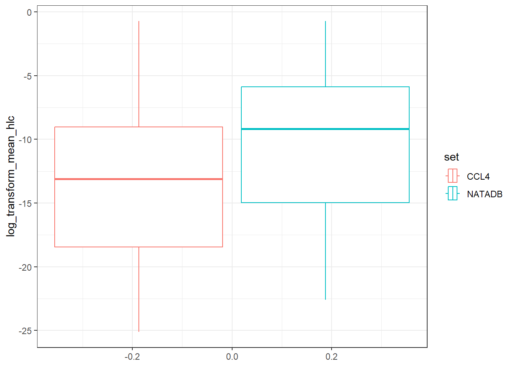

7.3 CompTox Dashboard Data through APIs
This training module was developed by Paul Kruse and Caroline Ring, with contributions from Julia E. Rager.
All input files (script, data, and figures) can be downloaded from the UNC-SRP TAME2 GitHub website.
Disclaimer: The views expressed in this document are those of the authors and do not necessarily reflect the views or policies of the U.S. EPA.
Introduction to Training Module
Environmental health research related to chemical exposures often requires accessing and wrangling chemical-specific data. The CompTox Chemicals Dashboard (CCD), developed by the United States Environmental Protection Agency, is a publicly-accessible database that integrates chemical data from multiple domains. Chemical data available on the CCD include physicochemical, environmental fate and transport, exposure, toxicokinetics, functional use, in vivo toxicity, in vitro bioassay, and mass spectra data. The CCD was first described in Williams et al. (2017), and has been continuously expanded since. The CCD is heavily used by researchers who do cheminformatics work of various kinds – computational toxicology, computational exposure science, analytical chemistry, chemical safety assessment, etc. The CCD is used by cheminformaticians not only at EPA, but across governmental agencies both within the U.S. and worldwide; in private industry; in non-governmental organizations; in academia; and others. It has become an indispensable tool for many researchers.
This training module provides an overview of the physico-chemical, hazard, and bioactivity data available through the CCD; different ways to access these data; and some examples of how these data may be used. We will first introduce the CCD and how to access it. Then we will focus on an automated, programmatic method for retrieving data from the CCD using the ctxR R package. Through some basic data visualization and analysis using the R programming language, we will explore some data retrieved from the CCD, and gain insights both in how to wrangle the data and combine different methods of accessing the data to build automated pipelines for use in more complex settings.
Note, as the ctxR package accesses data that is periodically updated, some code chunks will produce numbers that may change slightly with data updates. Keep this in mind when running these code chunks in the future.
Training Module’s Environmental Health Questions
This training module was specifically developed to answer the following questions:
After automatically pulling the fourth Drinking Water Contaminant Candidate List from the CompTox Chemicals Dashboard, list the properties and property types present in the data. What are the mean values for a specific property when grouped by property type and when ungrouped?
The physico-chemical property data are reported with both experimental and predicted values present for many chemicals. Are there differences between the mean predicted and experimental results for a variety of physico-chemical properties?
After pulling the genotoxicity data for the different environmental contaminant data sets, list the assays associated with the chemicals in each data set. How many unique assays are there in each data set? What are the different assay categories and how many unique assays for each assay category are there?
The genotoxicity data contains information on which assays have been conducted for different chemicals and the results of those assays. How many chemicals in each data set have a ‘positive’, ‘negative’, and ‘equivocal’ value for the assay result?
Based on the genotoxicity data reported for the chemical with DTXSID identifier DTXSID0020153, how many assays resulted in a positive/equivocal/negative value? Which of the assays were positive and how many of each were there for the most reported assays?
After pulling the hazard data for the different data sets, list the different exposure routes for which there is data. What are the unique risk assessment classes for hazard values for the oral route and for the inhalation exposure route? For each such exposure route, which risk assessment class is most represented by the data sets?
There are several types of toxicity values for each exposure route. List the unique toxicity values for the oral and inhalation routes. What are the unique types of toxicity values for the oral route and for the inhalation route? How many of these are common to both the oral and inhalation routes for each data set?
When examining different toxicity values, the data may be reported in multiple units. To assess the relative hazard from this data, it is important to take into account the different units and adjust accordingly. List the units reported for the cancer slope factor, reference dose, and reference concentration values associated with the oral and inhalation exposure routes for human hazard. Which chemicals in each data set have the highest cancer slope factor, lowest reference dose, and lowest reference concentration values?
Introduction to CompTox Chemicals Dashboard
Accessing chemical data and wrangling it is a vital step in many types of workflows related to chemical, biological, and environmental modeling. While there are many resources available from which one can pull data, the CompTox Chemicals Dashboard built and maintained by the United States Environmental Protection Agency is particularly well-designed and suitable for these purposes. Originally introduced in The CompTox Chemistry Dashboard: a community data resource for environmental chemistry, the CCD contains information on over 1.2 million chemicals as of December 2023.
The CCD includes chemical information from many different domains, including physicochemical, environmental fate and transport, exposure, usage, in vivo toxicity, and in vitro bioassay data (Williams et al., 2017).
The CCD can be searched either one chemical at a time, or using a batch search.
Searching One Chemical at a Time (Single-substance Search)
In single-substance search, the user types a full or partial chemical identifier (name, CASRN, InChiKey, or DSSTox ID) into a search box on the CCD homepage. Autocomplete provides a list of possible matches; the user selects one by clicking on it, and is then taken to the CCD page for that substance. Here is an example of the CCD page for the chemical Bisphenol A:
The different domains of data available for this chemical are shown by the tabs on the left side of the page: for example, “Physchem Prop.” (physico-chemical properties), “Env. Fate/Transport” (environmental fate and transport data), and “Hazard Data” (in vivo hazard and toxicity data), among others.
Batch Search
In batch search, the user enters a list of search inputs, separated by newlines, into a batch-search box on https://comptox.epa.gov/dashboard/batch-search . The user selects the type(s) of inputs by selecting one or more checkboxes – these may include chemical identifiers, monoisotopic masses, or molecular formulas. Then, the user selects “Display All Chemicals” to display the list of substances matching the batch-search inputs, or “Choose Export Options” to choose options for exporting the batch-search results as a spreadsheet. The exported spreadsheet may include data from most of the domains available on an individual substance’s CCD page.
The user can download the selected information in various formats, such as Excel (.xlsx), comma-separated values (.csv), or different types of chemical table files (.e.g, MOL).
The web interface for batch search only allows input of 10,000 identifiers at a time. If a user needs to retrieve information for more than 10,000 chemicals, they will need to separate their identifiers into multiple batches and search each one separately.
Challenges of Web-based Dashboard Search
Practicing researchers typically end up with a Dashboard workflow that looks something like this:
- Start with a dataset that includes your chemical identifiers of interest. These may include chemical names, Chemical Abstract Service Registry Numbers (CASRNs), Distributed Searchable Structure-Toxicity Database (DSSTox) identifiers, or InChIKeys.
- Export the chemical identifiers to a spreadsheet. Often, this is done by importing the data into an environment such as R or Python, in order to do some data wrangling (e.g., to select only the unique substance identfiers; to clean up improperly-formatted CASRNs; etc.). Then, the identifiers are saved in a spreadsheet (an Excel, .csv, or .txt file), one chemical identifier per row.
- Copy and paste the chemical identifiers from the spreadsheet into the CCD Batch Search box. If there are more than 10,000 total chemical identifiers, divide them into batches of 10,000 or less, and search each batch separately.
- Choose your desired export options on the CCD Batch Search page.
- Download the exported spreadsheet of CCD data. By default, the downloaded spreadsheet will be given a file name that includes the timestamp of the download.
- Repeat steps 3-5 for each batch of 10,000 identifiers produced in step 2.
- Import the downloaded spreadsheet(s) of CCD data into the analysis tool you are using (e.g. R or Python).
- Merge the table(s) of downloaded CCD data with your original dataset of interest.
- Proceed with research-related data analysis using the chemical data downloaded from the CCD (e.g., statistical modeling, visualization, etc.)
Because each of these workflow steps requires manual interaction with the search and download process, the risk of human error inevitably creeps in. Here are a few real-world possibilities (the authors can neither confirm nor deny that they have personally committed any of these errors):
- Researchers could copy/paste the wrong identifiers into the CCD batch search, especially if they have more than 10,000 identifiers and have to divide them into batches.
- Chemical identifiers could be corrupted during the process of exporting to a spreadsheet. For example, if a researcher opens and resaves a CSV file using Microsoft Excel, any information that appears to be in date-like format will be automatically converted to a date (unless the researcher has the most recently-updated version of Excel and has selected the option in Settings that will stop Excel from auto-detecting dates). This behavior has long been identified as a problem in genomics, where gene names can appear date-like to Excel (Abeysooriya et al. 2021). It also affects cheminformatics, where chemical identifiers can appear date-like to Excel. For example, the valid CASRN “1990-07-4” would automatically be converted to “07/04/1990” (if Excel is set to use MM/DD/YYYY date formats). CCD batch search cannot recognize “07/04/1990” as a valid chemical identifier and will be unable to return any chemical data.
- Researchers could accidentally rename a downloaded CCD data file to overwrite a previous download (for example, when searching multiple batches of identifiers).
- Researchers could mistakenly import the wrong CCD download file back into their analysis environment (for example, when searching multiple batches of identifiers).
Moreover, the manual stages of this kind of workflow are also non-transparent and not easily reproducible.
CCTE’s CTX Application Programming Interfaces (APIs) for Automated Batch Search of the CCD
Recently, the Center for Computational Toxicology and Exposure (CCTE) developed a set of Application Programming Interfaces (APIs) that allows programmatic access to the CCD, bypassing the manual steps of the web-based batch search workflow. The Computational Toxicology and Exposure (CTX) APIs effectively automate the process of accessing and downloading data from the web pages that make up the CCD.
The CTX APIs are publicly available at no cost to the user. However, in order to use the CTX APIs, you must have an API key. The API key uniquely identifies you to the CTX servers and verifies that you have permission to access the database. Getting an API key is free, but requires contacting the API support team at ccte_api@epa.gov.
For more information on the data accessible through the CTX APIs and related tools, please visit the US EPA page on Computational Toxicology and Exposure Online Resources. The CTX APIs are one of many resources developed within this research realm and make available many of the data resources beyond the CCD.
The APIs are organized into four sets of “endpoints” (chemical data domains): Chemical, Hazard, Bioactivity, and Exposure. Pictured below is what the Chemical section looks like and can be found at CTX API Chemical Endpoints.
The APIs can be explored through the pictured web interface at https://api-ccte.epa.gov/docs/chemical.html .
CTX API Authentication
Authentication is the first tab on the left. Authentication is required to use the APIs. To authenticate yourself in the API web interface, input your unique API key.

CTX API Endpoints
On the left of the API web interface, there are several different tabs, one for each endpoint in the Chemical domain. The endpoints are organized by the type of information provided. For instance, the Chemical Details Resource endpoint provides basic chemical information; the Chemical Property Resource endpoint provides more comprehensive physico-chemical property information; the Chemical Fate Resource endpoint provides chemical fate and transport information; and so on.
Constructing CTX API Requests
As mentioned above, APIs effectively automate the process of accessing and downloading data from the web pages that make up the CCD. APIs do this by automatically constructing requests using the Hypertext Transfer Protocol (HTTP) that enables communication between clients (e.g. your computer) and servers (e.g. the CCD).
In the CTX API web interface, the colored boxes next to each endpoint indicate the type of the associated HTTP method: either a GET request (“GET”, blue) or a a POST request (“POS”, green). GET is used to request data from a specific web resource (e.g. a specific URL); POST is used to send data to a server to create or update a web resource. For the CTX APIs, POST requests are used to perform multiple (batch) searches in a single API call; GET requests are used for non-batch searches. You do not need to understand the details of POST and GET requests in order to use the API.
Click on the second item under Chemical Details Resource, the tab labeled Get data by dtxsid. The following page will appear.
This page has two subheadings: “Path Parameters” and “Query-String Parameters”. “Path Parameters” contains user-specified parameters that are required in order to tell the API what URL (web address) to access. In this case, the required parameter is a string for the DTXSID identifying the chemical to be searched.
“Query-String Parameters” contain user-specific parameters (usually optional) that tell the API what specific type(s) of information to download from the specified URL. In this case, the optional parameter is a projection parameter, a string that can take one of five values (chemicaldetailall, chemicaldetailstandard, chemicalidentifier, chemicalstructure, ntatoolkit). Depending on the value of this string, the API can return different sets of information about the chemical. If the projection parameter is left blank, then a default set of chemical information is returned.
The default return format is displayed below and includes a variety of fields with data types represented.
We show what returned data from searching Bisphenol A looks like using this endpoint with the chemicaldetailstandard value for projection selected.
Formatting an http request is not necessarily intuitive nor worth the time for someone not already familiar with the process, so these endpoints may provide a resource that for many would require a significant investment in time and energy to learn how to use. However, there is a solution to this in the form of the R package ctxR.
ctxR was developed to streamline the process of accessing the information available through the CTX APIs without requiring prior knowledge of how to use APIs. The ctxR package is available in stable form on CRAN and a development version may be found at the USEPA ctxR GitHub repository. As an example, we demonstrate the ease with which one may retrieve the information given by this endpoint for Bisphenol A using the ctxR approach and contrast it with the approach using the CCD website or CTX Chemical API Endpoint website.
Setting, using, and storing the API key
We store the API key required to access the APIs. To do this for the current session, run the first command. If you want to store your key across multiple sessions, run the second command.
# This stores the key in the current session
register_ctx_api_key(key = '<YOUR API KEY>')
# This stores the key across multiple sessions and only needs to be run once.
# If the key changes, rerun this with the new key.
register_ctx_api_key(key = '<YOUR API KEY>', write = TRUE)#> Warning in register_ctx_api_key(key = "706401cd-8bda-469d-9cdb-ac27f489c93a", :
#> Existing file found, so overwritingTo check that your key has successfully been stored for the session, run the following command.
Retrieving chemical details
Now, we demonstrate how to retrieve the information for BPA given by the Chemical Detail Resource endpoint under the chemicaldetailstandard value for projection. Note, this projection value is the default value for the function get_chemical_details().
BPA_chemical_detail <- get_chemical_details(DTXSID = 'DTXSID7020182')
dim(BPA_chemical_detail)
#> [1] 1 37
class(BPA_chemical_detail)
#> [1] "data.table" "data.frame"
names(BPA_chemical_detail)
#> [1] "id" "cpdataCount" "inchikey"
#> [4] "wikipediaArticle" "monoisotopicMass" "percentAssays"
#> [7] "pubchemCount" "pubmedCount" "sourcesCount"
#> [10] "qcLevel" "qcLevelDesc" "isotope"
#> [13] "multicomponent" "totalAssays" "pubchemCid"
#> [16] "relatedSubstanceCount" "relatedStructureCount" "casrn"
#> [19] "compoundId" "genericSubstanceId" "preferredName"
#> [22] "activeAssays" "molFormula" "hasStructureImage"
#> [25] "iupacName" "smiles" "inchiString"
#> [28] "qcNotes" "qsarReadySmiles" "msReadySmiles"
#> [31] "irisLink" "pprtvLink" "descriptorStringTsv"
#> [34] "isMarkush" "dtxsid" "dtxcid"
#> [37] "toxcastSelect"Comparing Physico-chemical Properties between Two Important Environmental Contaminant Lists
We study two different data sets contained in the CCD and observe how they relate and how they differ. The two data sets that we will explore are a water contaminant priority list and an air toxics list.
The fourth Drinking Water Contaminant Candidate List (CCL4) is a set of chemicals that “…are not subject to any proposed or promulgated national primary drinking water regulations, but are known or anticipated to occur in public water systems….” Moreover, this list “…was announced on November 17, 2016. The CCL 4 includes 97 chemicals or chemical groups and 12 microbial contaminants….” The National-Scale Air Toxics Assessments (NATA) is “… EPA’s ongoing comprehensive evaluation of air toxics in the United States… a state-of-the-science screening tool for State/Local/Tribal agencies to prioritize pollutants, emission sources and locations of interest for further study in order to gain a better understanding of risks… use general information about sources to develop estimates of risks which are more likely to overestimate impacts than underestimate them….”
These lists can be found in the CCD at CCL4 with additional information at CCL4 information and NATADB with additional information at NATA information. The quotes from the previous paragraph were excerpted from list detail descriptions found using the CCD links.
We explore details about these two lists of chemicals before diving into analyzing the data contained in each list.
options(width = 100)
ccl4_information <- get_public_chemical_list_by_name('CCL4')
print(ccl4_information, trunc.cols = TRUE)
#> id type label visibility
#> 1 443 federal WATER|EPA: Chemical Contaminants - CCL 4 PUBLIC
#> longDescription
#> 1 The Contaminant Candidate List (CCL) is a list of contaminants that, at the time of publication, are not subject to any proposed or promulgated national primary drinking water regulations, but are known or anticipated to occur in public water systems. Contaminants listed on the CCL may require future regulation under the Safe Drinking Water Act (SDWA). EPA announced the <a href='https://www.epa.gov/ccl/contaminant-candidate-list-4-ccl-4-0' target='_blank'>fourth Drinking Water Contaminant Candidate List (CCL 4)</a> on November 17, 2016. The CCL 4 includes 97 chemicals or chemical groups and 12 microbial contaminants. The group of cyanotoxins on CCL 4 includes, but is not limited to: anatoxin-a, cylindrospermopsin, microcystins, and saxitoxin. The CCL Chemical Candidate Lists are versioned iteratively and this description navigates between the various versions of the lists. The list of substances displayed below represents only the chemical CCL 4 contaminants. For the versioned lists, please use the hyperlinked lists below.<br/><br/> \r\n\r\n<a href='https://comptox.epa.gov/dashboard/chemical_lists/CCL5' target='_blank'>CCL5 - November 2022</a> <br/><br/>\r\n<a href='https://comptox.epa.gov/dashboard/chemical_lists/CCL4' target='_blank'>CCL4 - November 2016</a> \r\n This list<br/><br/>\r\n<a href='https://comptox.epa.gov/dashboard/chemical_lists/CCL3' target='_blank'>CCL3 - October 2009</a> <br/><br/>\r\n<a href='https://comptox.epa.gov/dashboard/chemical_lists/CCL2' target='_blank'>CCL2 - February 2005</a><br/><br/>\r\n<a href='https://comptox.epa.gov/dashboard/chemical_lists/CCL1' target='_blank'>CCL1 - March 1998</a><br/><br/>
#> chemicalCount createdAt updatedAt listName
#> 1 100 2017-12-28T17:58:36Z 2022-10-26T21:14:27Z CCL4
#> shortDescription
#> 1 The Contaminant Candidate List (CCL) is a list of contaminants that are known or anticipated to occur in public water systems. Version 4 is known as CCL 4.
natadb_information <- get_public_chemical_list_by_name('NATADB')
print(natadb_information, trunc.cols = TRUE)
#> id type label visibility
#> 1 454 federal EPA: National-Scale Air Toxics Assessment (NATA) PUBLIC
#> longDescription
#> 1 The National-Scale Air Toxics Assessment (NATA) is EPA's ongoing comprehensive evaluation of air toxics in the United States. EPA developed the NATA as a state-of-the-science screening tool for State/Local/Tribal Agencies to prioritize pollutants, emission sources and locations of interest for further study in order to gain a better understanding of risks. NATA assessments do not incorporate refined information about emission sources but, rather, use general information about sources to develop estimates of risks which are more likely to overestimate impacts than underestimate them.\r\n\r\nNATA provides estimates of the risk of cancer and other serious health effects from breathing (inhaling) air toxics in order to inform both national and more localized efforts to identify and prioritize air toxics, emission source types and locations which are of greatest potential concern in terms of contributing to population risk. This in turn helps air pollution experts focus limited analytical resources on areas and or populations where the potential for health risks are highest. Assessments include estimates of cancer and non-cancer health effects based on chronic exposure from outdoor sources, including assessments of non-cancer health effects for Diesel Particulate Matter (PM). Assessments provide a snapshot of the outdoor air quality and the risks to human health that would result if air toxic emissions levels remained unchanged.
#> chemicalCount createdAt updatedAt listName
#> 1 163 2018-02-21T12:04:16Z 2018-11-16T21:42:01Z NATADB
#> shortDescription
#> 1 The National-Scale Air Toxics Assessment (NATA) is EPA's ongoing comprehensive evaluation of air toxics in the United States.Now we pull the actual chemicals contained in the lists using the APIs.
ccl4 <- get_chemicals_in_list('ccl4')
ccl4 <- data.table::as.data.table(ccl4)
natadb <- get_chemicals_in_list('NATADB')
natadb <- data.table::as.data.table(natadb)We examine the dimensions of the data, the column names, and display a single row for illustrative purposes.
dim(ccl4)
#> [1] 100 37
dim(natadb)
#> [1] 163 37
colnames(ccl4)
#> [1] "id" "cpdataCount" "inchikey" "wikipediaArticle"
#> [5] "monoisotopicMass" "percentAssays" "pubchemCount" "pubmedCount"
#> [9] "sourcesCount" "qcLevel" "qcLevelDesc" "isotope"
#> [13] "multicomponent" "totalAssays" "pubchemCid" "relatedSubstanceCount"
#> [17] "relatedStructureCount" "casrn" "compoundId" "genericSubstanceId"
#> [21] "preferredName" "activeAssays" "molFormula" "hasStructureImage"
#> [25] "iupacName" "smiles" "inchiString" "qcNotes"
#> [29] "qsarReadySmiles" "msReadySmiles" "irisLink" "pprtvLink"
#> [33] "descriptorStringTsv" "isMarkush" "dtxsid" "dtxcid"
#> [37] "toxcastSelect"
head(ccl4, 1)
#> id cpdataCount inchikey wikipediaArticle monoisotopicMass percentAssays pubchemCount
#> <char> <int> <char> <char> <num> <num> <int>
#> 1: 627129 NA <NA> <NA> NA NA NA
#> 30 variable(s) not shown: [pubmedCount <num>, sourcesCount <int>, qcLevel <int>, qcLevelDesc <char>, isotope <int>, multicomponent <int>, totalAssays <int>, pubchemCid <int>, relatedSubstanceCount <int>, relatedStructureCount <int>, ...]Accessing the Physico-chemical Property Data
Once we have the chemicals in each list, we access their physico-chemical properties. We will use the batch search forms of the function get_chem_info(), to which we supply a list of DTXSIDs.
ccl4$dtxsid
#> [1] "DTXSID001024118" "DTXSID0020153" "DTXSID0020446" "DTXSID0020573" "DTXSID0020600"
#> [6] "DTXSID0020814" "DTXSID0021464" "DTXSID0021541" "DTXSID0021917" "DTXSID0024052"
#> [11] "DTXSID0024341" "DTXSID0032578" "DTXSID1020437" "DTXSID1021407" "DTXSID1021409"
#> [16] "DTXSID1021740" "DTXSID1021798" "DTXSID1024174" "DTXSID1024207" "DTXSID1024338"
#> [21] "DTXSID1026164" "DTXSID1031040" "DTXSID1037484" "DTXSID1037486" "DTXSID1037567"
#> [26] "DTXSID2020684" "DTXSID2021028" "DTXSID2021317" "DTXSID2021731" "DTXSID2022333"
#> [31] "DTXSID2024169" "DTXSID2031083" "DTXSID2037506" "DTXSID2040282" "DTXSID2052156"
#> [36] "DTXSID3020203" "DTXSID3020702" "DTXSID3020833" "DTXSID3020964" "DTXSID3021857"
#> [41] "DTXSID3024366" "DTXSID3024869" "DTXSID3031864" "DTXSID3032464" "DTXSID3034458"
#> [46] "DTXSID3042219" "DTXSID3073137" "DTXSID3074313" "DTXSID4020533" "DTXSID4021503"
#> [51] "DTXSID4022361" "DTXSID4022367" "DTXSID4022448" "DTXSID4022991" "DTXSID4032611"
#> [56] "DTXSID4034948" "DTXSID5020023" "DTXSID5020576" "DTXSID5020601" "DTXSID5021207"
#> [61] "DTXSID5024182" "DTXSID5039224" "DTXSID50867064" "DTXSID6020301" "DTXSID6020856"
#> [66] "DTXSID6021030" "DTXSID6021032" "DTXSID6022422" "DTXSID6024177" "DTXSID6037483"
#> [71] "DTXSID6037485" "DTXSID6037568" "DTXSID7020005" "DTXSID7020215" "DTXSID7020637"
#> [76] "DTXSID7021029" "DTXSID7024241" "DTXSID7047433" "DTXSID8020044" "DTXSID8020090"
#> [81] "DTXSID8020597" "DTXSID8020832" "DTXSID8021062" "DTXSID8022292" "DTXSID8022377"
#> [86] "DTXSID8023846" "DTXSID8023848" "DTXSID8025541" "DTXSID8031865" "DTXSID8052483"
#> [91] "DTXSID9020243" "DTXSID9021390" "DTXSID9021427" "DTXSID9022366" "DTXSID9023380"
#> [96] "DTXSID9023914" "DTXSID9024142" "DTXSID9032113" "DTXSID9032119" "DTXSID9032329"
natadb$dtxsid
#> [1] "DTXSID0020153" "DTXSID0020448" "DTXSID0020523" "DTXSID0020529" "DTXSID0020600"
#> [6] "DTXSID0020868" "DTXSID0021381" "DTXSID0021383" "DTXSID0021541" "DTXSID0021834"
#> [11] "DTXSID0021917" "DTXSID0021965" "DTXSID0024187" "DTXSID0024260" "DTXSID0039227"
#> [16] "DTXSID0039229" "DTXSID00872421" "DTXSID1020148" "DTXSID1020273" "DTXSID1020302"
#> [21] "DTXSID1020306" "DTXSID1020431" "DTXSID1020437" "DTXSID1020512" "DTXSID1020516"
#> [26] "DTXSID1020566" "DTXSID1021374" "DTXSID1021798" "DTXSID1021827" "DTXSID1022057"
#> [31] "DTXSID1023786" "DTXSID1024045" "DTXSID1024382" "DTXSID1026164" "DTXSID1049641"
#> [36] "DTXSID10872417" "DTXSID2020137" "DTXSID2020262" "DTXSID2020507" "DTXSID2020682"
#> [41] "DTXSID2020688" "DTXSID2020711" "DTXSID2020844" "DTXSID2021105" "DTXSID2021157"
#> [46] "DTXSID2021159" "DTXSID2021284" "DTXSID2021286" "DTXSID2021319" "DTXSID2021446"
#> [51] "DTXSID2021658" "DTXSID2021731" "DTXSID2021781" "DTXSID2021993" "DTXSID3020203"
#> [56] "DTXSID3020257" "DTXSID3020413" "DTXSID3020415" "DTXSID3020596" "DTXSID3020679"
#> [61] "DTXSID3020702" "DTXSID3020833" "DTXSID3020964" "DTXSID3021431" "DTXSID3021932"
#> [66] "DTXSID3022455" "DTXSID3024366" "DTXSID3025091" "DTXSID3039242" "DTXSID30872414"
#> [71] "DTXSID30872419" "DTXSID4020161" "DTXSID4020298" "DTXSID4020402" "DTXSID4020533"
#> [76] "DTXSID4020583" "DTXSID4020874" "DTXSID4020901" "DTXSID4021006" "DTXSID4021056"
#> [81] "DTXSID4021395" "DTXSID4024143" "DTXSID4024359" "DTXSID4039231" "DTXSID40872425"
#> [86] "DTXSID5020023" "DTXSID5020027" "DTXSID5020029" "DTXSID5020071" "DTXSID5020316"
#> [91] "DTXSID5020449" "DTXSID5020491" "DTXSID5020601" "DTXSID5020607" "DTXSID5020865"
#> [96] "DTXSID5021124" "DTXSID5021207" "DTXSID5021380" "DTXSID5021386" "DTXSID5021889"
#> [101] "DTXSID5024055" "DTXSID5024059" "DTXSID5024267" "DTXSID5039224" "DTXSID6020145"
#> [106] "DTXSID6020307" "DTXSID6020353" "DTXSID6020432" "DTXSID6020438" "DTXSID6020515"
#> [111] "DTXSID6020569" "DTXSID6020981" "DTXSID6021828" "DTXSID6022422" "DTXSID6023947"
#> [116] "DTXSID6023949" "DTXSID7020005" "DTXSID7020009" "DTXSID7020267" "DTXSID7020637"
#> [121] "DTXSID7020683" "DTXSID7020687" "DTXSID7020689" "DTXSID7020710" "DTXSID7020716"
#> [126] "DTXSID7021029" "DTXSID7021100" "DTXSID7021106" "DTXSID7021318" "DTXSID7021360"
#> [131] "DTXSID7021368" "DTXSID7021948" "DTXSID7023984" "DTXSID7024166" "DTXSID7024370"
#> [136] "DTXSID7024532" "DTXSID7025180" "DTXSID7026156" "DTXSID8020090" "DTXSID8020173"
#> [141] "DTXSID8020250" "DTXSID8020597" "DTXSID8020599" "DTXSID8020759" "DTXSID8020832"
#> [146] "DTXSID8020913" "DTXSID8021195" "DTXSID8021197" "DTXSID8021432" "DTXSID8021434"
#> [151] "DTXSID8021438" "DTXSID8024286" "DTXSID8042476" "DTXSID9020168" "DTXSID9020243"
#> [156] "DTXSID9020247" "DTXSID9020293" "DTXSID9020299" "DTXSID9020827" "DTXSID9021138"
#> [161] "DTXSID9021261" "DTXSID9041522" "DTXSID90872415"
ccl4_phys_chem <- get_chem_info_batch(ccl4$dtxsid)
#> Warning in get_chem_info_batch(ccl4$dtxsid): Setting type to ''!
natadb_phys_chem <- get_chem_info_batch(natadb$dtxsid)
#> Warning in get_chem_info_batch(natadb$dtxsid): Setting type to ''!Observe that this returns a single data.table for each query, and the data.table contains the physico-chemical properties available from the CompTox Chemicals Dashboard for each chemical in the query. Note, a warning message was triggered, Warning: Setting type to ''!, which indicates the the parameter type was not given a value. A default value is set within the function and more information can be found in the associated documentation. We examine the set of physico-chemical properties for the first chemical in CCL4.
Before any deeper analysis, let’s take a look at the dimensions of the data and the column names.
dim(ccl4_phys_chem)
#> [1] 3641 10
colnames(ccl4_phys_chem)
#> [1] "name" "value" "id" "source" "description" "propType"
#> [7] "unit" "propertyId" "dtxsid" "dtxcid"Next, we display the unique values for the columns propertyID and propType.
ccl4_phys_chem[, unique(propertyId)]
#> [1] "boiling-point" "logkow-octanol-water" "melting-point" "vapor-pressure"
#> [5] "water-solubility" "density" "flash-point" "henrys-law"
#> [9] "index-of-refraction" "logkoa-octanol-air" "molar-refractivity" "molar-volume"
#> [13] "polarizability" "surface-tension" "thermal-conductivity" "viscosity"
#> [17] "pka-acidic-apparent" "pka-basic-apparent"
ccl4_phys_chem[, unique(propType)]
#> [1] "experimental" "predicted"Let’s explore this further by examining the mean of the “boiling-point” and “melting-point” data.
ccl4_phys_chem[propertyId == 'boiling-point', .(Mean = mean(value))]
#> Mean
#> <num>
#> 1: 253.7974
ccl4_phys_chem[propertyId == 'boiling-point', .(Mean = mean(value)),
by = .(propType)]
#> propType Mean
#> <char> <num>
#> 1: experimental 250.5943
#> 2: predicted 255.5472
ccl4_phys_chem[propertyId == 'melting-point', .(Mean = mean(value))]
#> Mean
#> <num>
#> 1: 36.14033
ccl4_phys_chem[propertyId == 'melting-point', .(Mean = mean(value)),
by = .(propType)]
#> propType Mean
#> <char> <num>
#> 1: experimental 23.64972
#> 2: predicted 51.93584These results tell us about some of the reported physico-chemical properties of the data sets.
Answer to Environmental Health Question 1
With this, we can answer Environmental Health Question 1: After automatically pulling the fourth Drinking Water Contaminant Candidate List from the CompTox Chemicals Dashboard, list the properties and property types present in the data. What are the mean values for a specific property when grouped by property type and when ungrouped?
Answer: The mean “boiling-point” is 253.7974 degrees Celsius for CCL4, with mean values of 250.5943 and 255.5472 for experimental and predicted, respectively. The mean “melting-point” is 36.14033 degrees Celsius for CCL4, with mean values of 23.64972 and 51.93584 for experimental and predicted, respectively.
To explore all the values of the physico-chemical properties and calculate their means, we can do the following procedure. First we look at all the physico-chemical properties individually, then group them by each property (“boiling-point”, “melting-point”, etc…), and then additionally group those by property type (“experimental” vs “predicted”). In the grouping, we look at the columns value, unit, propertyID and propType. We also demonstrate how take the mean of the values for each grouping. We examine the chemical with DTXSID “DTXSID0020153” from CCL4.
head(ccl4_phys_chem[dtxsid == 'DTXSID0020153', ])
#> name value id source description
#> <char> <num> <int> <char> <char>
#> 1: Boiling Point 179.000 21943219 SynQuest Labs (Chemical c SynQuest has a focus on f
#> 2: Boiling Point 178.889 23836860 NIOSH The NIOSH Pocket Guide to
#> 3: Boiling Point 179.000 11959465 PhysPropNCCT The PHYSPROP data sets ar
#> 4: Boiling Point 179.000 15585758 Biosynth (Chemical compan Biosynth produces reagen
#> 5: Boiling Point 179.000 8401215 Alfa Aesar (Chemical comp Alfa Aesar is a leading i
#> 6: LogKow: Octanol-Water 2.300 17007695 PhysPropNCCT The PHYSPROP data sets ar
#> 5 variable(s) not shown: [propType <char>, unit <char>, propertyId <char>, dtxsid <char>, dtxcid <char>]
ccl4_phys_chem[dtxsid == 'DTXSID0020153', .(propType, value, unit),
by = .(propertyId)]
#> propertyId propType value unit
#> <char> <char> <num> <char>
#> 1: boiling-point experimental 179.00000000 °C
#> 2: boiling-point experimental 178.88900000 °C
#> 3: boiling-point experimental 179.00000000 °C
#> 4: boiling-point experimental 179.00000000 °C
#> 5: boiling-point experimental 179.00000000 °C
#> 6: boiling-point predicted 178.47300000 °C
#> 7: boiling-point predicted 179.39900000 °C
#> 8: boiling-point predicted 178.70000000 °C
#> 9: boiling-point predicted 184.18000000 °C
#> 10: logkow-octanol-water experimental 2.30000000 <NA>
#> 11: logkow-octanol-water predicted 2.63800000 <NA>
#> 12: logkow-octanol-water predicted 2.30213000 <NA>
#> 13: logkow-octanol-water predicted 2.48700000 <NA>
#> 14: logkow-octanol-water predicted 2.79000000 <NA>
#> 15: melting-point experimental -39.20000000 °C
#> 16: melting-point experimental -43.00000000 °C
#> 17: melting-point experimental -45.00000000 °C
#> 18: melting-point experimental -38.88890000 °C
#> 19: melting-point experimental -45.00000000 °C
#> 20: melting-point experimental -43.00000000 °C
#> 21: melting-point experimental -43.00000000 °C
#> 22: melting-point predicted -26.57100000 °C
#> 23: melting-point predicted -44.01140000 °C
#> 24: melting-point predicted -27.15000000 °C
#> 25: vapor-pressure experimental 1.22999000 mmHg
#> 26: vapor-pressure predicted 1.23752000 mmHg
#> 27: vapor-pressure predicted 1.99986000 mmHg
#> 28: vapor-pressure predicted 1.27700000 mmHg
#> 29: water-solubility experimental 0.00407380 mol/L
#> 30: water-solubility experimental 0.00955000 mol/L
#> 31: water-solubility experimental 0.00417000 mol/L
#> 32: water-solubility experimental 0.00407380 mol/L
#> 33: water-solubility experimental 0.00414763 mol/L
#> 34: water-solubility predicted 0.00300608 mol/L
#> 35: water-solubility predicted 0.00813715 mol/L
#> 36: water-solubility predicted 0.00484108 mol/L
#> 37: water-solubility predicted 0.00100000 mol/L
#> 38: density predicted 1.08100000 g/cm^3
#> 39: density predicted 1.10000000 g/cm^3
#> 40: flash-point predicted 73.88900000 °C
#> 41: flash-point predicted 73.39500000 °C
#> 42: henrys-law predicted 0.00291872 atm-m3/mole
#> 43: index-of-refraction predicted 1.52700000 <NA>
#> 44: logkoa-octanol-air predicted 4.15646000 <NA>
#> 45: molar-refractivity predicted 36.01800000 cm^3
#> 46: molar-volume predicted 117.12900000 cm^3
#> 47: polarizability predicted 14.27900000 Å^3
#> 48: surface-tension predicted 34.66800000 dyn/cm
#> 49: surface-tension predicted 33.85300000 dyn/cm
#> 50: thermal-conductivity predicted 131.28800000 mW/(m*K)
#> 51: viscosity predicted 1.40281000 cP
#> propertyId propType value unit
ccl4_phys_chem[dtxsid == 'DTXSID0020153', .(value, unit),
by = .(propertyId, propType)]
#> propertyId propType value unit
#> <char> <char> <num> <char>
#> 1: boiling-point experimental 179.00000000 °C
#> 2: boiling-point experimental 178.88900000 °C
#> 3: boiling-point experimental 179.00000000 °C
#> 4: boiling-point experimental 179.00000000 °C
#> 5: boiling-point experimental 179.00000000 °C
#> 6: logkow-octanol-water experimental 2.30000000 <NA>
#> 7: melting-point experimental -39.20000000 °C
#> 8: melting-point experimental -43.00000000 °C
#> 9: melting-point experimental -45.00000000 °C
#> 10: melting-point experimental -38.88890000 °C
#> 11: melting-point experimental -45.00000000 °C
#> 12: melting-point experimental -43.00000000 °C
#> 13: melting-point experimental -43.00000000 °C
#> 14: vapor-pressure experimental 1.22999000 mmHg
#> 15: water-solubility experimental 0.00407380 mol/L
#> 16: water-solubility experimental 0.00955000 mol/L
#> 17: water-solubility experimental 0.00417000 mol/L
#> 18: water-solubility experimental 0.00407380 mol/L
#> 19: water-solubility experimental 0.00414763 mol/L
#> 20: boiling-point predicted 178.47300000 °C
#> 21: boiling-point predicted 179.39900000 °C
#> 22: boiling-point predicted 178.70000000 °C
#> 23: boiling-point predicted 184.18000000 °C
#> 24: density predicted 1.08100000 g/cm^3
#> 25: density predicted 1.10000000 g/cm^3
#> 26: flash-point predicted 73.88900000 °C
#> 27: flash-point predicted 73.39500000 °C
#> 28: henrys-law predicted 0.00291872 atm-m3/mole
#> 29: index-of-refraction predicted 1.52700000 <NA>
#> 30: logkoa-octanol-air predicted 4.15646000 <NA>
#> 31: logkow-octanol-water predicted 2.63800000 <NA>
#> 32: logkow-octanol-water predicted 2.30213000 <NA>
#> 33: logkow-octanol-water predicted 2.48700000 <NA>
#> 34: logkow-octanol-water predicted 2.79000000 <NA>
#> 35: melting-point predicted -26.57100000 °C
#> 36: melting-point predicted -44.01140000 °C
#> 37: melting-point predicted -27.15000000 °C
#> 38: molar-refractivity predicted 36.01800000 cm^3
#> 39: molar-volume predicted 117.12900000 cm^3
#> 40: polarizability predicted 14.27900000 Å^3
#> 41: surface-tension predicted 34.66800000 dyn/cm
#> 42: surface-tension predicted 33.85300000 dyn/cm
#> 43: thermal-conductivity predicted 131.28800000 mW/(m*K)
#> 44: vapor-pressure predicted 1.23752000 mmHg
#> 45: vapor-pressure predicted 1.99986000 mmHg
#> 46: vapor-pressure predicted 1.27700000 mmHg
#> 47: viscosity predicted 1.40281000 cP
#> 48: water-solubility predicted 0.00300608 mol/L
#> 49: water-solubility predicted 0.00813715 mol/L
#> 50: water-solubility predicted 0.00484108 mol/L
#> 51: water-solubility predicted 0.00100000 mol/L
#> propertyId propType value unit
ccl4_phys_chem[dtxsid == 'DTXSID0020153', .(Mean_value = sapply(.SD, mean)),
by = .(propertyId, unit), .SDcols = c("value")]
#> propertyId unit Mean_value
#> <char> <char> <num>
#> 1: boiling-point °C 179.515666667
#> 2: logkow-octanol-water <NA> 2.503426000
#> 3: melting-point °C -39.482130000
#> 4: vapor-pressure mmHg 1.436092500
#> 5: water-solubility mol/L 0.004777727
#> 6: density g/cm^3 1.090500000
#> 7: flash-point °C 73.642000000
#> 8: henrys-law atm-m3/mole 0.002918720
#> 9: index-of-refraction <NA> 1.527000000
#> 10: logkoa-octanol-air <NA> 4.156460000
#> 11: molar-refractivity cm^3 36.018000000
#> 12: molar-volume cm^3 117.129000000
#> 13: polarizability Å^3 14.279000000
#> 14: surface-tension dyn/cm 34.260500000
#> 15: thermal-conductivity mW/(m*K) 131.288000000
#> 16: viscosity cP 1.402810000
ccl4_phys_chem[dtxsid == 'DTXSID0020153', .(Mean_value = sapply(.SD, mean)),
by = .(propertyId, unit, propType),
.SDcols = c("value")][order(propertyId)]
#> propertyId unit propType Mean_value
#> <char> <char> <char> <num>
#> 1: boiling-point °C experimental 178.977800000
#> 2: boiling-point °C predicted 180.188000000
#> 3: density g/cm^3 predicted 1.090500000
#> 4: flash-point °C predicted 73.642000000
#> 5: henrys-law atm-m3/mole predicted 0.002918720
#> 6: index-of-refraction <NA> predicted 1.527000000
#> 7: logkoa-octanol-air <NA> predicted 4.156460000
#> 8: logkow-octanol-water <NA> experimental 2.300000000
#> 9: logkow-octanol-water <NA> predicted 2.554282500
#> 10: melting-point °C experimental -42.441271429
#> 11: melting-point °C predicted -32.577466667
#> 12: molar-refractivity cm^3 predicted 36.018000000
#> 13: molar-volume cm^3 predicted 117.129000000
#> 14: polarizability Å^3 predicted 14.279000000
#> 15: surface-tension dyn/cm predicted 34.260500000
#> 16: thermal-conductivity mW/(m*K) predicted 131.288000000
#> 17: vapor-pressure mmHg experimental 1.229990000
#> 18: vapor-pressure mmHg predicted 1.504793333
#> 19: viscosity cP predicted 1.402810000
#> 20: water-solubility mol/L experimental 0.005203046
#> 21: water-solubility mol/L predicted 0.004246077
#> propertyId unit propType Mean_valueAnalyzing and Visualizing Physico-chemical Properties from Two Environmental Contaminant Lists
We consider exploring the differences in mean predicted and experimental values for a variety of physico-chemical properties in an effort to understand better the CCL4 and NATADB lists. In particular, we examine “vapor-pressure”, “henrys-law”, and “boiling-point” and plot the means by chemical for these using boxplots. We then compare the values by grouping by both data set and propType value.
We first examine the vapor pressures for all the chemicals in each list. We then graph these, grouped by propType and pooled together in separate plots. For this we will use boxplots.
Group first by DTXSID.
ccl4_vapor_all <- ccl4_phys_chem[propertyId %in% 'vapor-pressure',
.(mean_vapor_pressure = sapply(.SD, mean)),
.SDcols = c('value'), by = .(dtxsid)]
natadb_vapor_all <- natadb_phys_chem[propertyId %in% 'vapor-pressure',
.(mean_vapor_pressure = sapply(.SD, mean)),
.SDcols = c('value'), by = .(dtxsid)]Then group by DTXSID and then by property type.
ccl4_vapor_grouped <- ccl4_phys_chem[propertyId %in% 'vapor-pressure',
.(mean_vapor_pressure = sapply(.SD, mean)),
.SDcols = c('value'),
by = .(dtxsid, propType)]
natadb_vapor_grouped <- natadb_phys_chem[propertyId %in% 'vapor-pressure',
.(mean_vapor_pressure =
sapply(.SD, mean)),
.SDcols = c('value'),
by = .(dtxsid, propType)]Then examine the summary statistics of the data.
summary(ccl4_vapor_all)
#> dtxsid mean_vapor_pressure
#> Length:88 Min. : 0.000
#> Class :character 1st Qu.: 0.000
#> Mode :character Median : 0.001
#> Mean : 211.735
#> 3rd Qu.: 5.009
#> Max. :6007.244
summary(ccl4_vapor_grouped)
#> dtxsid propType mean_vapor_pressure
#> Length:147 Length:147 Min. : 0.000
#> Class :character Class :character 1st Qu.: 0.000
#> Mode :character Mode :character Median : 0.060
#> Mean : 252.599
#> 3rd Qu.: 9.851
#> Max. :7252.700
summary(natadb_vapor_all)
#> dtxsid mean_vapor_pressure
#> Length:151 Min. : 0.00
#> Class :character 1st Qu.: 0.01
#> Mode :character Median : 1.44
#> Mean : 851.70
#> 3rd Qu.: 116.65
#> Max. :33917.88
summary(natadb_vapor_grouped)
#> dtxsid propType mean_vapor_pressure
#> Length:274 Length:274 Min. : 0.00
#> Class :character Class :character 1st Qu.: 0.01
#> Mode :character Mode :character Median : 1.68
#> Mean : 587.02
#> 3rd Qu.: 112.59
#> Max. :33917.88With such a large range of values covering several orders of magnitude, we log transform the data. Since these value are positive, we do not have to worry about illegal transformations.
ccl4_vapor_all[, log_transform_mean_vapor_pressure := log(mean_vapor_pressure)]
#> dtxsid mean_vapor_pressure log_transform_mean_vapor_pressure
#> <char> <num> <num>
#> 1: DTXSID0020153 1.436092e+00 0.3619259
#> 2: DTXSID0020446 1.211530e-06 -13.6236263
#> 3: DTXSID0020573 1.016181e-08 -18.4046290
#> 4: DTXSID0020600 1.060440e+03 6.9664394
#> 5: DTXSID0020814 1.713402e-08 -17.8821999
#> 6: DTXSID0021464 1.020300e+01 2.3226818
#> 7: DTXSID0021541 3.623345e+03 8.1951530
#> 8: DTXSID0021917 1.447043e+02 4.9746920
#> 9: DTXSID0024052 2.579787e-07 -15.1703889
#> 10: DTXSID0032578 3.546976e-05 -10.2468302
#> 11: DTXSID1020437 2.153143e+02 5.3720986
#> 12: DTXSID1021407 9.093477e-04 -7.0027830
#> 13: DTXSID1021409 4.170000e-08 -16.9927647
#> 14: DTXSID1021740 6.808950e+00 1.9182379
#> 15: DTXSID1021798 5.779040e-02 -2.8509326
#> 16: DTXSID1024174 5.616588e-06 -12.0897863
#> 17: DTXSID1024338 7.125250e-08 -16.4570359
#> 18: DTXSID1026164 2.444570e-01 -1.4087159
#> 19: DTXSID1037484 4.124746e-07 -14.7010911
#> 20: DTXSID1037486 4.206599e-07 -14.6814412
#> 21: DTXSID1037567 4.633640e-08 -16.8873380
#> 22: DTXSID2020684 3.733735e-03 -5.5903463
#> 23: DTXSID2021028 1.127656e+00 0.1201408
#> 24: DTXSID2021317 1.563302e+01 2.7493857
#> 25: DTXSID2021731 2.360838e+02 5.4641866
#> 26: DTXSID2022333 1.685188e+00 0.5218768
#> 27: DTXSID2037506 8.393291e-06 -11.6880778
#> 28: DTXSID2052156 3.878108e-09 -19.3679185
#> 29: DTXSID3020203 1.876293e+03 7.5370534
#> 30: DTXSID3020702 2.074800e+01 3.0324499
#> 31: DTXSID3020833 2.420272e+02 5.4890503
#> 32: DTXSID3020964 2.336795e-01 -1.4538048
#> 33: DTXSID3024366 5.501190e+01 4.0075495
#> 34: DTXSID3024869 1.885188e-02 -3.9711425
#> 35: DTXSID3031864 2.479965e-06 -12.9072661
#> 36: DTXSID3032464 1.727766e-06 -13.2686813
#> 37: DTXSID3034458 6.440000e-11 -23.4659075
#> 38: DTXSID3042219 3.106110e+00 1.1333711
#> 39: DTXSID3074313 1.481081e-11 -24.9356641
#> 40: DTXSID4020533 4.036368e+01 3.6979302
#> 41: DTXSID4021503 1.722775e+02 5.1491065
#> 42: DTXSID4022361 3.226160e-06 -12.6442179
#> 43: DTXSID4022367 1.643378e-08 -17.9239267
#> 44: DTXSID4022448 1.773129e-05 -10.9401797
#> 45: DTXSID4022991 1.440972e-10 -22.6605333
#> 46: DTXSID4032611 5.263403e-04 -7.5495627
#> 47: DTXSID4034948 3.744327e-08 -17.1004389
#> 48: DTXSID5020023 2.545125e+02 5.5393500
#> 49: DTXSID5020576 5.737673e-09 -18.9762122
#> 50: DTXSID5020601 1.428200e+00 0.3564147
#> 51: DTXSID5021207 4.463567e+02 6.1011185
#> 52: DTXSID5024182 7.171160e+00 1.9700674
#> 53: DTXSID5039224 7.963770e+02 6.6800727
#> 54: DTXSID50867064 1.522060e-03 -6.4876906
#> 55: DTXSID6020301 6.007244e+03 8.7007213
#> 56: DTXSID6020856 2.909907e-01 -1.2344638
#> 57: DTXSID6021030 3.562765e-05 -10.2423885
#> 58: DTXSID6021032 8.306000e-01 -0.1856069
#> 59: DTXSID6022422 1.921524e-06 -13.1623921
#> 60: DTXSID6024177 7.035691e-02 -2.6541743
#> 61: DTXSID6037483 4.847560e-08 -16.8422053
#> 62: DTXSID6037485 4.976030e-08 -16.8160484
#> 63: DTXSID6037568 2.875770e-07 -15.0617752
#> 64: DTXSID7020005 6.776980e-02 -2.6916386
#> 65: DTXSID7020637 1.836866e+03 7.5158163
#> 66: DTXSID7021029 3.323853e+00 1.2011248
#> 67: DTXSID7024241 2.031631e-06 -13.1066715
#> 68: DTXSID7047433 1.073489e-08 -18.3497663
#> 69: DTXSID8020044 2.447645e+01 3.1977114
#> 70: DTXSID8020090 5.073765e-01 -0.6785019
#> 71: DTXSID8020597 2.037895e-01 -1.5906676
#> 72: DTXSID8020832 1.520093e+03 7.3265271
#> 73: DTXSID8021062 1.180510e-01 -2.1366388
#> 74: DTXSID8022292 1.528695e-08 -17.9962663
#> 75: DTXSID8022377 1.016181e-08 -18.4046290
#> 76: DTXSID8023846 1.702425e-06 -13.2834569
#> 77: DTXSID8023848 8.277807e-06 -11.7019325
#> 78: DTXSID8025541 1.949228e-05 -10.8454918
#> 79: DTXSID8031865 8.386721e-01 -0.1759355
#> 80: DTXSID9020243 1.186626e-04 -9.0392263
#> 81: DTXSID9021390 4.408660e+00 1.4835708
#> 82: DTXSID9021427 3.637282e-01 -1.0113483
#> 83: DTXSID9022366 1.506794e-09 -20.3132814
#> 84: DTXSID9023380 1.149256e-08 -18.2815660
#> 85: DTXSID9023914 3.131080e-04 -8.0689624
#> 86: DTXSID9024142 2.739923e-09 -19.7153359
#> 87: DTXSID9032113 2.981382e-08 -17.3282936
#> 88: DTXSID9032329 7.041032e-07 -14.1663408
#> dtxsid mean_vapor_pressure log_transform_mean_vapor_pressure
ccl4_vapor_grouped[, log_transform_mean_vapor_pressure :=
log(mean_vapor_pressure)]
#> dtxsid propType mean_vapor_pressure log_transform_mean_vapor_pressure
#> <char> <char> <num> <num>
#> 1: DTXSID0020153 experimental 1.229990e+00 0.2070060
#> 2: DTXSID0020153 predicted 1.504793e+00 0.4086556
#> 3: DTXSID0020446 experimental 6.899220e-08 -16.4892724
#> 4: DTXSID0020446 predicted 1.592376e-06 -13.3502831
#> 5: DTXSID0020573 predicted 1.016181e-08 -18.4046290
#> ---
#> 143: DTXSID9024142 predicted 2.059810e-09 -20.0006521
#> 144: DTXSID9032113 experimental 1.279970e-08 -18.1738441
#> 145: DTXSID9032113 predicted 3.548520e-08 -17.1541501
#> 146: DTXSID9032329 experimental 8.000180e-07 -14.0386316
#> 147: DTXSID9032329 predicted 6.721317e-07 -14.2128116
natadb_vapor_all[, log_transform_mean_vapor_pressure :=
log(mean_vapor_pressure)]
#> dtxsid mean_vapor_pressure log_transform_mean_vapor_pressure
#> <char> <num> <num>
#> 1: DTXSID0020153 1.436092e+00 0.3619259
#> 2: DTXSID0020448 4.899910e+01 3.8918019
#> 3: DTXSID0020523 2.824828e-04 -8.1718931
#> 4: DTXSID0020529 7.603507e-04 -7.1817307
#> 5: DTXSID0020600 1.060440e+03 6.9664394
#> ---
#> 147: DTXSID9020293 3.124725e-02 -3.4658239
#> 148: DTXSID9020299 1.177018e-06 -13.6525264
#> 149: DTXSID9020827 2.930390e-06 -12.7403750
#> 150: DTXSID9021138 3.619153e-03 -5.6215152
#> 151: DTXSID9041522 6.433997e-05 -9.6513295
natadb_vapor_grouped[, log_transform_mean_vapor_pressure :=
log(mean_vapor_pressure)]
#> dtxsid propType mean_vapor_pressure log_transform_mean_vapor_pressure
#> <char> <char> <num> <num>
#> 1: DTXSID0020153 experimental 1.229990e+00 0.2070060
#> 2: DTXSID0020153 predicted 1.504793e+00 0.4086556
#> 3: DTXSID0020448 experimental 5.329670e+01 3.9758744
#> 4: DTXSID0020448 predicted 4.756657e+01 3.8621301
#> 5: DTXSID0020523 experimental 3.900320e-04 -7.8492818
#> ---
#> 270: DTXSID9020299 experimental 2.199890e-06 -13.0271032
#> 271: DTXSID9020299 predicted 8.360607e-07 -13.9945647
#> 272: DTXSID9020827 predicted 2.930390e-06 -12.7403750
#> 273: DTXSID9021138 predicted 3.619153e-03 -5.6215152
#> 274: DTXSID9041522 predicted 6.433997e-05 -9.6513295Now we plot the log transformed data.
First plot the CCL4 data.
Then plot the NATA data.
Finally, we compare both sets simultaneously. We add in a column to each data.table denoting to which data set the rows correspond and then combine the rows from both data sets together using the function rbind().
ccl4_vapor_grouped[, set := 'CCL4']
#> dtxsid propType mean_vapor_pressure log_transform_mean_vapor_pressure set
#> <char> <char> <num> <num> <char>
#> 1: DTXSID0020153 experimental 1.229990e+00 0.2070060 CCL4
#> 2: DTXSID0020153 predicted 1.504793e+00 0.4086556 CCL4
#> 3: DTXSID0020446 experimental 6.899220e-08 -16.4892724 CCL4
#> 4: DTXSID0020446 predicted 1.592376e-06 -13.3502831 CCL4
#> 5: DTXSID0020573 predicted 1.016181e-08 -18.4046290 CCL4
#> ---
#> 143: DTXSID9024142 predicted 2.059810e-09 -20.0006521 CCL4
#> 144: DTXSID9032113 experimental 1.279970e-08 -18.1738441 CCL4
#> 145: DTXSID9032113 predicted 3.548520e-08 -17.1541501 CCL4
#> 146: DTXSID9032329 experimental 8.000180e-07 -14.0386316 CCL4
#> 147: DTXSID9032329 predicted 6.721317e-07 -14.2128116 CCL4
natadb_vapor_grouped[, set := 'NATADB']
#> dtxsid propType mean_vapor_pressure log_transform_mean_vapor_pressure set
#> <char> <char> <num> <num> <char>
#> 1: DTXSID0020153 experimental 1.229990e+00 0.2070060 NATADB
#> 2: DTXSID0020153 predicted 1.504793e+00 0.4086556 NATADB
#> 3: DTXSID0020448 experimental 5.329670e+01 3.9758744 NATADB
#> 4: DTXSID0020448 predicted 4.756657e+01 3.8621301 NATADB
#> 5: DTXSID0020523 experimental 3.900320e-04 -7.8492818 NATADB
#> ---
#> 270: DTXSID9020299 experimental 2.199890e-06 -13.0271032 NATADB
#> 271: DTXSID9020299 predicted 8.360607e-07 -13.9945647 NATADB
#> 272: DTXSID9020827 predicted 2.930390e-06 -12.7403750 NATADB
#> 273: DTXSID9021138 predicted 3.619153e-03 -5.6215152 NATADB
#> 274: DTXSID9041522 predicted 6.433997e-05 -9.6513295 NATADB
all_vapor_grouped <- rbind(ccl4_vapor_grouped, natadb_vapor_grouped)Now we plot the combined data. First we color the boxplots based on the property type, with mean log transformed vapor pressure plotted for each data set and property type.
vapor_box <- ggplot(all_vapor_grouped,
aes(set, log_transform_mean_vapor_pressure)) +
geom_boxplot(aes(color = propType))
vapor_boxNext we color the boxplots based on the data set.
vapor <- ggplot(all_vapor_grouped, aes(log_transform_mean_vapor_pressure)) +
geom_boxplot((aes(color = set))) +
coord_flip()
vaporIn the plots above, when we graph the data separated both by data set and property type as well as just by data set, we observe the general trend that the NATADB chemicals have a higher mean vapor pressure than the CCL4 chemicals.
We also explore Henry’s Law constant and boiling point in a similar fashion.
Group by DTXSID.
ccl4_hlc_all <- ccl4_phys_chem[propertyId %in% 'henrys-law',
.(mean_hlc = sapply(.SD, mean)),
.SDcols = c('value'), by = .(dtxsid)]
natadb_hlc_all <- natadb_phys_chem[propertyId %in% 'henrys-law',
.(mean_hlc = sapply(.SD, mean)),
.SDcols = c('value'), by = .(dtxsid)]Group by DTXSID and property type.
ccl4_hlc_grouped <- ccl4_phys_chem[propertyId %in% 'henrys-law',
.(mean_hlc = sapply(.SD, mean)),
.SDcols = c('value'),
by = .(dtxsid, propType)]
natadb_hlc_grouped <- natadb_phys_chem[propertyId %in% 'henrys-law',
.(mean_hlc = sapply(.SD, mean)),
.SDcols = c('value'),
by = .(dtxsid, propType)]Examine summary statistics.
summary(ccl4_hlc_all)
#> dtxsid mean_hlc
#> Length:84 Min. :0.0000000
#> Class :character 1st Qu.:0.0000000
#> Mode :character Median :0.0000007
#> Mean :0.0074491
#> 3rd Qu.:0.0000171
#> Max. :0.4922550
summary(ccl4_hlc_grouped)
#> dtxsid propType mean_hlc
#> Length:112 Length:112 Min. :0.0000000
#> Class :character Class :character 1st Qu.:0.0000000
#> Mode :character Mode :character Median :0.0000020
#> Mean :0.0062734
#> 3rd Qu.:0.0001211
#> Max. :0.4922550
summary(natadb_hlc_all)
#> dtxsid mean_hlc
#> Length:145 Min. :0.0000000
#> Class :character 1st Qu.:0.0000002
#> Mode :character Median :0.0000310
#> Mean :0.0085716
#> 3rd Qu.:0.0011833
#> Max. :0.4922550
summary(natadb_hlc_grouped)
#> dtxsid propType mean_hlc
#> Length:211 Length:211 Min. :0.0000000
#> Class :character Class :character 1st Qu.:0.0000003
#> Mode :character Mode :character Median :0.0001027
#> Mean :0.0073001
#> 3rd Qu.:0.0028065
#> Max. :0.4922550Again, we log transform the data as it is positive and covers several orders of magnitude.
ccl4_hlc_all[, log_transform_mean_hlc := log(mean_hlc)]
#> dtxsid mean_hlc log_transform_mean_hlc
#> <char> <num> <num>
#> 1: DTXSID0020153 2.918720e-03 -5.8366101
#> 2: DTXSID0020446 1.527830e-09 -20.2994174
#> 3: DTXSID0020573 3.748870e-06 -12.4940561
#> 4: DTXSID0020600 1.479610e-04 -8.8185618
#> 5: DTXSID0020814 2.049460e-07 -15.4005193
#> 6: DTXSID0021541 8.825620e-03 -4.7300964
#> 7: DTXSID0021917 4.922550e-01 -0.7087584
#> 8: DTXSID0024052 2.338400e-10 -22.1763840
#> 9: DTXSID0032578 2.362830e-09 -19.8634058
#> 10: DTXSID1020437 5.639950e-03 -5.1778801
#> 11: DTXSID1021407 1.768600e-06 -13.2453223
#> 12: DTXSID1021740 8.824295e-06 -11.6380018
#> 13: DTXSID1021798 8.664450e-06 -11.6562821
#> 14: DTXSID1024174 2.964310e-07 -15.0314514
#> 15: DTXSID1024338 1.646800e-10 -22.5270169
#> 16: DTXSID1026164 1.977445e-06 -13.1337050
#> 17: DTXSID1037484 1.196270e-09 -20.5440575
#> 18: DTXSID1037486 1.185530e-09 -20.5530759
#> 19: DTXSID1037567 4.339640e-10 -21.5580595
#> 20: DTXSID2020684 3.194620e-06 -12.6540424
#> 21: DTXSID2021028 3.662790e-06 -12.5172854
#> 22: DTXSID2021317 2.493330e-03 -5.9941361
#> 23: DTXSID2021731 4.553975e-06 -12.2995101
#> 24: DTXSID2022333 8.026420e-03 -4.8250167
#> 25: DTXSID2037506 1.313660e-09 -20.4504487
#> 26: DTXSID2052156 3.785200e-10 -21.6947522
#> 27: DTXSID3020203 4.129470e-02 -3.1870211
#> 28: DTXSID3020833 5.902805e-04 -7.4349127
#> 29: DTXSID3020964 2.389895e-05 -10.6416760
#> 30: DTXSID3024366 1.485460e-04 -8.8146159
#> 31: DTXSID3024869 1.776260e-06 -13.2410005
#> 32: DTXSID3031864 1.803350e-11 -24.7387900
#> 33: DTXSID3032464 8.835860e-06 -11.6366921
#> 34: DTXSID3042219 1.047975e-02 -4.5583105
#> 35: DTXSID3074313 2.046920e-11 -24.6120998
#> 36: DTXSID4020533 4.847905e-06 -12.2369639
#> 37: DTXSID4021503 3.771570e-03 -5.5802639
#> 38: DTXSID4022361 2.458220e-08 -17.5212432
#> 39: DTXSID4022367 1.047830e-09 -20.6765445
#> 40: DTXSID4022448 9.004310e-09 -18.5255625
#> 41: DTXSID4022991 1.238900e-11 -25.1142121
#> 42: DTXSID4032611 1.477090e-05 -11.1228515
#> 43: DTXSID4034948 1.537700e-09 -20.2929780
#> 44: DTXSID5020023 1.214215e-04 -9.0162426
#> 45: DTXSID5020576 9.440170e-08 -16.1757068
#> 46: DTXSID5020601 3.864950e-09 -19.3713171
#> 47: DTXSID5021207 1.374810e-04 -8.8920248
#> 48: DTXSID5024182 3.307185e-07 -14.9219983
#> 49: DTXSID5039224 6.639505e-05 -9.6198881
#> 50: DTXSID50867064 1.183860e-08 -18.2519005
#> 51: DTXSID6020301 4.061025e-02 -3.2037348
#> 52: DTXSID6020856 3.217130e-09 -19.5547762
#> 53: DTXSID6021030 9.187830e-07 -13.9002159
#> 54: DTXSID6021032 3.249700e-04 -8.0317777
#> 55: DTXSID6022422 1.067460e-07 -16.0528137
#> 56: DTXSID6024177 2.553800e-07 -15.1805132
#> 57: DTXSID6037483 5.542140e-10 -21.3134702
#> 58: DTXSID6037485 5.623550e-10 -21.2988878
#> 59: DTXSID6037568 8.289390e-09 -18.6082895
#> 60: DTXSID7020005 8.830950e-08 -16.2424181
#> 61: DTXSID7020637 3.432355e-07 -14.8848490
#> 62: DTXSID7021029 3.650960e-05 -10.2179353
#> 63: DTXSID7024241 3.283070e-06 -12.6267316
#> 64: DTXSID7047433 6.785440e-08 -16.5059016
#> 65: DTXSID8020044 4.999450e-06 -12.2061827
#> 66: DTXSID8020090 2.019270e-06 -13.1127745
#> 67: DTXSID8020597 5.999740e-08 -16.6289646
#> 68: DTXSID8020832 7.367270e-03 -4.9107081
#> 69: DTXSID8021062 1.159700e-05 -11.3647641
#> 70: DTXSID8022292 2.387120e-08 -17.5505931
#> 71: DTXSID8022377 3.748870e-06 -12.4940561
#> 72: DTXSID8023846 4.938440e-09 -19.1262163
#> 73: DTXSID8023848 9.954840e-09 -18.4252070
#> 74: DTXSID8025541 4.150640e-07 -14.6948331
#> 75: DTXSID8031865 1.916920e-10 -22.3751312
#> 76: DTXSID9020243 3.705160e-06 -12.5057841
#> 77: DTXSID9021390 3.432295e-04 -7.9771112
#> 78: DTXSID9021427 5.556870e-07 -14.4030607
#> 79: DTXSID9022366 5.167830e-09 -19.0808130
#> 80: DTXSID9023380 4.156230e-09 -19.2986574
#> 81: DTXSID9023914 5.035540e-11 -23.7119153
#> 82: DTXSID9024142 2.692760e-06 -12.8249439
#> 83: DTXSID9032113 3.098320e-07 -14.9872356
#> 84: DTXSID9032329 1.566850e-06 -13.3664433
#> dtxsid mean_hlc log_transform_mean_hlc
ccl4_hlc_grouped[, log_transform_mean_hlc := log(mean_hlc)]
#> dtxsid propType mean_hlc log_transform_mean_hlc
#> <char> <char> <num> <num>
#> 1: DTXSID0020153 predicted 2.91872e-03 -5.836610
#> 2: DTXSID0020446 predicted 1.52783e-09 -20.299417
#> 3: DTXSID0020573 predicted 3.74887e-06 -12.494056
#> 4: DTXSID0020600 experimental 1.48000e-04 -8.818298
#> 5: DTXSID0020600 predicted 1.47922e-04 -8.818825
#> ---
#> 108: DTXSID9023914 experimental 5.03002e-11 -23.713012
#> 109: DTXSID9023914 predicted 5.04106e-11 -23.710820
#> 110: DTXSID9024142 predicted 2.69276e-06 -12.824944
#> 111: DTXSID9032113 predicted 3.09832e-07 -14.987236
#> 112: DTXSID9032329 predicted 1.56685e-06 -13.366443
natadb_hlc_all[, log_transform_mean_hlc := log(mean_hlc)]
#> dtxsid mean_hlc log_transform_mean_hlc
#> <char> <num> <num>
#> 1: DTXSID0020153 2.918720e-03 -5.836610
#> 2: DTXSID0020448 2.806465e-03 -5.875830
#> 3: DTXSID0020523 8.611785e-08 -16.267549
#> 4: DTXSID0020529 5.417975e-08 -16.730959
#> 5: DTXSID0020600 1.479610e-04 -8.818562
#> ---
#> 141: DTXSID9020293 2.943670e-06 -12.735853
#> 142: DTXSID9020299 4.846860e-10 -21.447520
#> 143: DTXSID9020827 2.040880e-07 -15.404715
#> 144: DTXSID9021138 5.672420e-08 -16.685065
#> 145: DTXSID9041522 8.981400e-06 -11.620355
natadb_hlc_grouped[, log_transform_mean_hlc := log(mean_hlc)]
#> dtxsid propType mean_hlc log_transform_mean_hlc
#> <char> <char> <num> <num>
#> 1: DTXSID0020153 predicted 2.91872e-03 -5.836610
#> 2: DTXSID0020448 experimental 2.82000e-03 -5.871018
#> 3: DTXSID0020448 predicted 2.79293e-03 -5.880664
#> 4: DTXSID0020523 experimental 8.59999e-08 -16.268920
#> 5: DTXSID0020523 predicted 8.62358e-08 -16.266180
#> ---
#> 207: DTXSID9020299 predicted 4.84686e-10 -21.447520
#> 208: DTXSID9020827 experimental 2.03000e-07 -15.410060
#> 209: DTXSID9020827 predicted 2.05176e-07 -15.399398
#> 210: DTXSID9021138 predicted 5.67242e-08 -16.685065
#> 211: DTXSID9041522 predicted 8.98140e-06 -11.620355We compare both sets simultaneously. We add in a column to each data.table denoting to which set the rows correspond and then rbind() the rows together.
Label and combine data.
ccl4_hlc_grouped[, set := 'CCL4']
#> dtxsid propType mean_hlc log_transform_mean_hlc set
#> <char> <char> <num> <num> <char>
#> 1: DTXSID0020153 predicted 2.91872e-03 -5.836610 CCL4
#> 2: DTXSID0020446 predicted 1.52783e-09 -20.299417 CCL4
#> 3: DTXSID0020573 predicted 3.74887e-06 -12.494056 CCL4
#> 4: DTXSID0020600 experimental 1.48000e-04 -8.818298 CCL4
#> 5: DTXSID0020600 predicted 1.47922e-04 -8.818825 CCL4
#> ---
#> 108: DTXSID9023914 experimental 5.03002e-11 -23.713012 CCL4
#> 109: DTXSID9023914 predicted 5.04106e-11 -23.710820 CCL4
#> 110: DTXSID9024142 predicted 2.69276e-06 -12.824944 CCL4
#> 111: DTXSID9032113 predicted 3.09832e-07 -14.987236 CCL4
#> 112: DTXSID9032329 predicted 1.56685e-06 -13.366443 CCL4
natadb_hlc_grouped[, set := 'NATADB']
#> dtxsid propType mean_hlc log_transform_mean_hlc set
#> <char> <char> <num> <num> <char>
#> 1: DTXSID0020153 predicted 2.91872e-03 -5.836610 NATADB
#> 2: DTXSID0020448 experimental 2.82000e-03 -5.871018 NATADB
#> 3: DTXSID0020448 predicted 2.79293e-03 -5.880664 NATADB
#> 4: DTXSID0020523 experimental 8.59999e-08 -16.268920 NATADB
#> 5: DTXSID0020523 predicted 8.62358e-08 -16.266180 NATADB
#> ---
#> 207: DTXSID9020299 predicted 4.84686e-10 -21.447520 NATADB
#> 208: DTXSID9020827 experimental 2.03000e-07 -15.410060 NATADB
#> 209: DTXSID9020827 predicted 2.05176e-07 -15.399398 NATADB
#> 210: DTXSID9021138 predicted 5.67242e-08 -16.685065 NATADB
#> 211: DTXSID9041522 predicted 8.98140e-06 -11.620355 NATADB
all_hlc_grouped <- rbind(ccl4_hlc_grouped, natadb_hlc_grouped)Plot data.
hlc_box <- ggplot(all_hlc_grouped, aes(set, log_transform_mean_hlc)) +
geom_boxplot(aes(color = propType))
hlc_box
hlc <- ggplot(all_hlc_grouped, aes(log_transform_mean_hlc)) +
geom_boxplot(aes(color = set)) +
coord_flip()
hlc
Again, we observe that in both grouping by propType and aggregating all results together by data set, that the chemicals in NATADB have a generally higher mean Henry’s Law Constant value than those in CCL4.
Finally, we consider boiling point.
Group by DTXSID.
ccl4_boiling_all <- ccl4_phys_chem[propertyId %in% 'boiling-point',
.(mean_boiling_point = sapply(.SD, mean)),
.SDcols = c('value'), by = .(dtxsid)]
natadb_boiling_all <- natadb_phys_chem[propertyId %in% 'boiling-point',
.(mean_boiling_point =
sapply(.SD, mean)),
.SDcols = c('value'), by = .(dtxsid)]Group by DTXSID and property type.
ccl4_boiling_grouped <- ccl4_phys_chem[propertyId %in% 'boiling-point',
.(mean_boiling_point =
sapply(.SD, mean)),
.SDcols = c('value'),
by = .(dtxsid, propType)]
natadb_boiling_grouped <- natadb_phys_chem[propertyId %in% 'boiling-point',
.(mean_boiling_point =
sapply(.SD, mean)),
.SDcols = c('value'),
by = .(dtxsid, propType)]Calculate summary statistics.
summary(ccl4_boiling_all)
#> dtxsid mean_boiling_point
#> Length:95 Min. : -34.92
#> Class :character 1st Qu.: 167.40
#> Mode :character Median : 306.38
#> Mean : 348.58
#> 3rd Qu.: 390.63
#> Max. :3377.66
summary(ccl4_boiling_grouped)
#> dtxsid propType mean_boiling_point
#> Length:147 Length:147 Min. : -40.78
#> Class :character Class :character 1st Qu.: 117.29
#> Mode :character Mode :character Median : 210.08
#> Mean : 317.60
#> 3rd Qu.: 382.80
#> Max. :4825.00
summary(natadb_boiling_all)
#> dtxsid mean_boiling_point
#> Length:153 Min. :-38.45
#> Class :character 1st Qu.: 85.98
#> Mode :character Median :185.60
#> Mean :183.61
#> 3rd Qu.:265.50
#> Max. :584.48
summary(natadb_boiling_grouped)
#> dtxsid propType mean_boiling_point
#> Length:296 Length:296 Min. :-87.78
#> Class :character Class :character 1st Qu.: 82.73
#> Mode :character Mode :character Median :179.83
#> Mean :177.10
#> 3rd Qu.:254.77
#> Max. :685.00Since some of the boiling point values have negative values, we cannot log transform these values. If we try, as you will see below, there will be warnings of NaNs produced.
ccl4_boiling_all[, log_transform := log(mean_boiling_point)]
#> Warning in log(mean_boiling_point): NaNs produced
#> dtxsid mean_boiling_point log_transform
#> <char> <num> <num>
#> 1: DTXSID0020153 179.515667 5.1902625
#> 2: DTXSID0020446 287.518667 5.6612878
#> 3: DTXSID0020573 398.205250 5.9869676
#> 4: DTXSID0020600 14.330786 2.6624101
#> 5: DTXSID0020814 395.859500 5.9810594
#> 6: DTXSID0021464 129.352000 4.8625374
#> 7: DTXSID0021541 -17.681056 NaN
#> 8: DTXSID0021917 69.413390 4.2400798
#> 9: DTXSID0024052 371.968000 5.9188078
#> 10: DTXSID0032578 382.199000 5.9459414
#> 11: DTXSID1020437 58.122722 4.0625567
#> 12: DTXSID1021407 226.088833 5.4209280
#> 13: DTXSID1021409 418.990000 6.0378471
#> 14: DTXSID1021740 117.328000 4.7649734
#> 15: DTXSID1021798 237.391429 5.4697104
#> 16: DTXSID1024174 381.107333 5.9430811
#> 17: DTXSID1024207 3377.660000 8.1249384
#> 18: DTXSID1024338 360.932000 5.8886896
#> 19: DTXSID1026164 203.990250 5.3180722
#> 20: DTXSID1031040 2160.993333 7.6783233
#> 21: DTXSID1037484 374.193000 5.9247717
#> 22: DTXSID1037486 374.766500 5.9263032
#> 23: DTXSID1037567 401.491667 5.9951868
#> 24: DTXSID2020684 276.241250 5.6212746
#> 25: DTXSID2021028 181.991333 5.2039591
#> 26: DTXSID2021317 130.530000 4.8716031
#> 27: DTXSID2021731 53.497800 3.9796405
#> 28: DTXSID2022333 174.655667 5.1628164
#> 29: DTXSID2024169 1514.066667 7.3225545
#> 30: DTXSID2037506 329.383000 5.7972212
#> 31: DTXSID2040282 1741.490000 7.4624963
#> 32: DTXSID2052156 414.215250 6.0263858
#> 33: DTXSID3020203 1.270948 0.2397629
#> 34: DTXSID3020702 242.027667 5.4890520
#> 35: DTXSID3020833 55.992829 4.0252236
#> 36: DTXSID3020964 210.665625 5.3502722
#> 37: DTXSID3024366 89.453218 4.4937158
#> 38: DTXSID3024869 200.921000 5.3029118
#> 39: DTXSID3031864 195.536286 5.2757460
#> 40: DTXSID3032464 389.168333 5.9640120
#> 41: DTXSID3034458 472.612000 6.1582748
#> 42: DTXSID3042219 162.024857 5.0877498
#> 43: DTXSID3073137 497.040000 6.2086705
#> 44: DTXSID3074313 453.378333 6.1167269
#> 45: DTXSID4020533 102.426556 4.6291460
#> 46: DTXSID4021503 70.806838 4.2599556
#> 47: DTXSID4022361 383.492250 5.9493194
#> 48: DTXSID4022367 386.137750 5.9561942
#> 49: DTXSID4022448 353.556250 5.8680426
#> 50: DTXSID4022991 654.551500 6.4839503
#> 51: DTXSID4032611 306.376333 5.7248142
#> 52: DTXSID4034948 427.915500 6.0589257
#> 53: DTXSID5020023 53.273463 3.9754383
#> 54: DTXSID5020576 410.481250 6.0173303
#> 55: DTXSID5020601 284.046000 5.6491362
#> 56: DTXSID5021207 37.409986 3.6219377
#> 57: DTXSID5024182 122.936286 4.8116662
#> 58: DTXSID5039224 22.668140 3.1209604
#> 59: DTXSID50867064 270.425500 5.5999966
#> 60: DTXSID6020301 -34.922650 NaN
#> 61: DTXSID6020856 201.126625 5.3039347
#> 62: DTXSID6021030 327.147500 5.7904111
#> 63: DTXSID6021032 213.844200 5.3652477
#> 64: DTXSID6022422 352.294375 5.8644671
#> 65: DTXSID6024177 223.431333 5.4091041
#> 66: DTXSID6037483 392.672667 5.9729764
#> 67: DTXSID6037485 392.092000 5.9714965
#> 68: DTXSID6037568 377.399500 5.9333043
#> 69: DTXSID7020005 202.910286 5.3127639
#> 70: DTXSID7020637 -14.211583 NaN
#> 71: DTXSID7021029 154.793429 5.0420915
#> 72: DTXSID7024241 373.244000 5.9222324
#> 73: DTXSID7047433 392.270750 5.9719523
#> 74: DTXSID8020044 94.263900 4.5460983
#> 75: DTXSID8020090 185.053250 5.2206436
#> 76: DTXSID8020597 185.598000 5.2235830
#> 77: DTXSID8020832 7.726314 2.0446319
#> 78: DTXSID8021062 210.866600 5.3512257
#> 79: DTXSID8022292 383.472400 5.9492676
#> 80: DTXSID8022377 398.205250 5.9869676
#> 81: DTXSID8023846 313.631500 5.7482187
#> 82: DTXSID8023848 351.873750 5.8632724
#> 83: DTXSID8025541 344.445667 5.8419364
#> 84: DTXSID8031865 190.962750 5.2520784
#> 85: DTXSID8052483 482.980000 6.1799752
#> 86: DTXSID9020243 351.292333 5.8616187
#> 87: DTXSID9021390 155.947500 5.0495194
#> 88: DTXSID9021427 172.769429 5.1519579
#> 89: DTXSID9022366 418.984000 6.0378327
#> 90: DTXSID9023380 384.037500 5.9507402
#> 91: DTXSID9023914 330.833000 5.8016137
#> 92: DTXSID9024142 452.011333 6.1137073
#> 93: DTXSID9032113 384.574500 5.9521375
#> 94: DTXSID9032119 736.490000 6.6018957
#> 95: DTXSID9032329 448.429667 6.1057519
#> dtxsid mean_boiling_point log_transform
ccl4_boiling_grouped[, log_transform := log(mean_boiling_point)]
#> Warning in log(mean_boiling_point): NaNs produced
#> dtxsid propType mean_boiling_point log_transform
#> <char> <char> <num> <num>
#> 1: DTXSID0020153 experimental 178.9778 5.187262
#> 2: DTXSID0020153 predicted 180.1880 5.194001
#> 3: DTXSID0020446 experimental 182.5000 5.206750
#> 4: DTXSID0020446 predicted 340.0280 5.829028
#> 5: DTXSID0020573 predicted 398.2052 5.986968
#> ---
#> 143: DTXSID9024142 predicted 452.0113 6.113707
#> 144: DTXSID9032113 predicted 384.5745 5.952138
#> 145: DTXSID9032119 experimental 990.0000 6.897705
#> 146: DTXSID9032119 predicted 482.9800 6.179975
#> 147: DTXSID9032329 predicted 448.4297 6.105752
natadb_boiling_all[, log_transform := log(mean_boiling_point)]
#> Warning in log(mean_boiling_point): NaNs produced
#> dtxsid mean_boiling_point log_transform
#> <char> <num> <num>
#> 1: DTXSID0020153 179.51567 5.190262
#> 2: DTXSID0020448 96.89345 4.573612
#> 3: DTXSID0020523 286.48440 5.657684
#> 4: DTXSID0020529 301.62250 5.709176
#> 5: DTXSID0020600 14.33079 2.662410
#> ---
#> 149: DTXSID9020299 347.78160 5.851575
#> 150: DTXSID9020827 372.92120 5.921367
#> 151: DTXSID9021138 265.49863 5.581610
#> 152: DTXSID9021261 584.48000 6.370723
#> 153: DTXSID9041522 336.67514 5.819118
natadb_boiling_grouped[, log_transform := log(mean_boiling_point)]
#> Warning in log(mean_boiling_point): NaNs produced
#> dtxsid propType mean_boiling_point log_transform
#> <char> <char> <num> <num>
#> 1: DTXSID0020153 experimental 178.97780 5.187262
#> 2: DTXSID0020153 predicted 180.18800 5.194001
#> 3: DTXSID0020448 experimental 96.14168 4.565823
#> 4: DTXSID0020448 predicted 97.64523 4.581341
#> 5: DTXSID0020523 experimental 113.00000 4.727388
#> ---
#> 292: DTXSID9021138 predicted 263.44175 5.573832
#> 293: DTXSID9021261 experimental 685.00000 6.529419
#> 294: DTXSID9021261 predicted 483.96000 6.182002
#> 295: DTXSID9041522 experimental 340.00000 5.828946
#> 296: DTXSID9041522 predicted 334.18150 5.811684We compare both sets simultaneously. We add in a column to each data.table denoting to which set the rows correspond and then rbind() the rows together. We use the values as is rather than transforming them.
Label and combine data.
ccl4_boiling_grouped[, set := 'CCL4']
#> dtxsid propType mean_boiling_point log_transform set
#> <char> <char> <num> <num> <char>
#> 1: DTXSID0020153 experimental 178.9778 5.187262 CCL4
#> 2: DTXSID0020153 predicted 180.1880 5.194001 CCL4
#> 3: DTXSID0020446 experimental 182.5000 5.206750 CCL4
#> 4: DTXSID0020446 predicted 340.0280 5.829028 CCL4
#> 5: DTXSID0020573 predicted 398.2052 5.986968 CCL4
#> ---
#> 143: DTXSID9024142 predicted 452.0113 6.113707 CCL4
#> 144: DTXSID9032113 predicted 384.5745 5.952138 CCL4
#> 145: DTXSID9032119 experimental 990.0000 6.897705 CCL4
#> 146: DTXSID9032119 predicted 482.9800 6.179975 CCL4
#> 147: DTXSID9032329 predicted 448.4297 6.105752 CCL4
natadb_boiling_grouped[, set := 'NATADB']
#> dtxsid propType mean_boiling_point log_transform set
#> <char> <char> <num> <num> <char>
#> 1: DTXSID0020153 experimental 178.97780 5.187262 NATADB
#> 2: DTXSID0020153 predicted 180.18800 5.194001 NATADB
#> 3: DTXSID0020448 experimental 96.14168 4.565823 NATADB
#> 4: DTXSID0020448 predicted 97.64523 4.581341 NATADB
#> 5: DTXSID0020523 experimental 113.00000 4.727388 NATADB
#> ---
#> 292: DTXSID9021138 predicted 263.44175 5.573832 NATADB
#> 293: DTXSID9021261 experimental 685.00000 6.529419 NATADB
#> 294: DTXSID9021261 predicted 483.96000 6.182002 NATADB
#> 295: DTXSID9041522 experimental 340.00000 5.828946 NATADB
#> 296: DTXSID9041522 predicted 334.18150 5.811684 NATADB
all_boiling_grouped <- rbind(ccl4_boiling_grouped, natadb_boiling_grouped)Plot the data.
boiling_box <- ggplot(all_boiling_grouped, aes(set, mean_boiling_point)) +
geom_boxplot(aes(color = propType))
boiling_box
boiling <- ggplot(all_boiling_grouped, aes(mean_boiling_point)) +
geom_boxplot(aes(color = set)) +
coord_flip()
boilingA visual inspection of this set of graphs is not as clear as in the previous cases. Note that the predicted values for each data set tend to be higher than the experimental. The mean of CCL4, by predicted and experimental appears to be greater than the corresponding means for NATADB, as does the overall mean, but the interquartile ranges of these different groupings yield slightly different results. This gives us a sense that the picture for boiling point is not as clear cut between experimental and predicted for these two data sets as it was in the previous cases of physico-chemical properties we investigated.
Answer to Environmental Health Question 2
Through inspecting the last several plots, we can answer Environmental Health Question 2: The physico-chemical property data are reported with both experimental and predicted values present for many chemicals. Are there differences between the mean predicted and experimental results for a variety of physico-chemical properties?
Answer: There are indeed differences between the mean values of various physico-chemical properties when grouped by predicted or experimental. In the case of “vapor-pressure”, the means of predicted values tend to be a little lower than experimental, though they are much closer in the case of NATADB than CCL4. The trend of lower predicted means compared to experimental means is more clearly demonstrated for “henrys-law” values in both data sets. In the case of “boiling-point”, the predicted values are greater than the experimental values, though this is much more pronounced in CCL4 while the set of means for NATADB are again fairly close.
Hazard Data: Genotoxicity
Now, having examined some of the distributions of the physico-chemical properties of the two lists, aggregated between predicted and experimental, we move towards learning more about these chemicals beyond physico-chemical properties. Specifically, we will examine their genotoxicity.
Using the standard CompTox Chemicals Dashboard approach to access genotoxicity, one would again navigate to the individual chemical page
Once one navigates to the genotoxicity tab highlighted in the previous page, the following is displayed as seen here:

This page includes two sets of information, the first of which provides a summary of available genotoxicity data while the second provides the individual reports and samples of such data.
We again use the CTX APIs to streamline the process of retrieving this information in a programmatic fashion. To this end, we will use the genotoxicity endpoints found within the Hazard endpoints of the CTX APIs. Pictured below is the particular set of genotoxicity resources available in the Hazard endpoints of the CTX APIs.

There are both summary and detail resources, reflecting the information one can find on the CompTox Chemicals Dashboard Genotoxicity page for a given chemical.
To access the genetox endpoint, we will use the function get_genetox_summary(). Since we have a list of chemicals, rather than searching individually for each chemical, we use the batch search version of the function, named get_genetox_summary_batch(). We will examine this and then access the details.
Grab the data using the APIs.
ccl4_genotox <- get_genetox_summary_batch(DTXSID = ccl4$dtxsid)
natadb_genetox <- get_genetox_summary_batch(DTXSID = natadb$dtxsid)Examine the dimensions.
Examine the column names and data from the first six chemicals with genetox data from CCL4.
colnames(ccl4_genotox)
#> [1] "id" "dtxsid" "reportsPositive" "reportsNegative" "reportsOther"
#> [6] "ames" "micronucleus"
head(ccl4_genotox)
#> id dtxsid reportsPositive reportsNegative reportsOther ames micronucleus
#> <int> <char> <int> <int> <int> <char> <char>
#> 1: 518256 DTXSID0020153 26 5 1 <NA> positive
#> 2: 522227 DTXSID0020446 0 12 0 <NA> negative
#> 3: 523058 DTXSID0020573 3 14 0 <NA> negative
#> 4: 525830 DTXSID0020600 20 0 1 <NA> positive
#> 5: 525597 DTXSID0020814 1 0 0 <NA> <NA>
#> 6: 520045 DTXSID0021464 9 11 0 <NA> positiveThe information returned is of the first variety highlighted in the image above, that is, the summary data on the available genotoxicity data for each chemical.
Observe that we have information on 71 chemicals from the CCL4 data and 153 from the NATA data. We note the chemicals not included in the results and then dig into the returned results.
ccl4[!(dtxsid %in% ccl4_genotox$dtxsid),
.(dtxsid, casrn, preferredName, molFormula)]
#> dtxsid casrn preferredName molFormula
#> <char> <char> <char> <char>
#> 1: DTXSID001024118 77238-39-2 Microcystin <NA>
#> 2: DTXSID0024052 55290-64-7 Dimethipin C6H10O4S2
#> 3: DTXSID0032578 59669-26-0 Thiodicarb C10H18N4O4S3
#> 4: DTXSID1037484 194992-44-4 Acetochlor OA C14H19NO4
#> 5: DTXSID1037486 171262-17-2 2-[(2,6-Diethylphenyl)(me C14H19NO4
#> 6: DTXSID1037567 171118-09-5 Metolachlor ESA C15H23NO5S
#> 7: DTXSID2022333 135-98-8 sec-Butylbenzene C10H14
#> 8: DTXSID2031083 143545-90-8 Cylindrospermopsin C15H21N5O7S
#> 9: DTXSID2037506 16655-82-6 3-Hydroxycarbofuran C12H15NO4
#> 10: DTXSID2052156 517-09-9 Equilenin C18H18O2
#> 11: DTXSID3021857 25154-52-3 n-Nonylphenol C15H24O
#> 12: DTXSID3034458 99129-21-2 Clethodim C17H26ClNO3S
#> 13: DTXSID3042219 103-65-1 Propylbenzene C9H12
#> 14: DTXSID3073137 14866-68-3 Chlorate ClO3
#> 15: DTXSID3074313 35523-89-8 Saxitoxin C10H17N7O4
#> 16: DTXSID4022448 51218-45-2 Metolachlor C15H22ClNO2
#> 17: DTXSID4032611 13194-48-4 Ethoprop C8H19O2PS2
#> 18: DTXSID4034948 112410-23-8 Tebufenozide C22H28N2O2
#> 19: DTXSID50867064 64285-06-9 Anatoxin a C10H15NO
#> 20: DTXSID6024177 10265-92-6 Methamidophos C2H8NO2PS
#> 21: DTXSID6037483 187022-11-3 Acetochlor ESA C14H21NO5S
#> 22: DTXSID6037485 142363-53-9 Alachlor ESA C14H21NO5S
#> 23: DTXSID6037568 152019-73-3 Metolachlor OA C15H21NO4
#> 24: DTXSID7024241 42874-03-3 Oxyfluorfen C15H11ClF3NO4
#> 25: DTXSID7047433 474-86-2 Equilin C18H20O2
#> 26: DTXSID8022377 57-91-0 17alpha-Estradiol C18H24O2
#> 27: DTXSID8052483 7440-56-4 Germanium Ge
#> 28: DTXSID9032113 107534-96-3 Tebuconazole C16H22ClN3O
#> 29: DTXSID9032329 741-58-2 Bensulide C14H24NO4PS3
#> dtxsid casrn preferredName molFormula
natadb[!(dtxsid %in% natadb_genetox$dtxsid),
.(dtxsid, casrn, preferredName, molFormula)]
#> dtxsid casrn preferredName molFormula
#> <char> <char> <char> <char>
#> 1: DTXSID00872421 NOCAS_872421 Lead & Lead Compounds <NA>
#> 2: DTXSID1020273 7782-50-5 Chlorine Cl2
#> 3: DTXSID10872417 NOCAS_872417 Cadmium & Cadmium Compoun <NA>
#> 4: DTXSID30872414 NOCAS_872414 Antimony & Antimony Compo <NA>
#> 5: DTXSID30872419 NOCAS_872419 Cobalt & Cobalt Compounds <NA>
#> 6: DTXSID40872425 NOCAS_872425 Nickel & Nickel Compounds <NA>
#> 7: DTXSID5024267 1336-36-3 Polychlorinated biphenyls <NA>
#> 8: DTXSID7020687 608-73-1 1,2,3,4,5,6-Hexachlorocyc C6H6Cl6
#> 9: DTXSID7023984 NOCAS_23984 Coke oven emissions <NA>
#> 10: DTXSID90872415 NOCAS_872415 Arsenic & Arsenic Compoun <NA>Now, we access the genotoxicity details of the chemicals in each data set using the function get_genetox_details_batch(). We explore the dimensions of the returned queries, the column names, and the first few lines of the data.
Grab the data from the CTX APIs.
ccl4_genetox_details <- get_genetox_details_batch(DTXSID = ccl4$dtxsid)
natadb_genetox_details <- get_genetox_details_batch(DTXSID = natadb$dtxsid)Examine the dimensions.
Look at the column names and the first six rows of the data from the CCL4 chemicals.
colnames(ccl4_genetox_details)
#> [1] "id" "source" "year" "dtxsid"
#> [5] "strain" "species" "assayCategory" "assayType"
#> [9] "metabolicActivation" "assayResult"
head(ccl4_genetox_details)
#> id source year dtxsid strain species
#> <int> <char> <int> <char> <char> <char>
#> 1: 1182642 CSCL_ISHL NA DTXSID0020153 <NA> <NA>
#> 2: 1182633 CSCL_ISHL NA DTXSID0020153 <NA> <NA>
#> 3: 1182649 eChemPortal 1976 DTXSID0020153 <NA> Saccharomyces cerevisiae
#> 4: 1182644 eChemPortal 1976 DTXSID0020153 <NA> S. typhimurium TA 1535, T
#> 5: 1182645 eChemPortal 1976 DTXSID0020153 <NA> S. typhimurium TA 1538
#> 6: 1182650 eChemPortal 1982 DTXSID0020153 other: Tuck To (outbred) mouse
#> 4 variable(s) not shown: [assayCategory <char>, assayType <char>, metabolicActivation <char>, assayResult <char>]We examine the information returned for the first chemical in each set of results, which is DTXSID0020153. Notice that the information is identical in each case as this information is chemical specific and not data set specific.
Look at the dimensions first.
dim(ccl4_genetox_details[dtxsid %in% 'DTXSID0020153', ])
#> [1] 28 10
dim(natadb_genetox_details[dtxsid %in% 'DTXSID0020153', ])
#> [1] 28 10Now examine the first few rows.
head(ccl4_genetox_details[dtxsid %in% 'DTXSID0020153', ])
#> id source year dtxsid strain species
#> <int> <char> <int> <char> <char> <char>
#> 1: 1182642 CSCL_ISHL NA DTXSID0020153 <NA> <NA>
#> 2: 1182633 CSCL_ISHL NA DTXSID0020153 <NA> <NA>
#> 3: 1182649 eChemPortal 1976 DTXSID0020153 <NA> Saccharomyces cerevisiae
#> 4: 1182644 eChemPortal 1976 DTXSID0020153 <NA> S. typhimurium TA 1535, T
#> 5: 1182645 eChemPortal 1976 DTXSID0020153 <NA> S. typhimurium TA 1538
#> 6: 1182650 eChemPortal 1982 DTXSID0020153 other: Tuck To (outbred) mouse
#> 4 variable(s) not shown: [assayCategory <char>, assayType <char>, metabolicActivation <char>, assayResult <char>]Observe that the data is the same for each data set when restricting to the same chemical. This is because the information we are retrieving is specific to the chemical and not dependent on the chemical lists to which the chemical may belong.
identical(ccl4_genetox_details[dtxsid %in% 'DTXSID0020153', ],
natadb_genetox_details[dtxsid %in% 'DTXSID0020153', ])
#> [1] TRUEWe now explore the assays present for chemicals in each data set. We first determine the unique values of the assayCategory column and then group by these values and determine the number of unique assays for each assayCategory value.
Determine the unique assay categories.
ccl4_genetox_details[, unique(assayCategory)]
#> [1] "in vitro" "ND" "in vivo"
natadb_genetox_details[, unique(assayCategory)]
#> [1] "in vitro" "ND" "in vivo"Determine the unique assays for each data set and list them.
ccl4_genetox_details[, unique(assayType)]
#> [1] "InVivoMN"
#> [2] "Overall"
#> [3] "bacterial reverse mutation assay"
#> [4] "micronucleus assay"
#> [5] "Ames"
#> [6] "InVitroCA"
#> [7] "InVitroMLA"
#> [8] "InVitroMN"
#> [9] "Cell transformation, clonal assay"
#> [10] "Forward and reverse gene mutation, host-mediated assay"
#> [11] "Histidine reverse gene mutation, Ames assay"
#> [12] "Micronucleus test, chromosome aberrations"
#> [13] "Mitotic recombination or gene conversion"
#> [14] "Rec-assay, DNA effects (bacterial DNA repair)"
#> [15] "Rec-assay, spot test, DNA effects (bacterial DNA repair)"
#> [16] "Sister-chromatid exchange (SCE) in vitro"
#> [17] "Unscheduled DNA synthesis (UDS) in vitro, DNA effects"
#> [18] "In vivo carcinogenicity studies"
#> [19] "in vitro mammalian chromosome aberration test"
#> [20] "mammalian cell gene mutation assay"
#> [21] "DNA damage and repair assay, unscheduled DNA synthesis in mammalian cells in vitro"
#> [22] "in vivo micronucleus (mouse)"
#> [23] "in vivo micronucleus (rat)"
#> [24] "Sperm morphology"
#> [25] "InVivoCA"
#> [26] "InVivoUDS"
#> [27] "transgenic"
#> [28] "Chromosome aberrations"
#> [29] "Forward gene mutation at the HPRT locus"
#> [30] "Heritable translocation test, chromosome aberrations"
#> [31] "Reverse gene mutation"
#> [32] "Sex-linked recessive lethal gene mutation"
#> [33] "Sister-chromatid exchange (SCE) in vivo"
#> [34] "Dominant lethal test"
#> [35] "Unscheduled DNA synthesis (UDS) in vivo; DNA effects"
#> [36] "chromosome aberration assay"
#> [37] "mammalian germ cell cytogenetic assay"
#> [38] "bacterial forward mutation assay"
#> [39] "sister chromatid exchange assay in mammalian cells"
#> [40] "DNA Binding"
#> [41] "rodent dominant lethal assay"
#> [42] "unscheduled DNA synthesis"
#> [43] "Bacterial Mutagenesis"
#> [44] "Cytogenetics Other"
#> [45] "Cytotoxicity"
#> [46] "In Vitro Micronucleus"
#> [47] "bacterial gene mutation assay"
#> [48] "in vitro mammalian cell micronucleus test"
#> [49] "Aneuploidy, chromosome aberrations"
#> [50] "Chromosome aberrations in vivo"
#> [51] "sister chromatid exchange assay"
#> [52] "InVivoDNADamage"
#> [53] "Cell transformation, viral enhanced"
#> [54] "combined chromosome aberration and micronucleus assay"
#> [55] "Chromosome aberrations in vitro"
#> [56] "Forward gene mutation"
#> [57] "Forward gene mutation at the HPRT or ouabain locus"
#> [58] "Forward gene mutation at the thymidine kinase (TK) locus; chromosome aberrations"
#> [59] "Specific locus test, gene mutation"
#> [60] "Spot test, gene mutation"
#> [61] "In Vivo Non-mammalian Mutagenesis"
#> [62] "In Vivo Micronucleus"
#> [63] "mouse spot test"
#> [64] "transgenic rodent mutagenicity assay"
#> [65] "yeast cytogenetic assay"
#> [66] "Micronucleus and sister chromatid exchange"
#> [67] "in vivo comet (mouse)"
#> [68] "in vivo comet (rat)"
#> [69] "Gene mutation"
#> [70] "in vitro mammalian cell transformation assay"
#> [71] "Cell transformation"
#> [72] "Tryptophan reverse gene mutation"
#> [73] "Cell Transformation"
#> [74] "DNA Damage/Repair"
#> [75] "In Vitro Chromosome Aberration"
#> [76] "Mutation"
#> [77] "DNA Covalent Binding"
#> [78] "In Vivo Chromosome Aberration"
#> [79] "In Vivo Mammalian Mutagenesis"
#> [80] "in vitro chromosomal aberration study in mammalian cells"
#> [81] "Evaluation of metabolic activity of acute cytotoxicity"
#> [82] "In vitro mammalian chromosomal aberration test"
#> [83] "Mutation Other"
#> [84] "Forward and reverse gene mutation, body fluid assay"
#> [85] "Forward and reverse gene mutation, chromosome aberrations, mitotic recombination and gene conversion, DNA effects, host-mediated assay"
#> [86] "Chromosomal aberration assay"
#> [87] "Mitotic recombination"
#> [88] "Aneuploidy, sex chromosome gain, chromosome aberrations"
#> [89] "Aneuploidy, whole sex chromosome loss, chromosome aberrations"
#> [90] "fluctuation test"
natadb_genetox_details[, unique(assayType)]
#> [1] "InVivoMN"
#> [2] "Overall"
#> [3] "bacterial reverse mutation assay"
#> [4] "micronucleus assay"
#> [5] "Ames"
#> [6] "InVitroCA"
#> [7] "InVitroMLA"
#> [8] "InVitroMN"
#> [9] "Cell transformation, clonal assay"
#> [10] "Forward and reverse gene mutation, host-mediated assay"
#> [11] "Histidine reverse gene mutation, Ames assay"
#> [12] "Micronucleus test, chromosome aberrations"
#> [13] "Mitotic recombination or gene conversion"
#> [14] "Rec-assay, DNA effects (bacterial DNA repair)"
#> [15] "Rec-assay, spot test, DNA effects (bacterial DNA repair)"
#> [16] "Sister-chromatid exchange (SCE) in vitro"
#> [17] "Unscheduled DNA synthesis (UDS) in vitro, DNA effects"
#> [18] "In vivo carcinogenicity studies"
#> [19] "DNA damage and repair assay, unscheduled DNA synthesis in mammalian cells in vitro"
#> [20] "rodent dominant lethal assay"
#> [21] "Chromosome aberrations"
#> [22] "Gene mutation"
#> [23] "InVivoUDS"
#> [24] "InVivoCA"
#> [25] "transgenic"
#> [26] "Forward gene mutation at the HPRT locus"
#> [27] "Heritable translocation test, chromosome aberrations"
#> [28] "Reverse gene mutation"
#> [29] "Sex-linked recessive lethal gene mutation"
#> [30] "Sister-chromatid exchange (SCE) in vivo"
#> [31] "Dominant lethal test"
#> [32] "Unscheduled DNA synthesis (UDS) in vivo; DNA effects"
#> [33] "Bacterial Mutagenesis"
#> [34] "Cytogenetics Other"
#> [35] "Cytotoxicity"
#> [36] "DNA Damage/Repair"
#> [37] "In Vitro Chromosome Aberration"
#> [38] "In Vitro Micronucleus"
#> [39] "In Vivo Non-mammalian Mutagenesis"
#> [40] "Mutation"
#> [41] "In Vivo Chromosome Aberration"
#> [42] "In Vivo Mammalian Mutagenesis"
#> [43] "In Vivo Micronucleus"
#> [44] "in vitro mammalian chromosome aberration test"
#> [45] "InVivoDNADamage"
#> [46] "Cell transformation, viral enhanced"
#> [47] "mammalian cell gene mutation assay"
#> [48] "in vivo micronucleus (mouse)"
#> [49] "Sperm morphology"
#> [50] "Forward and reverse gene mutation, mitotic recombination and gene conversion, host-mediated assay"
#> [51] "Spot test, gene mutation"
#> [52] "bacterial forward mutation assay"
#> [53] "sister chromatid exchange assay in mammalian cells"
#> [54] "DNA Binding"
#> [55] "unscheduled DNA synthesis"
#> [56] "bacteriophage induction in E. coli, gene mutation, UDS in mammalian cells, sex-linked recessive lethal mutations in Drosophila"
#> [57] "DNA damage, gene mutation, reverse mutation, gene conversion, DNA repair, chromosomal aberration, chromatid exchange, UDS"
#> [58] "chromosome aberration study in mammalian cells"
#> [59] "in vitro mammalian cell transformation assay"
#> [60] "Forward gene mutation at the thymidine kinase (TK) locus; chromosome aberrations"
#> [61] "Cell transformation"
#> [62] "Forward and reverse gene mutation, body fluid assay"
#> [63] "Forward gene mutation at the HPRT or ouabain locus"
#> [64] "chromosome aberration assay"
#> [65] "Drosophila SLRL assay"
#> [66] "Salmonella and Escherichia strains: bacterial reverse mutation assay (e.g. Ames test) ; Bacillus strains: recombination assay"
#> [67] "Cytogenetic assay in bone marrow cells"
#> [68] "in vivo comet (mouse)"
#> [69] "Chromosome aberrations in vitro"
#> [70] "Forward gene mutation"
#> [71] "Chromosome aberrations in vivo"
#> [72] "in vitro mammalian cell gene mutation tests using the thymidine kinase gene"
#> [73] "in vivo comet (rat)"
#> [74] "in vivo micronucleus (rat)"
#> [75] "mouse spot test"
#> [76] "Aneuploidy, whole sex chromosome loss, chromosome aberrations"
#> [77] "sister chromatid exchange assay"
#> [78] "Mouse Lymphoma Forward Mutation Assay"
#> [79] "mammalian erythrocyte micronucleus test"
#> [80] "Tryptophan reverse gene mutation"
#> [81] "bacterial gene mutation assay"
#> [82] "yeast forward mutation and mitotic gene conversion assays in Schizosaccharomyces pombe (P1 strain) and Saccharomyces cerevisiae (D4 strain)"
#> [83] "Micronucleus test in vitro, chromosome aberrations"
#> [84] "heritable translocation assay"
#> [85] "mitotic recombination assay with Saccharomyces cerevisiae"
#> [86] "Aneuploidy, chromosome aberrations"
#> [87] "cell transformation"
#> [88] "in vitro mammalian cell micronucleus test"
#> [89] "somatic mutation and recombination test in Drosophila"
#> [90] "transgenic rodent mutagenicity assay"
#> [91] "yeast cytogenetic assay"
#> [92] "Micronucleus and sister chromatid exchange"
#> [93] "in vitro mammalian cell gene mutation test using the Hprt and xprt genes"
#> [94] "bone marrow chromosome aberration assay and mammalian germ cell cytogenetic assay"
#> [95] "bacterial mutation"
#> [96] "bacterial reverse mutation assay (Salmonella typhimurium and Escherichia coli)"
#> [97] "Aneuploidy, partial sex chromosome loss, chromosome aberrations "
#> [98] "Chromosome aberrations, in vivo"
#> [99] "in vitro chromosome aberration study"
#> [100] "Cell transformation, focus assay"
#> [101] "Forward and reverse gene mutation, mitotic recombination and gene conversion, DNA effects, host-mediated assay"
#> [102] "gene mutation assay in fungi"
#> [103] "DNA adduct formation"
#> [104] "Cell Transformation"
#> [105] "DNA Covalent Binding"
#> [106] "mammalian comet assay"
#> [107] "Aneuploidy, sex chromosome gain, chromosome aberrations"
#> [108] "mammalian germ cell cytogenetic assay"
#> [109] "Forward and reverse gene mutation, chromosome aberrations, mitotic recombination and gene conversion, DNA effects, host-mediated assay"
#> [110] "E. coli K-12 DNA repair host-mediated assay"
#> [111] "Chromosomal aberration assay"
#> [112] "forward mutation"
#> [113] "mammalian cell gene mutation test"
#> [114] "Mitotic recombination"Determine the number of assays per unique assayCategory value.
ccl4_genetox_details[, .(Assays = length(unique(assayType))),
by = .(assayCategory)]
#> assayCategory Assays
#> <char> <int>
#> 1: in vitro 65
#> 2: ND 3
#> 3: in vivo 22
natadb_genetox_details[, .(Assays = length(unique(assayType))),
by = .(assayCategory)]
#> assayCategory Assays
#> <char> <int>
#> 1: in vitro 83
#> 2: ND 3
#> 3: in vivo 28We can analyze these results more closely, counting the number of assay results and grouping by assayCategory, and assayType. We also examine the different numbers of assayCategory and assayTypes values used.
ccl4_genetox_details[, .N, by = .(assayCategory, assayType, assayResult)]
#> assayCategory assayType assayResult N
#> <char> <char> <char> <int>
#> 1: in vitro InVivoMN negative 10
#> 2: ND Overall positive 5
#> 3: in vitro bacterial reverse mutatio positive 39
#> 4: in vivo micronucleus assay negative 36
#> 5: in vivo micronucleus assay equivocal 1
#> ---
#> 149: in vitro Heritable translocation t negative 1
#> 150: in vitro Mitotic recombination positive 1
#> 151: in vitro Aneuploidy, sex chromosom negative 1
#> 152: in vitro Aneuploidy, whole sex chr positive 1
#> 153: in vitro fluctuation test negative 2
ccl4_genetox_details[, .N, by = .(assayCategory)]
#> assayCategory N
#> <char> <int>
#> 1: in vitro 815
#> 2: ND 38
#> 3: in vivo 188We look at the assayType values and numbers of each for the three different assayCategory values.
ccl4_genetox_details[assayCategory == 'in vitro', .N, by = .(assayType)]
#> assayType N
#> <char> <int>
#> 1: InVivoMN 28
#> 2: bacterial reverse mutatio 165
#> 3: Ames 88
#> 4: InVitroCA 31
#> 5: InVitroMLA 24
#> 6: InVitroMN 6
#> 7: Cell transformation, clon 8
#> 8: Forward and reverse gene 7
#> 9: Histidine reverse gene mu 19
#> 10: Micronucleus test, chromo 8
#> 11: Mitotic recombination or 18
#> 12: Rec-assay, DNA effects (b 15
#> 13: Rec-assay, spot test, DNA 2
#> 14: Sister-chromatid exchange 41
#> 15: in vitro mammalian chromo 22
#> 16: mammalian cell gene mutat 42
#> 17: DNA damage and repair ass 21
#> 18: Chromosome aberrations 2
#> 19: Forward gene mutation at 5
#> 20: Heritable translocation t 5
#> 21: Reverse gene mutation 9
#> 22: Sex-linked recessive leth 9
#> 23: Sister-chromatid exchange 13
#> 24: chromosome aberration ass 15
#> 25: bacterial forward mutatio 1
#> 26: sister chromatid exchange 11
#> 27: Bacterial Mutagenesis 27
#> 28: Cytogenetics Other 26
#> 29: Cytotoxicity 21
#> 30: In Vitro Micronucleus 4
#> 31: bacterial gene mutation a 7
#> 32: in vitro mammalian cell m 5
#> 33: Aneuploidy, chromosome ab 5
#> 34: sister chromatid exchange 3
#> 35: Cell transformation, vira 12
#> 36: combined chromosome aberr 1
#> 37: Chromosome aberrations in 2
#> 38: Forward gene mutation 5
#> 39: Forward gene mutation at 6
#> 40: Forward gene mutation at 2
#> 41: Specific locus test, gene 1
#> 42: Spot test, gene mutation 1
#> 43: In Vivo Non-mammalian Mut 7
#> 44: mouse spot test 2
#> 45: transgenic rodent mutagen 1
#> 46: yeast cytogenetic assay 1
#> 47: Gene mutation 4
#> 48: in vitro mammalian cell t 2
#> 49: Cell transformation 5
#> 50: Tryptophan reverse gene m 8
#> 51: Cell Transformation 2
#> 52: DNA Damage/Repair 8
#> 53: In Vitro Chromosome Aberr 11
#> 54: Mutation 3
#> 55: in vitro chromosomal aber 1
#> 56: Evaluation of metabolic a 1
#> 57: In vitro mammalian chromo 2
#> 58: Mutation Other 4
#> 59: Forward and reverse gene 2
#> 60: Forward and reverse gene 1
#> 61: Chromosomal aberration as 2
#> 62: Mitotic recombination 1
#> 63: Aneuploidy, sex chromosom 1
#> 64: Aneuploidy, whole sex chr 1
#> 65: fluctuation test 2
#> assayType N
ccl4_genetox_details[assayCategory == 'ND', .N, by = .(assayType)]
#> assayType N
#> <char> <int>
#> 1: Overall 5
#> 2: In vivo carcinogenicity s 23
#> 3: transgenic 10
ccl4_genetox_details[assayCategory == 'in vivo', .N, by = .(assayType)]
#> assayType N
#> <char> <int>
#> 1: micronucleus assay 46
#> 2: Unscheduled DNA synthesis 9
#> 3: in vivo micronucleus (mou 19
#> 4: in vivo micronucleus (rat 9
#> 5: Sperm morphology 9
#> 6: InVivoCA 14
#> 7: InVivoUDS 11
#> 8: Dominant lethal test 5
#> 9: Unscheduled DNA synthesis 3
#> 10: mammalian germ cell cytog 2
#> 11: DNA Binding 1
#> 12: rodent dominant lethal as 15
#> 13: unscheduled DNA synthesis 6
#> 14: Chromosome aberrations in 2
#> 15: InVivoDNADamage 7
#> 16: In Vivo Micronucleus 1
#> 17: Micronucleus and sister c 2
#> 18: in vivo comet (mouse) 1
#> 19: in vivo comet (rat) 3
#> 20: DNA Covalent Binding 12
#> 21: In Vivo Chromosome Aberra 4
#> 22: In Vivo Mammalian Mutagen 7
#> assayType NNow we repeat this for NATADB.
natadb_genetox_details[, .N, by = .(assayCategory, assayType, assayResult)]
#> assayCategory assayType assayResult N
#> <char> <char> <char> <int>
#> 1: in vitro InVivoMN negative 40
#> 2: ND Overall positive 16
#> 3: in vitro bacterial reverse mutatio positive 93
#> 4: in vivo micronucleus assay negative 76
#> 5: in vivo micronucleus assay equivocal 4
#> ---
#> 194: in vitro Heritable translocation t negative 2
#> 195: in vivo mammalian comet assay equivocal 1
#> 196: in vitro mammalian cell gene mutat positive 1
#> 197: in vitro in vitro mammalian cell t positive 1
#> 198: in vitro Mitotic recombination positive 1
natadb_genetox_details[, .N, by = .(assayCategory)]
#> assayCategory N
#> <char> <int>
#> 1: in vitro 2112
#> 2: ND 100
#> 3: in vivo 435Examine the number of rows for each assayType value by each assaycategory value.
natadb_genetox_details[assayCategory == 'in vitro', .N, by = .(assayType)]
#> assayType N
#> <char> <int>
#> 1: InVivoMN 89
#> 2: bacterial reverse mutatio 362
#> 3: Ames 258
#> 4: InVitroCA 98
#> 5: InVitroMLA 85
#> 6: InVitroMN 20
#> 7: Cell transformation, clon 14
#> 8: Forward and reverse gene 17
#> 9: Histidine reverse gene mu 55
#> 10: Micronucleus test, chromo 33
#> 11: Mitotic recombination or 47
#> 12: Rec-assay, DNA effects (b 34
#> 13: Rec-assay, spot test, DNA 6
#> 14: Sister-chromatid exchange 98
#> 15: DNA damage and repair ass 50
#> 16: Chromosome aberrations 25
#> 17: Gene mutation 20
#> 18: Forward gene mutation at 12
#> 19: Heritable translocation t 10
#> 20: Reverse gene mutation 30
#> 21: Sex-linked recessive leth 26
#> 22: Sister-chromatid exchange 31
#> 23: Bacterial Mutagenesis 41
#> 24: Cytogenetics Other 41
#> 25: Cytotoxicity 20
#> 26: DNA Damage/Repair 27
#> 27: In Vitro Chromosome Aberr 6
#> 28: In Vitro Micronucleus 8
#> 29: In Vivo Non-mammalian Mut 7
#> 30: Mutation 6
#> 31: in vitro mammalian chromo 91
#> 32: Cell transformation, vira 46
#> 33: mammalian cell gene mutat 104
#> 34: Forward and reverse gene 4
#> 35: Spot test, gene mutation 4
#> 36: bacterial forward mutatio 4
#> 37: sister chromatid exchange 50
#> 38: bacteriophage induction i 1
#> 39: DNA damage, gene mutation 1
#> 40: chromosome aberration stu 1
#> 41: in vitro mammalian cell t 2
#> 42: Forward gene mutation at 6
#> 43: Cell transformation 11
#> 44: Forward and reverse gene 7
#> 45: Forward gene mutation at 10
#> 46: chromosome aberration ass 24
#> 47: Drosophila SLRL assay 20
#> 48: Salmonella and Escherichi 4
#> 49: Cytogenetic assay in bone 1
#> 50: Chromosome aberrations in 7
#> 51: Forward gene mutation 18
#> 52: in vitro mammalian cell g 2
#> 53: mouse spot test 7
#> 54: Aneuploidy, whole sex chr 4
#> 55: sister chromatid exchange 7
#> 56: Mouse Lymphoma Forward Mu 1
#> 57: Tryptophan reverse gene m 18
#> 58: bacterial gene mutation a 11
#> 59: yeast forward mutation an 4
#> 60: Micronucleus test in vitr 2
#> 61: mitotic recombination ass 6
#> 62: Aneuploidy, chromosome ab 8
#> 63: cell transformation 2
#> 64: in vitro mammalian cell m 13
#> 65: somatic mutation and reco 3
#> 66: transgenic rodent mutagen 2
#> 67: yeast cytogenetic assay 2
#> 68: in vitro mammalian cell g 2
#> 69: bacterial mutation 1
#> 70: bacterial reverse mutatio 5
#> 71: Aneuploidy, partial sex c 2
#> 72: in vitro chromosome aberr 1
#> 73: Cell transformation, focu 2
#> 74: Forward and reverse gene 1
#> 75: gene mutation assay in fu 5
#> 76: Cell Transformation 1
#> 77: Aneuploidy, sex chromosom 1
#> 78: Forward and reverse gene 1
#> 79: E. coli K-12 DNA repair h 1
#> 80: Chromosomal aberration as 2
#> 81: forward mutation 1
#> 82: mammalian cell gene mutat 1
#> 83: Mitotic recombination 1
#> assayType N
natadb_genetox_details[assayCategory == 'ND', .N, by = .(assayType)]
#> assayType N
#> <char> <int>
#> 1: Overall 16
#> 2: In vivo carcinogenicity s 66
#> 3: transgenic 18
natadb_genetox_details[assayCategory == 'in vivo', .N, by = .(assayType)]
#> assayType N
#> <char> <int>
#> 1: micronucleus assay 105
#> 2: Unscheduled DNA synthesis 27
#> 3: rodent dominant lethal as 31
#> 4: InVivoUDS 33
#> 5: InVivoCA 37
#> 6: Dominant lethal test 14
#> 7: Unscheduled DNA synthesis 5
#> 8: In Vivo Chromosome Aberra 5
#> 9: In Vivo Mammalian Mutagen 6
#> 10: In Vivo Micronucleus 11
#> 11: InVivoDNADamage 23
#> 12: in vivo micronucleus (mou 51
#> 13: Sperm morphology 25
#> 14: DNA Binding 1
#> 15: unscheduled DNA synthesis 18
#> 16: in vivo comet (mouse) 4
#> 17: Chromosome aberrations in 9
#> 18: in vivo comet (rat) 3
#> 19: in vivo micronucleus (rat 9
#> 20: mammalian erythrocyte mic 2
#> 21: heritable translocation a 2
#> 22: Micronucleus and sister c 2
#> 23: bone marrow chromosome ab 1
#> 24: Chromosome aberrations, i 2
#> 25: DNA adduct formation 1
#> 26: DNA Covalent Binding 1
#> 27: mammalian comet assay 6
#> 28: mammalian germ cell cytog 1
#> assayType NAnswer to Environmental Health Question 3
From these initial explorations of the data, we can answer Environmental Health Question 3: After pulling the genotoxicity data for the different environmental contaminant data sets, list the assays associated with the chemicals in each data set. How many unique assays are there in each data set? What are the different assay categories and how many unique assays for each assay category are there?
Answer: There are 90 unique assays for CCl4 and 114 unique assays for NATADB. The different assay categories are “in vitro”, “ND”, and “in vivo”, with 65 unique “in vitro” assays for CCl4 and 83 for NATADB, 3 unique “ND” assays for CCL4 and 3 for NATADB, and 22 unique “in vivo” assays for CCL4 and 28 for NATADB.
Next, we dig into the results of the assays. One may be interested in looking at the number of chemicals for which an assay resulted in a positive or negative result for instance. We group by assayResult and determine the number of unique dtxsid values associated with each assayResult value.
ccl4_genetox_details[, .(DTXSIDs = length(unique(dtxsid))), by = .(assayResult)]
#> assayResult DTXSIDs
#> <char> <int>
#> 1: negative 64
#> 2: positive 53
#> 3: equivocal 15
natadb_genetox_details[, .(DTXSIDs = length(unique(dtxsid))),
by = .(assayResult)]
#> assayResult DTXSIDs
#> <char> <int>
#> 1: negative 141
#> 2: positive 130
#> 3: equivocal 48Answer to Environmental Health Question 4
With this data we may now answer Environmental Health Question 4: The genotoxicity data contains information on which assays have been conducted for different chemicals and the results of those assays. How many chemicals in each data set have a ‘positive’, ‘negative’, and ‘equivocal’ value for the assay result?
Answer: For CCL4, there are 64 unique chemicals that have a negative assay result, 53 that have a positive result, and 15 that have an equivocal result. For NATADB, there are 141 unique chemicals that have a negative assay result, 130 that have a positive result, and 48 that have an equivocal result. Observe that since there are 72 unique dtxsid values with assay results in CCL4 and 153 in NATADB, there are several chemicals that have multiple assay results.
We now determine the chemicals from each data set that are known to have genotoxic effects. For this, we look to see which chemicals produce at least one positive response in the assayResult column.
ccl4_genetox_details[, .(is_positive = any(assayResult == 'positive')),
by = .(dtxsid)][is_positive == TRUE, dtxsid]
#> [1] "DTXSID0020153" "DTXSID0020573" "DTXSID0020600" "DTXSID0020814" "DTXSID0021464" "DTXSID0021541"
#> [7] "DTXSID0024341" "DTXSID1021407" "DTXSID1021740" "DTXSID1021798" "DTXSID1024338" "DTXSID1026164"
#> [13] "DTXSID1031040" "DTXSID2021028" "DTXSID2021317" "DTXSID2021731" "DTXSID3020203" "DTXSID3020702"
#> [19] "DTXSID3020833" "DTXSID3024869" "DTXSID3031864" "DTXSID4020533" "DTXSID4021503" "DTXSID4022361"
#> [25] "DTXSID4022367" "DTXSID5020023" "DTXSID5020576" "DTXSID5020601" "DTXSID5021207" "DTXSID5024182"
#> [31] "DTXSID5039224" "DTXSID6020301" "DTXSID6021030" "DTXSID6021032" "DTXSID6022422" "DTXSID7020005"
#> [37] "DTXSID7020215" "DTXSID7020637" "DTXSID7021029" "DTXSID8020044" "DTXSID8020090" "DTXSID8020832"
#> [43] "DTXSID8021062" "DTXSID8023846" "DTXSID8023848" "DTXSID8025541" "DTXSID8031865" "DTXSID9020243"
#> [49] "DTXSID9021390" "DTXSID9021427" "DTXSID9022366" "DTXSID9023380" "DTXSID9023914"
natadb_genetox_details[, .(is_positive = any(assayResult == 'positive')),
by = .(dtxsid)][is_positive == TRUE, dtxsid]
#> [1] "DTXSID0020153" "DTXSID0020448" "DTXSID0020523" "DTXSID0020529" "DTXSID0020600"
#> [6] "DTXSID0020868" "DTXSID0021381" "DTXSID0021383" "DTXSID0021541" "DTXSID0021834"
#> [11] "DTXSID0021965" "DTXSID0024187" "DTXSID0039227" "DTXSID0039229" "DTXSID1020148"
#> [16] "DTXSID1020302" "DTXSID1020306" "DTXSID1020431" "DTXSID1020512" "DTXSID1020516"
#> [21] "DTXSID1020566" "DTXSID1021374" "DTXSID1021798" "DTXSID1021827" "DTXSID1022057"
#> [26] "DTXSID1023786" "DTXSID1024045" "DTXSID1026164" "DTXSID1049641" "DTXSID2020137"
#> [31] "DTXSID2020262" "DTXSID2020507" "DTXSID2020682" "DTXSID2020844" "DTXSID2021284"
#> [36] "DTXSID2021286" "DTXSID2021319" "DTXSID2021658" "DTXSID2021731" "DTXSID2021781"
#> [41] "DTXSID3020203" "DTXSID3020257" "DTXSID3020413" "DTXSID3020415" "DTXSID3020596"
#> [46] "DTXSID3020679" "DTXSID3020702" "DTXSID3020833" "DTXSID3021431" "DTXSID3025091"
#> [51] "DTXSID3039242" "DTXSID4020161" "DTXSID4020298" "DTXSID4020402" "DTXSID4020533"
#> [56] "DTXSID4020583" "DTXSID4020874" "DTXSID4020901" "DTXSID4021006" "DTXSID4021056"
#> [61] "DTXSID4021395" "DTXSID4039231" "DTXSID5020023" "DTXSID5020027" "DTXSID5020029"
#> [66] "DTXSID5020071" "DTXSID5020316" "DTXSID5020449" "DTXSID5020491" "DTXSID5020601"
#> [71] "DTXSID5020607" "DTXSID5020865" "DTXSID5021124" "DTXSID5021207" "DTXSID5021380"
#> [76] "DTXSID5021386" "DTXSID5024055" "DTXSID5024059" "DTXSID5039224" "DTXSID6020145"
#> [81] "DTXSID6020307" "DTXSID6020353" "DTXSID6020432" "DTXSID6020438" "DTXSID6020515"
#> [86] "DTXSID6020569" "DTXSID6020981" "DTXSID6021828" "DTXSID6022422" "DTXSID6023947"
#> [91] "DTXSID6023949" "DTXSID7020005" "DTXSID7020009" "DTXSID7020267" "DTXSID7020637"
#> [96] "DTXSID7020689" "DTXSID7020710" "DTXSID7020716" "DTXSID7021029" "DTXSID7021100"
#> [101] "DTXSID7021106" "DTXSID7021318" "DTXSID7021360" "DTXSID7021368" "DTXSID7021948"
#> [106] "DTXSID7024166" "DTXSID7024370" "DTXSID7024532" "DTXSID7025180" "DTXSID7026156"
#> [111] "DTXSID8020090" "DTXSID8020173" "DTXSID8020250" "DTXSID8020599" "DTXSID8020759"
#> [116] "DTXSID8020832" "DTXSID8021195" "DTXSID8021197" "DTXSID8021432" "DTXSID8021434"
#> [121] "DTXSID8021438" "DTXSID8024286" "DTXSID9020168" "DTXSID9020243" "DTXSID9020247"
#> [126] "DTXSID9020293" "DTXSID9020827" "DTXSID9021138" "DTXSID9021261" "DTXSID9041522"With so much genotoxicity data, let us explore this data for one chemical more deeply to get a sense of the assays and results present for it. We will explore the chemical with DTXSID0020153. We will look at the assays, the number of each type of result, and which correspond to “positive” results. To determine this, we group by assayResult and calculate .N for each group. We also isolate which were positive and output a data.table with the number of each type.
ccl4_genetox_details[dtxsid == 'DTXSID0020153', .(Number = .N),
by = .(assayResult)]
#> assayResult Number
#> <char> <int>
#> 1: negative 5
#> 2: positive 22
#> 3: equivocal 1
ccl4_genetox_details[dtxsid == 'DTXSID0020153' & assayResult == 'positive',
.(Number_of_assays = .N), by = .(assayType)][order(-Number_of_assays),]
#> assayType Number_of_assays
#> <char> <int>
#> 1: bacterial reverse mutatio 3
#> 2: Ames 3
#> 3: InVitroCA 2
#> 4: InVitroMLA 2
#> 5: Rec-assay, DNA effects (b 2
#> 6: Sister-chromatid exchange 2
#> 7: Overall 1
#> 8: InVitroMN 1
#> 9: Cell transformation, clon 1
#> 10: Histidine reverse gene mu 1
#> 11: Mitotic recombination or 1
#> 12: Rec-assay, spot test, DNA 1
#> 13: Unscheduled DNA synthesis 1
#> 14: In vivo carcinogenicity s 1Answer to Environmental Health Question 5
With these data.tables, we may answer Environmental Health Question 5: Based on the genotoxicity data reported for the chemical with DTXSID identifier DTXSID0020153, how many assays resulted in a positive/equivocal/negative value? Which of the assays were positive and how many of each were there for the most reported assays?
Answer: There were five assays that produced a negative result, 22 that produced a positive result, and one that produced an equivocal result. Of the 22 positive assays, “bacterial reverse mutation assay” and “Ames” were the most numerous, with three each.
Hazard Resource
Finally, we examine the hazard data associated with the chemicals in each data set. For each chemical, there will be potentially hundreds of rows of hazard data, so the returned results will be much larger than in most other API endpoints.
ccl4_hazard <- get_hazard_by_dtxsid_batch(DTXSID = ccl4$dtxsid)
natadb_hazard <- get_hazard_by_dtxsid_batch(DTXSID = natadb$dtxsid)We do some preliminary exploration of the data. First we determine the dimensions of the data sets.
Next we record the column names and display the first six results in the CCL4 hazard data.
colnames(ccl4_hazard)
#> [1] "id" "source" "year"
#> [4] "dtxsid" "exposureRoute" "toxvalNumeric"
#> [7] "toxvalNumericQualifier" "toxvalUnits" "studyType"
#> [10] "studyDurationClass" "studyDuractionValue" "studyDurationUnits"
#> [13] "strain" "sex" "population"
#> [16] "exposureMethod" "exposureForm" "media"
#> [19] "lifestage" "generation" "criticalEffect"
#> [22] "detailText" "supercategory" "speciesCommon"
#> [25] "humanEcoNt" "priorityId" "subsource"
#> [28] "sourceUrl" "subsourceUrl" "riskAssessmentClass"
#> [31] "toxvalType" "toxvalSubtype" "studyDurationValue"
head(ccl4_hazard)
#> id source year dtxsid exposureRoute toxvalNumeric toxvalNumericQualifier
#> <int> <char> <char> <char> <char> <num> <char>
#> 1: 150920 COSMOS 1984 DTXSID7020215 - 7.50000e-01 =
#> 2: 150756 COSMOS 1997 DTXSID7020215 - 2.00000e-03 =
#> 3: 150928 COSMOS 1974 DTXSID7020215 - 1.50000e+03 =
#> 4: 150927 COSMOS 1989 DTXSID7020215 - 1.80247e-02 =
#> 5: 150805 COSMOS 1974 DTXSID7020215 - 1.50000e+02 =
#> 6: 11820 COSMOS 1986 DTXSID5039224 - 7.48901e+00 =
#> 26 variable(s) not shown: [toxvalUnits <char>, studyType <char>, studyDurationClass <char>, studyDuractionValue <num>, studyDurationUnits <char>, strain <char>, sex <char>, population <char>, exposureMethod <char>, exposureForm <char>, ...]We determine the number of unique values in the criticalEffect, supercategory, and toxvalType columns for each data set.
The number of unique values for criticalEffect.
length(ccl4_hazard[, unique(criticalEffect)])
#> [1] 3252
length(natadb_hazard[, unique(criticalEffect)])
#> [1] 2802The number of unique values of supercategory.
length(ccl4_hazard[, unique(supercategory)])
#> [1] 12
length(natadb_hazard[, unique(supercategory)])
#> [1] 12The number of unique values for toxvalType.
length(ccl4_hazard[, unique(toxvalType)])
#> [1] 207
length(natadb_hazard[, unique(toxvalType)])
#> [1] 463Now we look at the number of entries per supercategory.
ccl4_hazard[, .N, by = .(supercategory)]
#> supercategory N
#> <char> <int>
#> 1: Point of Departure 23011
#> 2: Screening Level 564
#> 3: other 1084
#> 4: Lethality Effect Level 8119
#> 5: Effect Level 743
#> 6: Effect Concentration 3098
#> 7: Inhibition Concentration 356
#> 8: Effective Residue Level 14
#> 9: Effect Time 250
#> 10: Exposure Limit 648
#> 11: Effect Dose 5
#> 12: Toxicity Value 1649
natadb_hazard[, .N, by = .(supercategory)]
#> supercategory N
#> <char> <int>
#> 1: Point of Departure 22524
#> 2: Screening Level 2012
#> 3: Lethality Effect Level 24536
#> 4: Effect Dose 19
#> 5: Effect Concentration 6538
#> 6: Inhibition Concentration 556
#> 7: other 2760
#> 8: Effect Level 1393
#> 9: Effect Time 1043
#> 10: Exposure Limit 2271
#> 11: Effective Residue Level 18
#> 12: Toxicity Value 4830With over 22,000 results for the supercategory value “Point of Departure” for each data set, we dig into this further.
We determine the number of rows grouped by toxvalType that have the “Point of Departure” supercategory value, and display this descending.
ccl4_hazard[ supercategory %in% 'Point of Departure', .N,
by = .(toxvalType)][order(-N),]
#> toxvalType N
#> <char> <int>
#> 1: NOEC 8295
#> 2: LOEC 6092
#> 3: NOAEL 1858
#> 4: LEL 1519
#> 5: LOAEL 1484
#> 6: NOEL 1211
#> 7: NEL 842
#> 8: LOEL 688
#> 9: NOAEC 365
#> 10: LOAEC 180
#> 11: HNEL 130
#> 12: BMDL 101
#> 13: BMD 71
#> 14: BMDL (10) 69
#> 15: LEC 30
#> 16: BMCL 26
#> 17: BMDL (05) 15
#> 18: BMCL (10) 9
#> 19: POD (screening chronic) 6
#> 20: POD (screening subchronic 5
#> 21: BMCL (10 HEC) 3
#> 22: BMC (05) 2
#> 23: NEC 2
#> 24: BMCL (HEC) 2
#> 25: BMDL (1SD) 2
#> 26: BMC (20) 1
#> 27: BMDL (05 HED) 1
#> 28: BMDL (10 HED) 1
#> 29: BMDL (ADJ) 1
#> toxvalType N
natadb_hazard[ supercategory %in% 'Point of Departure', .N,
by = .(toxvalType)][order(-N),]
#> toxvalType N
#> <char> <int>
#> 1: NOEC 7329
#> 2: LOEC 4412
#> 3: NOAEL 3150
#> 4: LOAEL 1778
#> 5: NOAEC 1037
#> 6: LEL 1031
#> 7: NOEL 934
#> 8: NEL 668
#> 9: LOEL 638
#> 10: LOAEC 492
#> 11: BMDL 360
#> 12: BMD 245
#> 13: HNEL 219
#> 14: BMDL (10) 51
#> 15: BMCL 50
#> 16: LEC 43
#> 17: BMCL (10 HEC) 13
#> 18: POD (screening subchronic 11
#> 19: BMDL (10 HED) 10
#> 20: BMCL (10) 9
#> 21: POD (screening chronic) 9
#> 22: BMC 7
#> 23: BMDL (1SD) 6
#> 24: BMDL (05) 5
#> 25: BMC (20) 3
#> 26: BMC (10 HEC) 3
#> 27: LOAEL (HED) 3
#> 28: NEC 2
#> 29: BMDL (HED) 2
#> 30: BMD (2x-ADJ) 1
#> 31: BMCL (HEC) 1
#> 32: BMDL (05 HEC) 1
#> 33: BMCL (Adjusted HE) 1
#> toxvalType NWe explore “NOEC” and “LOEC” further. Let us look at the the case when media value is either “salt water” or “fresh water”. For this, we will recover the minimum value of “NOEC” and “LOEC” for each chemical in each data set.
First, we look at soil. We order by toxvalType and by the minimum toxvalNumeric value in each group, descending.
ccl4_hazard[media %in% 'salt water' & toxvalType %in% c('LOEC', 'NOEC'),
.(toxvalNumeric = min(toxvalNumeric)),
by = .(toxvalType, toxvalUnits, dtxsid)][order(toxvalType,
-toxvalNumeric)]
#> toxvalType toxvalUnits dtxsid toxvalNumeric
#> <char> <char> <char> <num>
#> 1: LOEC mg/m3 DTXSID2021731 1.18556e+07
#> 2: LOEC mg/m3 DTXSID8020597 5.00000e+06
#> 3: LOEC mg/m3 DTXSID4022991 1.51000e+04
#> 4: LOEC mg/m3 DTXSID1021740 1.00000e+04
#> 5: LOEC mg/m3 DTXSID9024142 1.90000e+03
#> 6: LOEC mg/m3 DTXSID8023846 1.40000e+03
#> 7: LOEC mg/m3 DTXSID1024207 1.00000e+03
#> 8: LOEC mL/m3 DTXSID7020637 2.00000e+02
#> 9: LOEC mg/kg-day DTXSID8031865 1.00000e+02
#> 10: LOEC mg/m3 DTXSID3074313 9.37000e+01
#> 11: LOEC ppm DTXSID7020637 5.50000e+01
#> 12: LOEC mg/m3 DTXSID9032113 4.30000e+01
#> 13: LOEC mg/m3 DTXSID4034948 2.20000e+01
#> 14: LOEC mg/m3 DTXSID4022448 1.50000e+01
#> 15: LOEC % v/v DTXSID8020597 1.00000e+01
#> 16: LOEC mg/m3 DTXSID5020023 8.00000e+00
#> 17: LOEC mg/m3 DTXSID9023914 6.00000e+00
#> 18: LOEC mg/m3 DTXSID7020637 5.00000e+00
#> 19: LOEC % v/v DTXSID2021731 5.00000e+00
#> 20: LOEC % DTXSID2021731 4.00000e+00
#> 21: LOEC mg/m3 DTXSID3021857 1.00000e+00
#> 22: LOEC mg/m3 DTXSID6024177 1.00000e+00
#> 23: LOEC mg/kg-day DTXSID5020576 1.00000e+00
#> 24: LOEC mg/m3 DTXSID2040282 1.00000e+00
#> 25: LOEC mg/m3 DTXSID4032611 6.20000e-01
#> 26: LOEC mg/m3 DTXSID4022367 4.84000e-01
#> 27: LOEC mg/m3 DTXSID1024174 3.40000e-01
#> 28: LOEC mg/m3 DTXSID3032464 3.00000e-01
#> 29: LOEC nM/g DTXSID0020573 3.00000e-01
#> 30: LOEC mg/m3 DTXSID3031864 1.00000e-01
#> 31: LOEC mg/m3 DTXSID1021409 9.00000e-02
#> 32: LOEC mg/m3 DTXSID8031865 8.10000e-02
#> 33: LOEC mg/kg-day DTXSID3021857 5.00000e-02
#> 34: LOEC mg/m3 DTXSID8022292 5.00000e-02
#> 35: LOEC mg/m3 DTXSID4022361 3.00000e-02
#> 36: LOEC mL/L DTXSID8020597 2.60000e-02
#> 37: LOEC mg/m3 DTXSID0020446 1.00000e-02
#> 38: LOEC mg/kg-day DTXSID0020573 3.50000e-03
#> 39: LOEC mg/m3 DTXSID0020573 3.00000e-03
#> 40: LOEC mg/m3 DTXSID5020576 1.00000e-03
#> 41: LOEC ml/g DTXSID7020637 1.00000e-03
#> 42: LOEC mg/kg-day DTXSID3032464 3.50000e-04
#> 43: LOEC L DTXSID0020573 2.00000e-04
#> 44: NOEC mg/m3 DTXSID1024207 1.00000e+05
#> 45: NOEC mg/m3 DTXSID2040282 3.00000e+04
#> 46: NOEC mg/m3 DTXSID1021740 1.00000e+04
#> 47: NOEC mg/m3 DTXSID4022991 4.90000e+03
#> 48: NOEC mg/m3 DTXSID9024142 1.90000e+03
#> 49: NOEC mg/m3 DTXSID8025541 1.00000e+03
#> 50: NOEC mg/m3 DTXSID8023846 5.80000e+02
#> 51: NOEC mg/m3 DTXSID3020964 3.60000e+02
#> 52: NOEC mL/m3 DTXSID7020637 2.00000e+02
#> 53: NOEC mg/m3 DTXSID2021731 1.00000e+02
#> 54: NOEC mg/kg-day DTXSID8031865 1.00000e+02
#> 55: NOEC mg/m3 DTXSID3074313 9.37000e+01
#> 56: NOEC mg/kg-day DTXSID3021857 2.50000e+01
#> 57: NOEC mg/m3 DTXSID4034948 2.20000e+01
#> 58: NOEC ppm DTXSID7020637 2.00000e+01
#> 59: NOEC mg/m3 DTXSID9032113 1.90000e+01
#> 60: NOEC mg/m3 DTXSID6024177 1.00000e+01
#> 61: NOEC mg/m3 DTXSID5020023 8.00000e+00
#> 62: NOEC mg/m3 DTXSID7020637 5.00000e+00
#> 63: NOEC % v/v DTXSID8020597 5.00000e+00
#> 64: NOEC mg/m3 DTXSID9020243 3.10000e+00
#> 65: NOEC mg/m3 DTXSID9023914 3.00000e+00
#> 66: NOEC mg/kg-day DTXSID4022367 2.50000e+00
#> 67: NOEC mg/m3 DTXSID4022448 2.00000e+00
#> 68: NOEC % sat DTXSID7020637 2.00000e+00
#> 69: NOEC mg/kg-day DTXSID5020576 1.00000e+00
#> 70: NOEC nM/g DTXSID0020573 5.00000e-01
#> 71: NOEC mg/m3 DTXSID4032611 3.60000e-01
#> 72: NOEC mg/m3 DTXSID1024174 3.40000e-01
#> 73: NOEC mg/m3 DTXSID4022361 3.00000e-01
#> 74: NOEC mg/m3 DTXSID0021464 2.65000e-01
#> 75: NOEC mg/m3 DTXSID3021857 1.80000e-01
#> 76: NOEC mg/m3 DTXSID4022367 1.00000e-01
#> 77: NOEC mg/m3 DTXSID3031864 1.00000e-01
#> 78: NOEC mg/m3 DTXSID3032464 1.00000e-01
#> 79: NOEC mg/m3 DTXSID1021409 4.70000e-02
#> 80: NOEC mg/m3 DTXSID8022292 2.50000e-02
#> 81: NOEC % v/v DTXSID2021731 2.00000e-02
#> 82: NOEC mg/m3 DTXSID8031865 1.00000e-02
#> 83: NOEC % DTXSID2021731 1.00000e-02
#> 84: NOEC mg/m3 DTXSID0020446 2.00000e-03
#> 85: NOEC mg/m3 DTXSID0020573 1.00000e-03
#> 86: NOEC ml/g DTXSID7020637 1.00000e-03
#> 87: NOEC ppm DTXSID3020702 5.00000e-04
#> 88: NOEC mg/kg-day DTXSID3032464 2.20000e-04
#> 89: NOEC L DTXSID0020573 2.00000e-04
#> 90: NOEC mg/m3 DTXSID5020576 1.00000e-04
#> 91: NOEC mg/kg-day DTXSID0020573 4.00000e-05
#> toxvalType toxvalUnits dtxsid toxvalNumeric
natadb_hazard[media %in% 'salt water' & toxvalType %in% c('LOEC', 'NOEC'),
.(toxvalNumeric = min(toxvalNumeric)),
by = .(toxvalType, toxvalUnits, dtxsid)][order(toxvalType,
-toxvalNumeric)]
#> toxvalType toxvalUnits dtxsid toxvalNumeric
#> <char> <char> <char> <num>
#> 1: LOEC mg/m3 DTXSID2021731 1.18556e+07
#> 2: LOEC mg/m3 DTXSID8020597 5.00000e+06
#> 3: LOEC mg/m3 DTXSID7026156 5.08300e+05
#> 4: LOEC mg/m3 DTXSID8020759 1.56000e+05
#> 5: LOEC mg/m3 DTXSID3020415 2.50000e+04
#> ---
#> 130: NOEC mg/m3 DTXSID9020827 5.00000e-03
#> 131: NOEC mg/m3 DTXSID7021100 3.10000e-03
#> 132: NOEC ml/g DTXSID7020637 1.00000e-03
#> 133: NOEC ppm DTXSID3020702 5.00000e-04
#> 134: NOEC mg/m3 DTXSID5020607 1.00000e-04Next we look at fresh water, repeating the same grouping and ordering as in the previous case.
ccl4_hazard[media %in% 'fresh water' & toxvalType %in% c('LOEC', 'NOEC'),
.(toxvalNumeric = min(toxvalNumeric)),
by = .(toxvalType, toxvalUnits, dtxsid)][order(toxvalType,
-toxvalNumeric)]
#> toxvalType toxvalUnits dtxsid toxvalNumeric
#> <char> <char> <char> <num>
#> 1: LOEC mg/m3 DTXSID7020005 6.20000e+06
#> 2: LOEC mg/m3 DTXSID4020533 5.75000e+05
#> 3: LOEC mg/m3 DTXSID5024182 5.00000e+05
#> 4: LOEC mg/m3 DTXSID1020437 5.00000e+05
#> 5: LOEC mg/m3 DTXSID3020833 4.40748e+05
#> ---
#> 185: NOEC % vol DTXSID2021731 4.00000e-04
#> 186: NOEC mg/m3 DTXSID5020576 2.96409e-05
#> 187: NOEC mg/m3 DTXSID0020573 2.70000e-05
#> 188: NOEC L DTXSID2021731 1.00000e-06
#> 189: NOEC mg/kg-day DTXSID001024118 6.00000e-08
natadb_hazard[media %in% 'fresh water' & toxvalType %in% c('LOEC', 'NOEC'),
.(toxvalNumeric = min(toxvalNumeric)),
by = .(toxvalType, toxvalUnits, dtxsid)][order(toxvalType,
-toxvalNumeric)]
#> toxvalType toxvalUnits dtxsid toxvalNumeric
#> <char> <char> <char> <num>
#> 1: LOEC mg/m3 DTXSID7020005 6.200e+06
#> 2: LOEC mg/m3 DTXSID6020515 3.000e+06
#> 3: LOEC mg/m3 DTXSID6020981 6.125e+05
#> 4: LOEC mg/m3 DTXSID4020533 5.750e+05
#> 5: LOEC mg/m3 DTXSID1020437 5.000e+05
#> ---
#> 284: NOEC % DTXSID2021731 5.000e-04
#> 285: NOEC % vol DTXSID2021731 4.000e-04
#> 286: NOEC L DTXSID0021383 2.340e-04
#> 287: NOEC L DTXSID2021319 2.300e-05
#> 288: NOEC L DTXSID2021731 1.000e-06Now, let us restrict our attention to human hazard and focus on the exposure routes given by inhalation and oral.
First, let us determine the exposure routes in general.
ccl4_hazard[humanEcoNt %in% 'human health', unique(exposureRoute)]
#> [1] "inhalation" "dermal" "oral" "radiation"
#> [5] "-" "soil" "in vitro" "intraperitoneal"
#> [9] "inhalation, dermal" "subcutaneous" "injection" "implant"
#> [13] "intraveneous" "intramuscular" "minipump"
natadb_hazard[humanEcoNt %in% 'human health', unique(exposureRoute)]
#> [1] "dermal" "oral" "inhalation"
#> [4] "-" "soil" "tdermal"
#> [7] "subcutaneous" "intravenous" "injection"
#> [10] "intraperitoneal, subcutaneous" "inhalation, dermal" "other"Then, let’s focus on the inhalation and oral exposure routes for human hazard.
To answer this, filter the data into the corresponding exposure routes, then group by exposureRoute and riskAssessmentClass, and finally count the number of instances for each grouping. To determine the most represented class, one can order the results descending.
ccl4_hazard[humanEcoNt %in% 'human health' &
exposureRoute %in% c('inhalation', 'oral'), .(Hits = .N),
by = .(exposureRoute, riskAssessmentClass)][order(exposureRoute,
-Hits)]
#> exposureRoute riskAssessmentClass Hits
#> <char> <char> <int>
#> 1: inhalation acute 705
#> 2: inhalation air quality standard 580
#> 3: inhalation chronic 489
#> 4: inhalation subchronic 321
#> 5: inhalation short-term 236
#> 6: inhalation reproduction 110
#> 7: inhalation water quality standard 90
#> 8: inhalation developmental 41
#> 9: inhalation neurotoxicity 34
#> 10: inhalation repeat dose other 32
#> 11: inhalation immunotoxicity 14
#> 12: inhalation clinical 4
#> 13: oral chronic 2332
#> 14: oral subchronic 1081
#> 15: oral reproduction 840
#> 16: oral acute 759
#> 17: oral short-term 512
#> 18: oral developmental 451
#> 19: oral water quality standard 332
#> 20: oral uterotrophic 78
#> 21: oral drinking water standard 62
#> 22: oral neurotoxicity 55
#> 23: oral Hershberger 38
#> 24: oral exposure limit 20
#> 25: oral repeat dose other 16
#> 26: oral special toxicology study 13
#> 27: oral clinical 8
#> 28: oral neurotoxicity subchronic 4
#> 29: oral immunotoxicity 4
#> 30: oral reproduction developmenta 3
#> 31: oral dose selection 3
#> 32: oral human 2
#> 33: oral neurotoxicity short-term 1
#> 34: oral neurotoxicity acute 1
#> exposureRoute riskAssessmentClass Hits
natadb_hazard[humanEcoNt %in% 'human health' &
exposureRoute %in% c('inhalation', 'oral'), .(Hits = .N),
by = .(exposureRoute, riskAssessmentClass)][order(exposureRoute,
-Hits)]
#> exposureRoute riskAssessmentClass Hits
#> <char> <char> <int>
#> 1: inhalation acute 2125
#> 2: inhalation air quality standard 1865
#> 3: inhalation chronic 1665
#> 4: inhalation subchronic 738
#> 5: inhalation short-term 481
#> 6: inhalation water quality standard 177
#> 7: inhalation reproduction 150
#> 8: inhalation repeat dose other 83
#> 9: inhalation developmental 74
#> 10: inhalation neurotoxicity 73
#> 11: inhalation immunotoxicity 23
#> 12: inhalation clinical 12
#> 13: inhalation reproduction developmenta 5
#> 14: inhalation repeat dose 2
#> 15: oral chronic 3705
#> 16: oral acute 1746
#> 17: oral subchronic 1512
#> 18: oral water quality standard 1043
#> 19: oral short-term 598
#> 20: oral developmental 289
#> 21: oral drinking water standard 226
#> 22: oral reproduction 199
#> 23: oral repeat dose other 49
#> 24: oral neurotoxicity 41
#> 25: oral uterotrophic 27
#> 26: oral special toxicology study 20
#> 27: oral exposure limit 12
#> 28: oral dose selection 11
#> 29: oral Hershberger 11
#> 30: oral clinical 8
#> 31: oral neurotoxicity subchronic 6
#> 32: oral immunotoxicity 6
#> 33: oral neurotoxicity short-term 5
#> 34: oral reproduction developmenta 4
#> 35: oral neurotoxicity acute 2
#> 36: oral mortality 2
#> 37: oral repeat dose 2
#> 38: oral air quality standard 1
#> exposureRoute riskAssessmentClass HitsAnswer to Environmental Health Question 6
With these results we may answer Environmental Health Question 6: After pulling the hazard data for the different data sets, list the different exposure routes for which there is data. What are the unique risk assessment classes for hazard values for the oral route and for the inhalation exposure route? For each such exposure route, which risk assessment class is most represented by the data sets?
Answer: We listed the general exposure routes above for the hazard data associated with the chemicals in each data set. Restricting our attention to human hazard data, the “acute” riskAssessmentClass is most represented by the inhalation exposure route and “chronic” for the oral exposure route for both the CCL4 and NATADB data sets.
We now drill down a little further before moving into a different path for data exploration. We explore the different types of toxicity values present in each data set for the inhalation and oral exposure routes, and then see which of these are common to both exposure routes for each data set.
To answer this, we filter the rows to the “human health” humanEcoNT value and “inhalation” or “oral” exposureRoute value. Then we return the unique values that toxvalType takes.
First we look at CCL4.
ccl4_hazard[humanEcoNt %in% 'human health' &
exposureRoute %in% c('inhalation'), unique(toxvalType)]
#> [1] "RfC" "cancer unit risk"
#> [3] "cancer slope factor" "RfD"
#> [5] "NOAEL" "MRL"
#> [7] "OEHHA MADL" "REL"
#> [9] "OEHHA NSRL" "LC50"
#> [11] "MEG" "PAC-2"
#> [13] "PAC-1" "PAC-3"
#> [15] "LOAEC" "NOAEC"
#> [17] "LOEL" "LC100"
#> [19] "LC" "LD"
#> [21] "TClo" "LC0"
#> [23] "-" "LOAEL"
#> [25] "NEL" "NOEL"
#> [27] "LOEC" "NOEC"
#> [29] "RD50" "LEC"
#> [31] "LEL" "LT50"
#> [33] "BMCL (10)" "LCLo"
#> [35] "IC50" "MT0"
#> [37] "AEGL" "tolerable concentration in air"
#> [39] "BMCL (10 HEC)" "BMCL (HEC)"
#> [41] "BMDL (1SD)" "IDLH"
#> [43] "air contaminant limit" "medium spec. conc."
#> [45] "POD (screening subchronic)" "POD (screening chronic)"
#> [47] "BMDL" "BMCL"
#> [49] "SRfCi" "BMD"
ccl4_hazard[humanEcoNt %in% 'human health' &
exposureRoute %in% c('oral'), unique(toxvalType)]
#> [1] "RfD" "cancer slope factor" "NOAEL"
#> [4] "MRL" "LOAEL" "OEHHA PHG"
#> [7] "MCL California" "MCL" "REL"
#> [10] "OEHHA MADL" "LD50" "BMDL"
#> [13] "LEL" "HNEL" "MEG"
#> [16] "LOEL" "LD100" "LD0"
#> [19] "TClo" "NOEL" "-"
#> [22] "BMDL (10)" "ALD" "ND50"
#> [25] "LEC" "UL" "TDI"
#> [28] "BMDL (05 HED)" "BMDL (10 HED)" "BMDL (ADJ)"
#> [31] "BMDL (05)" "BMDL (1SD)" "DWEL"
#> [34] "health advisory" "medium spec. conc." "POD (screening subchronic)"
#> [37] "POD (screening chronic)" "SRfDo" "NEL"
#> [40] "HBSL" "HHBP" "BMD"
intersect(ccl4_hazard[humanEcoNt %in% 'human health' & exposureRoute %in% 'inhalation', unique(toxvalType)], ccl4_hazard[humanEcoNt %in% 'human health' & exposureRoute %in% 'oral', unique(toxvalType)])
#> [1] "cancer slope factor" "RfD" "NOAEL"
#> [4] "MRL" "OEHHA MADL" "REL"
#> [7] "MEG" "LOEL" "TClo"
#> [10] "-" "LOAEL" "NEL"
#> [13] "NOEL" "LEC" "LEL"
#> [16] "BMDL (1SD)" "medium spec. conc." "POD (screening subchronic)"
#> [19] "POD (screening chronic)" "BMDL" "BMD"Then we look at NATADB.
natadb_hazard[humanEcoNt %in% 'human health' &
exposureRoute %in% c('inhalation'), unique(toxvalType)]
#> [1] "RfC" "RfD"
#> [3] "cancer slope factor" "cancer unit risk"
#> [5] "NOAEL" "MRL"
#> [7] "OEHHA MADL" "REL"
#> [9] "OEHHA NSRL" "LC50"
#> [11] "MEG" "PAC-2"
#> [13] "PAC-1" "PAC-3"
#> [15] "NOAEC" "LOAEC"
#> [17] "TClo" "LOAEL"
#> [19] "LCLo" "NOEC"
#> [21] "LOEC" "LOEL"
#> [23] "NOEL" "-"
#> [25] "LEC" "NEL"
#> [27] "LC0" "LC100"
#> [29] "MT0" "ID50"
#> [31] "IC50" "LC10"
#> [33] "LT" "RD50"
#> [35] "RD10" "LD75"
#> [37] "BMC" "LEL"
#> [39] "LT0" "LT100"
#> [41] "LT50" "LD0"
#> [43] "LD100" "LD"
#> [45] "LC" "ALC"
#> [47] "LD67" "TDLo"
#> [49] "LD50" "BMDL (10)"
#> [51] "SCE50" "EC50"
#> [53] "LC30" "T25"
#> [55] "LC80" "LC95"
#> [57] "LC60" "AEGL"
#> [59] "tolerable concentration in air" "BMC (10 HEC)"
#> [61] "BMDL (10 HED)" "BMCL (10 HEC)"
#> [63] "BMCL (HEC)" "BMCL"
#> [65] "BMDL (1SD)" "BMDL (05 HEC)"
#> [67] "BMDL (HED)" "IDLH"
#> [69] "air contaminant limit" "medium spec. conc."
#> [71] "POD (screening subchronic)" "POD (screening chronic)"
#> [73] "cancer unit risk (provisional, screening)" "BMCL (Adjusted HE)"
#> [75] "BMDL" "LOAEL (HED)"
#> [77] "BMCL (10)" "SRfCi"
#> [79] "BMD"
natadb_hazard[humanEcoNt %in% 'human health' &
exposureRoute %in% c('oral'), unique(toxvalType)]
#> [1] "cancer slope factor" "RfD"
#> [3] "NOAEL" "MRL"
#> [5] "OEHHA PHG" "MCL Federal"
#> [7] "MCL California" "MCL"
#> [9] "OEHHA NSRL" "OEHHA MADL"
#> [11] "REL" "LD50"
#> [13] "BMDL" "HNEL"
#> [15] "LEL" "LOAEL"
#> [17] "MEG" "T25"
#> [19] "TClo" "LD100"
#> [21] "LD0" "-"
#> [23] "NOEL" "LOEL"
#> [25] "NOAEC" "ALD"
#> [27] "TDLo" "LD37"
#> [29] "LEC" "LOAEC"
#> [31] "BMDL (10)" "NEL"
#> [33] "% mortality" "LC50"
#> [35] "LT50" "TDI"
#> [37] "UL" "tolerable concentration in air"
#> [39] "ADI" "BMDL (1SD)"
#> [41] "BMD (2x-ADJ)" "BMDL (05)"
#> [43] "BMDL (10 HED)" "BMDL (HED)"
#> [45] "health advisory" "DWEL"
#> [47] "medium spec. conc." "POD (screening chronic)"
#> [49] "POD (screening subchronic)" "BMC"
#> [51] "SRfDo" "HHBP"
#> [53] "HBSL" "BMD"
intersect(natadb_hazard[humanEcoNt %in% 'human health' & exposureRoute %in% 'inhalation', unique(toxvalType)], natadb_hazard[humanEcoNt %in% 'human health' & exposureRoute %in% 'oral', unique(toxvalType)])
#> [1] "RfD" "cancer slope factor"
#> [3] "NOAEL" "MRL"
#> [5] "OEHHA MADL" "REL"
#> [7] "OEHHA NSRL" "LC50"
#> [9] "MEG" "NOAEC"
#> [11] "LOAEC" "TClo"
#> [13] "LOAEL" "LOEL"
#> [15] "NOEL" "-"
#> [17] "LEC" "NEL"
#> [19] "BMC" "LEL"
#> [21] "LT50" "LD0"
#> [23] "LD100" "TDLo"
#> [25] "LD50" "BMDL (10)"
#> [27] "T25" "tolerable concentration in air"
#> [29] "BMDL (10 HED)" "BMDL (1SD)"
#> [31] "BMDL (HED)" "medium spec. conc."
#> [33] "POD (screening subchronic)" "POD (screening chronic)"
#> [35] "BMDL" "BMD"Answer to Environmental Health Question 7
With the results above, we may answer Environmental Health Question 7: There are several types of toxicity values for each exposure route. List the unique toxicity values for the oral and inhalation routes. What are the unique types of toxicity values for the oral route and for the inhalation route? How many of these are common to both the oral and inhalation routes for each data set?
Answer: There are 21 toxicity value types shared between the oral and inhalation exposure routes for CCL4 and 36 for NATADB. The lists above indicate the variety of toxicity values present in the hazard data for the two different exposure routes we have considered.
For the next data exploration, We will turn to the riskAssessmentClass value of “developmental”. We will examine the “NOAEL” and “LOAEL” values for chemicals with oral exposure, human hazard, and a riskAssessmentClass value of “developmental”. We also examine the units to determine whether any unit conversions are necessary to compare numeric values.
ccl4_hazard[humanEcoNt %in% 'human health' & exposureRoute %in% 'oral' &
riskAssessmentClass %in% 'developmental' &
toxvalType %in% c('NOAEL', 'LOAEL'), ]
#> id source year dtxsid exposureRoute toxvalNumeric toxvalNumericQualifier
#> <int> <char> <char> <char> <char> <num> <char>
#> 1: 208587 ATSDR PFAS 2011 DTXSID3031864 oral 2.0 =
#> 2: 207295 ATSDR PFAS 2011 DTXSID3031864 oral 0.6 =
#> 3: 81285 ATSDR PFAS 2010 DTXSID8031865 oral 1.0 =
#> 4: 72842 ATSDR PFAS 2011 DTXSID8031865 oral 0.3 =
#> 5: 75135 ATSDR PFAS 2010 DTXSID8031865 oral 5.0 =
#> ---
#> 218: 5524 ToxRefDB 1989 DTXSID4032611 oral 9.0 =
#> 219: 167017 ToxRefDB 1990 DTXSID4022361 oral 200.0 =
#> 220: 326658 ToxRefDB 1986 DTXSID1024174 oral 7.0 =
#> 221: 200362 ToxRefDB 1987 DTXSID3034458 oral 700.0 >=
#> 222: 200359 ToxRefDB 1987 DTXSID3034458 oral 100.0 =
#> 26 variable(s) not shown: [toxvalUnits <char>, studyType <char>, studyDurationClass <char>, studyDuractionValue <num>, studyDurationUnits <char>, strain <char>, sex <char>, population <char>, exposureMethod <char>, exposureForm <char>, ...]
ccl4_hazard[humanEcoNt %in% 'human health' & exposureRoute %in% 'oral' &
riskAssessmentClass %in% 'developmental' &
toxvalType %in% c('NOAEL', 'LOAEL'), unique(toxvalUnits)]
#> [1] "mg/kg-day" "-" "mg/kg"
natadb_hazard[humanEcoNt %in% 'human health' & exposureRoute %in% 'oral' &
riskAssessmentClass %in% 'developmental' &
toxvalType %in% c('NOAEL', 'LOAEL'), ]
#> id source year dtxsid exposureRoute toxvalNumeric toxvalNumericQualifier
#> <int> <char> <char> <char> <char> <num> <char>
#> 1: 86732 EFSA2 - DTXSID8020913 oral 120 =
#> 2: 86910 EFSA2 - DTXSID8020913 oral 400 =
#> 3: 87341 EFSA2 - DTXSID8020913 oral 50 =
#> 4: 149579 HPVIS 1984 DTXSID4020161 oral 500 =
#> 5: 229349 HPVIS - DTXSID2021781 oral 555 =
#> ---
#> 138: 116960 ToxRefDB 1988 DTXSID2021105 oral 250 =
#> 139: 116967 ToxRefDB 1989 DTXSID2021105 oral 900 =
#> 140: 333640 ToxRefDB 1991 DTXSID9020243 oral 100 >
#> 141: 333429 ToxRefDB 1991 DTXSID9020243 oral 10 =
#> 142: 307612 ToxRefDB 1998 DTXSID9020247 oral 30 =
#> 26 variable(s) not shown: [toxvalUnits <char>, studyType <char>, studyDurationClass <char>, studyDuractionValue <num>, studyDurationUnits <char>, strain <char>, sex <char>, population <char>, exposureMethod <char>, exposureForm <char>, ...]
natadb_hazard[humanEcoNt %in% 'human health' & exposureRoute %in% 'oral' &
riskAssessmentClass %in% 'developmental' &
toxvalType %in% c('NOAEL', 'LOAEL'), unique(toxvalUnits)]
#> [1] "mg/kg-day" "mg/kg" "-"Observe that for both CCL4 and NATADB, the units are given by “mg/kg-day”, “mg/kg” and “-”. In this case, we treat “mg/kg-day” and “mg/kg” the same and exclude “-”. We group by DTXSID to find the lowest or highest value.
ccl4_hazard[humanEcoNt %in% 'human health' & exposureRoute %in% 'oral' &
riskAssessmentClass %in% 'developmental' &
toxvalType %in% c('NOAEL', 'LOAEL') & (toxvalUnits != '-'),
.(numeric_value = min(toxvalNumeric),
units = toxvalUnits[[which.min(toxvalNumeric)]]),
by = .(dtxsid, toxvalType)]
#> dtxsid toxvalType numeric_value units
#> <char> <char> <num> <char>
#> 1: DTXSID3031864 LOAEL 0.800 mg/kg-day
#> 2: DTXSID3031864 NOAEL 0.100 mg/kg-day
#> 3: DTXSID8031865 NOAEL 1.000 mg/kg-day
#> 4: DTXSID8031865 LOAEL 0.300 mg/kg-day
#> 5: DTXSID1024174 NOAEL 1.000 mg/kg
#> 6: DTXSID7021029 LOAEL 0.025 mg/kg-day
#> 7: DTXSID4022361 NOAEL 50.000 mg/kg-day
#> 8: DTXSID9023914 LOAEL 1.000 mg/kg-day
#> 9: DTXSID8025541 LOAEL 0.100 mg/kg-day
#> 10: DTXSID8025541 NOAEL 0.100 mg/kg-day
#> 11: DTXSID7024241 NOAEL 10.000 mg/kg-day
#> 12: DTXSID9020243 NOAEL 10.000 mg/kg-day
#> 13: DTXSID9020243 LOAEL 30.000 mg/kg-day
#> 14: DTXSID4022361 LOAEL 200.000 mg/kg-day
#> 15: DTXSID3032464 NOAEL 30.000 mg/kg-day
#> 16: DTXSID7024241 LOAEL 30.000 mg/kg-day
#> 17: DTXSID0021464 NOAEL 3.000 mg/kg-day
#> 18: DTXSID0032578 LOAEL 1.000 mg/kg-day
#> 19: DTXSID8023848 NOAEL 50.000 mg/kg-day
#> 20: DTXSID1024174 LOAEL 7.000 mg/kg-day
#> 21: DTXSID0021464 LOAEL 7.500 mg/kg-day
#> 22: DTXSID0032578 NOAEL 0.500 mg/kg-day
#> 23: DTXSID9032329 NOAEL 5.500 mg/kg-day
#> 24: DTXSID8023848 LOAEL 190.000 mg/kg-day
#> 25: DTXSID4022448 NOAEL 20.000 mg/kg-day
#> 26: DTXSID1021409 NOAEL 0.100 mg/kg-day
#> 27: DTXSID4022448 LOAEL 100.000 mg/kg-day
#> 28: DTXSID1021409 LOAEL 0.300 mg/kg-day
#> 29: DTXSID3034458 NOAEL 25.000 mg/kg-day
#> 30: DTXSID3034458 LOAEL 100.000 mg/kg-day
#> 31: DTXSID0020446 NOAEL 10.000 mg/kg-day
#> 32: DTXSID1024338 NOAEL 2.000 mg/kg-day
#> 33: DTXSID3032464 LOAEL 60.000 mg/kg-day
#> 34: DTXSID8022292 NOAEL 50.000 mg/kg-day
#> 35: DTXSID8022292 LOAEL 150.000 mg/kg-day
#> 36: DTXSID6024177 NOAEL 0.200 mg/kg-day
#> 37: DTXSID9032329 LOAEL 23.000 mg/kg-day
#> 38: DTXSID1024338 LOAEL 6.000 mg/kg-day
#> 39: DTXSID4032611 NOAEL 2.000 mg/kg-day
#> 40: DTXSID8023846 NOAEL 3.000 mg/kg-day
#> 41: DTXSID8023846 LOAEL 10.000 mg/kg-day
#> 42: DTXSID6024177 LOAEL 0.650 mg/kg-day
#> 43: DTXSID0020446 LOAEL 50.000 mg/kg-day
#> 44: DTXSID9023914 NOAEL 0.500 mg/kg-day
#> 45: DTXSID4032611 LOAEL 9.000 mg/kg-day
#> dtxsid toxvalType numeric_value units
natadb_hazard[humanEcoNt %in% 'human health' & exposureRoute %in% 'oral' &
riskAssessmentClass %in% 'developmental' &
toxvalType %in% c('NOAEL', 'LOAEL') & (toxvalUnits != '-'),
.(numeric_value = min(toxvalNumeric),
units = toxvalUnits[[which.min(toxvalNumeric)]]),
by = .(dtxsid, toxvalType)]
#> dtxsid toxvalType numeric_value units
#> <char> <char> <num> <char>
#> 1: DTXSID8020913 NOAEL 50.000 mg/kg-day
#> 2: DTXSID4020161 NOAEL 500.000 mg/kg
#> 3: DTXSID0021834 NOAEL 13.800 mg/kg
#> 4: DTXSID6020515 NOAEL 44.100 mg/kg
#> 5: DTXSID5020027 NOAEL 2.500 mg/kg
#> 6: DTXSID3022455 NOAEL 840.000 mg/kg
#> 7: DTXSID0020448 NOAEL 30.000 mg/kg
#> 8: DTXSID7021318 NOAEL 987.000 mg/kg
#> 9: DTXSID4020874 NOAEL 1.000 mg/kg-day
#> 10: DTXSID7021029 LOAEL 0.025 mg/kg-day
#> 11: DTXSID5020449 LOAEL 2.500 mg/kg-day
#> 12: DTXSID7021106 NOAEL 15.000 mg/kg-day
#> 13: DTXSID5020449 NOAEL 0.100 mg/kg-day
#> 14: DTXSID5020607 NOAEL 357.000 mg/kg-day
#> 15: DTXSID7021948 LOAEL 9.000 mg/kg-day
#> 16: DTXSID7021948 NOAEL 3.000 mg/kg-day
#> 17: DTXSID2021781 LOAEL 630.000 mg/kg-day
#> 18: DTXSID3022455 LOAEL 3570.000 mg/kg-day
#> 19: DTXSID2021105 LOAEL 125.000 mg/kg-day
#> 20: DTXSID2021105 NOAEL 12.500 mg/kg-day
#> 21: DTXSID9020243 NOAEL 10.000 mg/kg-day
#> 22: DTXSID9020243 LOAEL 30.000 mg/kg-day
#> 23: DTXSID4021395 NOAEL 100.000 mg/kg-day
#> 24: DTXSID4021395 LOAEL 225.000 mg/kg-day
#> 25: DTXSID9020247 NOAEL 4.000 mg/kg-day
#> 26: DTXSID2021781 NOAEL 500.000 mg/kg-day
#> 27: DTXSID7021106 LOAEL 30.000 mg/kg-day
#> 28: DTXSID9020247 LOAEL 30.000 mg/kg-day
#> 29: DTXSID8020913 LOAEL 50.000 mg/kg-day
#> 30: DTXSID5020607 LOAEL 666.000 mg/kg-day
#> dtxsid toxvalType numeric_value unitsNow, we also explore the values of “RfD”, “RfC”, and “cancer slope factor” of the toxvalType rows. We first determine the set of units for each, make appropriate conversions if necessary, and then make comparisons.
ccl4_hazard[humanEcoNt %in% 'human health' & toxvalType %in%
c('cancer slope factor', 'RfD', 'RfC'), .N,
by = .(toxvalType, toxvalUnits)][order(toxvalType, -N)]
#> toxvalType toxvalUnits N
#> <char> <char> <int>
#> 1: RfC mg/m3 178
#> 2: RfC g/m3 2
#> 3: RfC ug/m3 2
#> 4: RfD mg/kg-day 300
#> 5: RfD mg/kg 1
#> 6: cancer slope factor (mg/kg-day)-1 149
#> 7: cancer slope factor mg/kg-day 1
natadb_hazard[humanEcoNt %in% 'human health' & toxvalType %in%
c('cancer slope factor', 'RfD', 'RfC'), .N,
by = .(toxvalType, toxvalUnits)][order(toxvalType, -N)]
#> toxvalType toxvalUnits N
#> <char> <char> <int>
#> 1: RfC mg/m3 476
#> 2: RfC ppm 2
#> 3: RfD mg/kg-day 776
#> 4: RfD mg/kg 1
#> 5: cancer slope factor (mg/kg-day)-1 460
#> 6: cancer slope factor mg/kg-day 2For CCL4, there are three inequivalent sets of units that need conversions. We convert to “mg/m3”, which means scaling values given in “g/m3” by 1E3 and values given in “ug/m3” by 1E-3. The Rfd units and cancer slope factor units require no conversions although we do remove the cancer slope factor unit of “mg/kg-day”.
For NATADB, we need to convert RfC values from ppm to mg/m3, with a conversion factor that relies on the molecular weight of the chemical in question. We will remove these from consideration for now. The units for RfD and cancer slope factor require no conversions although we do remove the cancer slope factor unit of “mg/kg-day”.
First, we filter and separate out the relevant data subsets.
# Separate out into relevant data subsets
ccl4_csf <- ccl4_hazard[humanEcoNt %in% 'human health' &
toxvalType %in% c('cancer slope factor') & (toxvalUnits != 'mg/kg-day'), ]
ccl4_rfc <- ccl4_hazard[humanEcoNt %in% 'human health' &
toxvalType %in% c('RfC'), ]
ccl4_rfd <- ccl4_hazard[humanEcoNt %in% 'human health' &
toxvalType %in% c('RfD'), ]Then we start to handle the unit conversions.
# Set mass by volume units to mg/m3, so scale g/m3 by 1E3 and ug/m3 by 1E-3
ccl4_rfc[toxvalUnits == 'mg/m3', conversion := 1]
#> id source year dtxsid exposureRoute toxvalNumeric toxvalNumericQualifier
#> <int> <char> <char> <char> <char> <num> <char>
#> 1: 390677 Alaska DEC - DTXSID3020833 inhalation 3.000 =
#> 2: 392642 Alaska DEC - DTXSID1020437 inhalation 0.500 =
#> 3: 397149 Alaska DEC - DTXSID0021541 inhalation 0.090 =
#> 4: 394579 Alaska DEC - DTXSID3020964 inhalation 0.002 =
#> 5: 393267 Alaska DEC - DTXSID2022333 inhalation 0.035 =
#> ---
#> 178: 374722 RSL - DTXSID6020301 - 50.000 =
#> 179: 382287 RSL - DTXSID2021731 inhalation 20.000 =
#> 180: 396688 RSL - DTXSID1024207 - 0.002 =
#> 181: 377479 RSL - DTXSID0021917 inhalation 0.700 =
#> 182: 397544 RSL - DTXSID0021541 inhalation 0.090 =
#> 27 variable(s) not shown: [toxvalUnits <char>, studyType <char>, studyDurationClass <char>, studyDuractionValue <num>, studyDurationUnits <char>, strain <char>, sex <char>, population <char>, exposureMethod <char>, exposureForm <char>, ...]
ccl4_rfc[toxvalUnits == 'g/m3', conversion := 1E3]
#> id source year dtxsid exposureRoute toxvalNumeric toxvalNumericQualifier
#> <int> <char> <char> <char> <char> <num> <char>
#> 1: 390677 Alaska DEC - DTXSID3020833 inhalation 3.000 =
#> 2: 392642 Alaska DEC - DTXSID1020437 inhalation 0.500 =
#> 3: 397149 Alaska DEC - DTXSID0021541 inhalation 0.090 =
#> 4: 394579 Alaska DEC - DTXSID3020964 inhalation 0.002 =
#> 5: 393267 Alaska DEC - DTXSID2022333 inhalation 0.035 =
#> ---
#> 178: 374722 RSL - DTXSID6020301 - 50.000 =
#> 179: 382287 RSL - DTXSID2021731 inhalation 20.000 =
#> 180: 396688 RSL - DTXSID1024207 - 0.002 =
#> 181: 377479 RSL - DTXSID0021917 inhalation 0.700 =
#> 182: 397544 RSL - DTXSID0021541 inhalation 0.090 =
#> 27 variable(s) not shown: [toxvalUnits <char>, studyType <char>, studyDurationClass <char>, studyDuractionValue <num>, studyDurationUnits <char>, strain <char>, sex <char>, population <char>, exposureMethod <char>, exposureForm <char>, ...]
ccl4_rfc[toxvalUnits == 'ug/m3', conversion := 1E-3]
#> id source year dtxsid exposureRoute toxvalNumeric toxvalNumericQualifier
#> <int> <char> <char> <char> <char> <num> <char>
#> 1: 390677 Alaska DEC - DTXSID3020833 inhalation 3.000 =
#> 2: 392642 Alaska DEC - DTXSID1020437 inhalation 0.500 =
#> 3: 397149 Alaska DEC - DTXSID0021541 inhalation 0.090 =
#> 4: 394579 Alaska DEC - DTXSID3020964 inhalation 0.002 =
#> 5: 393267 Alaska DEC - DTXSID2022333 inhalation 0.035 =
#> ---
#> 178: 374722 RSL - DTXSID6020301 - 50.000 =
#> 179: 382287 RSL - DTXSID2021731 inhalation 20.000 =
#> 180: 396688 RSL - DTXSID1024207 - 0.002 =
#> 181: 377479 RSL - DTXSID0021917 inhalation 0.700 =
#> 182: 397544 RSL - DTXSID0021541 inhalation 0.090 =
#> 27 variable(s) not shown: [toxvalUnits <char>, studyType <char>, studyDurationClass <char>, studyDuractionValue <num>, studyDurationUnits <char>, strain <char>, sex <char>, population <char>, exposureMethod <char>, exposureForm <char>, ...]
ccl4_rfc[toxvalUnits %in% c('mg/m3', 'g/m3', 'ug/m3'), units := 'mg/m3']
#> id source year dtxsid exposureRoute toxvalNumeric toxvalNumericQualifier
#> <int> <char> <char> <char> <char> <num> <char>
#> 1: 390677 Alaska DEC - DTXSID3020833 inhalation 3.000 =
#> 2: 392642 Alaska DEC - DTXSID1020437 inhalation 0.500 =
#> 3: 397149 Alaska DEC - DTXSID0021541 inhalation 0.090 =
#> 4: 394579 Alaska DEC - DTXSID3020964 inhalation 0.002 =
#> 5: 393267 Alaska DEC - DTXSID2022333 inhalation 0.035 =
#> ---
#> 178: 374722 RSL - DTXSID6020301 - 50.000 =
#> 179: 382287 RSL - DTXSID2021731 inhalation 20.000 =
#> 180: 396688 RSL - DTXSID1024207 - 0.002 =
#> 181: 377479 RSL - DTXSID0021917 inhalation 0.700 =
#> 182: 397544 RSL - DTXSID0021541 inhalation 0.090 =
#> 28 variable(s) not shown: [toxvalUnits <char>, studyType <char>, studyDurationClass <char>, studyDuractionValue <num>, studyDurationUnits <char>, strain <char>, sex <char>, population <char>, exposureMethod <char>, exposureForm <char>, ...]
# Set mass by mass units to mg/kg
ccl4_rfd[toxvalUnits %in% c('mg/kg-day', 'mg/kg'), conversion := 1]
#> id source year dtxsid exposureRoute toxvalNumeric toxvalNumericQualifier
#> <int> <char> <char> <char> <char> <num> <char>
#> 1: 376617 Alaska DEC - DTXSID1021740 dermal 0.050000 =
#> 2: 382853 Alaska DEC - DTXSID6021030 oral 0.020000 =
#> 3: 390667 Alaska DEC - DTXSID7021029 dermal 0.000004 =
#> 4: 390306 Alaska DEC - DTXSID8020832 dermal 0.001120 =
#> 5: 390225 Alaska DEC - DTXSID8020832 inhalation 0.001430 =
#> ---
#> 297: 396632 RSL - DTXSID8020090 - 0.007000 =
#> 298: 388349 RSL - DTXSID8020044 oral 0.004000 =
#> 299: 399110 RSL - DTXSID8020090 oral 0.007000 =
#> 300: 387284 RSL - DTXSID8020044 - 0.004000 =
#> 301: 374794 RSL - DTXSID7020637 oral 0.200000 =
#> 27 variable(s) not shown: [toxvalUnits <char>, studyType <char>, studyDurationClass <char>, studyDuractionValue <num>, studyDurationUnits <char>, strain <char>, sex <char>, population <char>, exposureMethod <char>, exposureForm <char>, ...]
ccl4_rfd[toxvalUnits %in% c('mg/kg-day', 'mg/kg'), units := 'mg/kg']
#> id source year dtxsid exposureRoute toxvalNumeric toxvalNumericQualifier
#> <int> <char> <char> <char> <char> <num> <char>
#> 1: 376617 Alaska DEC - DTXSID1021740 dermal 0.050000 =
#> 2: 382853 Alaska DEC - DTXSID6021030 oral 0.020000 =
#> 3: 390667 Alaska DEC - DTXSID7021029 dermal 0.000004 =
#> 4: 390306 Alaska DEC - DTXSID8020832 dermal 0.001120 =
#> 5: 390225 Alaska DEC - DTXSID8020832 inhalation 0.001430 =
#> ---
#> 297: 396632 RSL - DTXSID8020090 - 0.007000 =
#> 298: 388349 RSL - DTXSID8020044 oral 0.004000 =
#> 299: 399110 RSL - DTXSID8020090 oral 0.007000 =
#> 300: 387284 RSL - DTXSID8020044 - 0.004000 =
#> 301: 374794 RSL - DTXSID7020637 oral 0.200000 =
#> 28 variable(s) not shown: [toxvalUnits <char>, studyType <char>, studyDurationClass <char>, studyDuractionValue <num>, studyDurationUnits <char>, strain <char>, sex <char>, population <char>, exposureMethod <char>, exposureForm <char>, ...]Then aggregate the data.
# Run data aggregations grouping by dtxsid and taking either the max or the min
# depending on the toxvalType we are considering.
ccl4_csf[,.(numeric_value = max(toxvalNumeric),
units = toxvalUnits[which.max(toxvalNumeric)]),
by = .(dtxsid)][order(-numeric_value),]
#> dtxsid numeric_value units
#> <char> <num> <char>
#> 1: DTXSID2021028 1.50e+02 (mg/kg-day)-1
#> 2: DTXSID7021029 1.02e+02 (mg/kg-day)-1
#> 3: DTXSID0020573 3.90e+01 (mg/kg-day)-1
#> 4: DTXSID9021390 3.00e+01 (mg/kg-day)-1
#> 5: DTXSID6021032 2.80e+01 (mg/kg-day)-1
#> 6: DTXSID3020702 1.72e+01 (mg/kg-day)-1
#> 7: DTXSID2020684 6.49e+00 (mg/kg-day)-1
#> 8: DTXSID3020203 3.40e+00 (mg/kg-day)-1
#> 9: DTXSID1021798 3.00e+00 (mg/kg-day)-1
#> 10: DTXSID8021062 2.10e+00 (mg/kg-day)-1
#> 11: DTXSID1021409 1.83e+00 (mg/kg-day)-1
#> 12: DTXSID6022422 1.60e+00 (mg/kg-day)-1
#> 13: DTXSID9021427 1.00e+00 (mg/kg-day)-1
#> 14: DTXSID0020600 3.10e-01 (mg/kg-day)-1
#> 15: DTXSID5021207 2.40e-01 (mg/kg-day)-1
#> 16: DTXSID1026164 1.80e-01 (mg/kg-day)-1
#> 17: DTXSID0020153 1.70e-01 (mg/kg-day)-1
#> 18: DTXSID9024142 1.10e-01 (mg/kg-day)-1
#> 19: DTXSID4020533 1.00e-01 (mg/kg-day)-1
#> 20: DTXSID7024241 7.32e-02 (mg/kg-day)-1
#> 21: DTXSID7020005 7.00e-02 (mg/kg-day)-1
#> 22: DTXSID5020601 4.50e-02 (mg/kg-day)-1
#> 23: DTXSID0024341 3.90e-02 (mg/kg-day)-1
#> 24: DTXSID1021407 3.40e-02 (mg/kg-day)-1
#> 25: DTXSID4032611 2.81e-02 (mg/kg-day)-1
#> 26: DTXSID2021317 2.60e-02 (mg/kg-day)-1
#> 27: DTXSID7020637 2.10e-02 (mg/kg-day)-1
#> 28: DTXSID6021030 1.96e-02 (mg/kg-day)-1
#> 29: DTXSID0021541 1.63e-02 (mg/kg-day)-1
#> 30: DTXSID1024338 1.20e-02 (mg/kg-day)-1
#> 31: DTXSID5039224 1.00e-02 (mg/kg-day)-1
#> 32: DTXSID8023846 8.70e-03 (mg/kg-day)-1
#> 33: DTXSID1020437 5.70e-03 (mg/kg-day)-1
#> 34: DTXSID8020090 5.70e-03 (mg/kg-day)-1
#> 35: DTXSID9020243 2.30e-03 (mg/kg-day)-1
#> 36: DTXSID3020833 2.25e-03 (mg/kg-day)-1
#> 37: DTXSID7020215 2.00e-04 (mg/kg-day)-1
#> dtxsid numeric_value units
ccl4_rfc[,.(numeric_value = min(toxvalNumeric*conversion),
units = units[which.min(toxvalNumeric*conversion)]),
by = .(dtxsid)][order(numeric_value),]
#> dtxsid numeric_value units
#> <char> <num> <char>
#> 1: DTXSID1031040 6.0e-12 mg/m3
#> 2: DTXSID5020023 2.0e-05 mg/m3
#> 3: DTXSID3020702 3.0e-05 mg/m3
#> 4: DTXSID7021029 4.0e-05 mg/m3
#> 5: DTXSID2024169 5.0e-05 mg/m3
#> 6: DTXSID0024341 7.0e-05 mg/m3
#> 7: DTXSID8020044 1.0e-04 mg/m3
#> 8: DTXSID2040282 1.0e-04 mg/m3
#> 9: DTXSID9021390 3.0e-04 mg/m3
#> 10: DTXSID8020090 1.0e-03 mg/m3
#> 11: DTXSID0020153 1.0e-03 mg/m3
#> 12: DTXSID3020964 2.0e-03 mg/m3
#> 13: DTXSID3020203 2.0e-03 mg/m3
#> 14: DTXSID1024207 2.0e-03 mg/m3
#> 15: DTXSID8020832 5.0e-03 mg/m3
#> 16: DTXSID5024182 7.0e-03 mg/m3
#> 17: DTXSID3024366 7.0e-03 mg/m3
#> 18: DTXSID5039224 9.0e-03 mg/m3
#> 19: DTXSID7020637 9.8e-03 mg/m3
#> 20: DTXSID6022422 2.0e-02 mg/m3
#> 21: DTXSID5021207 3.0e-02 mg/m3
#> 22: DTXSID4020533 3.0e-02 mg/m3
#> 23: DTXSID0020600 3.0e-02 mg/m3
#> 24: DTXSID2022333 3.5e-02 mg/m3
#> 25: DTXSID3042219 3.5e-02 mg/m3
#> 26: DTXSID4021503 4.0e-02 mg/m3
#> 27: DTXSID0021541 9.0e-02 mg/m3
#> 28: DTXSID8020597 4.0e-01 mg/m3
#> 29: DTXSID1020437 5.0e-01 mg/m3
#> 30: DTXSID0021917 7.0e-01 mg/m3
#> 31: DTXSID3020833 3.0e+00 mg/m3
#> 32: DTXSID2021731 4.0e+00 mg/m3
#> 33: DTXSID6020301 5.0e+01 mg/m3
#> dtxsid numeric_value units
ccl4_rfd[,.(numeric_value = min(toxvalNumeric*conversion),
units = units[which.min(toxvalNumeric*conversion)]),
by = .(dtxsid)][order(numeric_value),]
#> dtxsid numeric_value units
#> <char> <num> <char>
#> 1: DTXSID7021029 0.000004 mg/kg
#> 2: DTXSID3031864 0.000020 mg/kg
#> 3: DTXSID8031865 0.000020 mg/kg
#> 4: DTXSID1024174 0.000030 mg/kg
#> 5: DTXSID9023914 0.000030 mg/kg
#> 6: DTXSID6024177 0.000050 mg/kg
#> 7: DTXSID4032611 0.000065 mg/kg
#> 8: DTXSID2040282 0.000070 mg/kg
#> 9: DTXSID5020601 0.000080 mg/kg
#> 10: DTXSID8025541 0.000100 mg/kg
#> 11: DTXSID1021407 0.000100 mg/kg
#> 12: DTXSID3032464 0.000120 mg/kg
#> 13: DTXSID8023846 0.000300 mg/kg
#> 14: DTXSID1031040 0.000300 mg/kg
#> 15: DTXSID3020964 0.000485 mg/kg
#> 16: DTXSID5020023 0.000500 mg/kg
#> 17: DTXSID9024142 0.000800 mg/kg
#> 18: DTXSID3020702 0.000900 mg/kg
#> 19: DTXSID8020832 0.001000 mg/kg
#> 20: DTXSID1021409 0.001000 mg/kg
#> 21: DTXSID5021207 0.001000 mg/kg
#> 22: DTXSID4022361 0.001200 mg/kg
#> 23: DTXSID0032578 0.001500 mg/kg
#> 24: DTXSID0020446 0.002000 mg/kg
#> 25: DTXSID0020153 0.002000 mg/kg
#> 26: DTXSID9021390 0.004000 mg/kg
#> 27: DTXSID8020044 0.004000 mg/kg
#> 28: DTXSID6021030 0.005000 mg/kg
#> 29: DTXSID9032329 0.005000 mg/kg
#> 30: DTXSID1024207 0.005000 mg/kg
#> 31: DTXSID5024182 0.005000 mg/kg
#> 32: DTXSID8020090 0.007000 mg/kg
#> 33: DTXSID2020684 0.008000 mg/kg
#> 34: DTXSID3042219 0.010000 mg/kg
#> 35: DTXSID2022333 0.010000 mg/kg
#> 36: DTXSID4021503 0.010000 mg/kg
#> 37: DTXSID0021464 0.016000 mg/kg
#> 38: DTXSID4034948 0.020000 mg/kg
#> 39: DTXSID8023848 0.020000 mg/kg
#> 40: DTXSID1026164 0.020000 mg/kg
#> 41: DTXSID0024052 0.021800 mg/kg
#> 42: DTXSID2024169 0.024000 mg/kg
#> 43: DTXSID0021541 0.025700 mg/kg
#> 44: DTXSID9032113 0.029000 mg/kg
#> 45: DTXSID4020533 0.030000 mg/kg
#> 46: DTXSID2021317 0.030000 mg/kg
#> 47: DTXSID7024241 0.040000 mg/kg
#> 48: DTXSID1021740 0.050000 mg/kg
#> 49: DTXSID8022292 0.050000 mg/kg
#> 50: DTXSID0021917 0.060000 mg/kg
#> 51: DTXSID9020243 0.100000 mg/kg
#> 52: DTXSID4022448 0.100000 mg/kg
#> 53: DTXSID1020437 0.143000 mg/kg
#> 54: DTXSID1024338 0.160000 mg/kg
#> 55: DTXSID7020637 0.200000 mg/kg
#> 56: DTXSID3034458 0.300000 mg/kg
#> 57: DTXSID2021731 0.500000 mg/kg
#> 58: DTXSID8020597 0.800000 mg/kg
#> 59: DTXSID3020833 0.857000 mg/kg
#> dtxsid numeric_value unitsRepeat the process for NATADB, first separating out the relevant subsets of the data.
# Separate out into relevant data subsets
natadb_csf <- natadb_hazard[humanEcoNt %in% 'human health' &
toxvalType %in% c('cancer slope factor') & (toxvalUnits != 'mg/kg-day'), ]
natadb_rfc <- natadb_hazard[humanEcoNt %in% 'human health' &
toxvalType %in% c('RfC'), ]
natadb_rfd <- natadb_hazard[humanEcoNt %in% 'human health' &
toxvalType %in% c('RfD'), ]Now handle the unit conversions.
# Set mass by mass units to mg/kg. Note that ppm is already in mg/kg
natadb_rfc <- natadb_rfc[toxvalUnits != 'ppm',]
natadb_rfd[, units := 'mg/kg-day']
#> id source year dtxsid exposureRoute toxvalNumeric toxvalNumericQualifier
#> <int> <char> <char> <char> <char> <num> <char>
#> 1: 394243 Alaska DEC - DTXSID3020415 dermal 7.20e-03 =
#> 2: 394861 Alaska DEC - DTXSID6020438 dermal 2.00e-02 =
#> 3: 391998 Alaska DEC - DTXSID2020682 oral 8.00e-04 =
#> 4: 383724 Alaska DEC - DTXSID2020688 inhalation 5.71e-05 =
#> 5: 383227 Alaska DEC - DTXSID5021889 dermal 6.40e-02 =
#> ---
#> 773: 399075 RSL - DTXSID5021380 - 4.00e-03 =
#> 774: 398755 RSL - DTXSID7021029 oral 8.00e-06 =
#> 775: 398327 RSL - DTXSID4020161 oral 5.00e-01 =
#> 776: 391738 RSL - DTXSID2020507 - 2.00e-03 =
#> 777: 374794 RSL - DTXSID7020637 oral 2.00e-01 =
#> 27 variable(s) not shown: [toxvalUnits <char>, studyType <char>, studyDurationClass <char>, studyDuractionValue <num>, studyDurationUnits <char>, strain <char>, sex <char>, population <char>, exposureMethod <char>, exposureForm <char>, ...]Finally, aggregate the data.
# Run data aggregations grouping by dtxsid and taking either the max or the min
# depending on the toxvalType we are considering.
natadb_csf[, .(numeric_value = max(toxvalNumeric),
units = toxvalUnits[which.max(toxvalNumeric)]),
by = .(dtxsid)][order(-numeric_value),]
#> dtxsid numeric_value units
#> <char> <num> <char>
#> 1: DTXSID2020137 5.00e+02 (mg/kg-day)-1
#> 2: DTXSID8020173 2.20e+02 (mg/kg-day)-1
#> 3: DTXSID4021006 1.20e+02 (mg/kg-day)-1
#> 4: DTXSID7021029 1.02e+02 (mg/kg-day)-1
#> 5: DTXSID8020599 6.50e+01 (mg/kg-day)-1
#> 6: DTXSID9020168 4.00e+01 (mg/kg-day)-1
#> 7: DTXSID5020071 2.10e+01 (mg/kg-day)-1
#> 8: DTXSID3020702 1.72e+01 (mg/kg-day)-1
#> 9: DTXSID8021197 1.40e+01 (mg/kg-day)-1
#> 10: DTXSID1020512 1.30e+01 (mg/kg-day)-1
#> 11: DTXSID1020148 1.30e+01 (mg/kg-day)-1
#> 12: DTXSID5024059 1.10e+01 (mg/kg-day)-1
#> 13: DTXSID3020413 7.00e+00 (mg/kg-day)-1
#> 14: DTXSID4021056 6.70e+00 (mg/kg-day)-1
#> 15: DTXSID3020679 6.25e+00 (mg/kg-day)-1
#> 16: DTXSID5020491 4.60e+00 (mg/kg-day)-1
#> 17: DTXSID5020027 4.50e+00 (mg/kg-day)-1
#> 18: DTXSID4020402 4.00e+00 (mg/kg-day)-1
#> 19: DTXSID7020687 4.00e+00 (mg/kg-day)-1
#> 20: DTXSID0039227 3.80e+00 (mg/kg-day)-1
#> 21: DTXSID3020203 3.40e+00 (mg/kg-day)-1
#> 22: DTXSID2020682 3.20e+00 (mg/kg-day)-1
#> 23: DTXSID1021798 3.00e+00 (mg/kg-day)-1
#> 24: DTXSID0021383 2.67e+00 (mg/kg-day)-1
#> 25: DTXSID3020415 2.50e+00 (mg/kg-day)-1
#> 26: DTXSID8021195 2.40e+00 (mg/kg-day)-1
#> 27: DTXSID6020307 2.40e+00 (mg/kg-day)-1
#> 28: DTXSID7021368 2.20e+00 (mg/kg-day)-1
#> 29: DTXSID5024267 2.00e+00 (mg/kg-day)-1
#> 30: DTXSID6022422 1.60e+00 (mg/kg-day)-1
#> 31: DTXSID3025091 1.60e+00 (mg/kg-day)-1
#> 32: DTXSID8021434 1.50e+00 (mg/kg-day)-1
#> 33: DTXSID5020865 1.50e+00 (mg/kg-day)-1
#> 34: DTXSID7020267 1.30e+00 (mg/kg-day)-1
#> 35: DTXSID6020432 1.20e+00 (mg/kg-day)-1
#> 36: DTXSID5020029 1.00e+00 (mg/kg-day)-1
#> 37: DTXSID7020710 8.70e-01 (mg/kg-day)-1
#> 38: DTXSID0020529 8.00e-01 (mg/kg-day)-1
#> 39: DTXSID8021438 6.00e-01 (mg/kg-day)-1
#> 40: DTXSID2021319 5.40e-01 (mg/kg-day)-1
#> 41: DTXSID7021106 4.00e-01 (mg/kg-day)-1
#> 42: DTXSID0020600 3.10e-01 (mg/kg-day)-1
#> 43: DTXSID5020449 2.90e-01 (mg/kg-day)-1
#> 44: DTXSID7021318 2.86e-01 (mg/kg-day)-1
#> 45: DTXSID2021105 2.60e-01 (mg/kg-day)-1
#> 46: DTXSID5021207 2.40e-01 (mg/kg-day)-1
#> 47: DTXSID8020250 2.00e-01 (mg/kg-day)-1
#> 48: DTXSID1022057 1.82e-01 (mg/kg-day)-1
#> 49: DTXSID1026164 1.80e-01 (mg/kg-day)-1
#> 50: DTXSID0020153 1.70e-01 (mg/kg-day)-1
#> 51: DTXSID2021286 1.60e-01 (mg/kg-day)-1
#> 52: DTXSID7020683 1.56e-01 (mg/kg-day)-1
#> 53: DTXSID8020913 1.20e-01 (mg/kg-day)-1
#> 54: DTXSID9020299 1.10e-01 (mg/kg-day)-1
#> 55: DTXSID4020533 1.00e-01 (mg/kg-day)-1
#> 56: DTXSID3039242 1.00e-01 (mg/kg-day)-1
#> 57: DTXSID0020448 9.19e-02 (mg/kg-day)-1
#> 58: DTXSID6020438 9.10e-02 (mg/kg-day)-1
#> 59: DTXSID1020306 8.05e-02 (mg/kg-day)-1
#> 60: DTXSID1020566 8.00e-02 (mg/kg-day)-1
#> 61: DTXSID5020607 7.37e-02 (mg/kg-day)-1
#> 62: DTXSID5021380 7.04e-02 (mg/kg-day)-1
#> 63: DTXSID5021386 7.00e-02 (mg/kg-day)-1
#> 64: DTXSID7020005 7.00e-02 (mg/kg-day)-1
#> 65: DTXSID7020716 6.00e-02 (mg/kg-day)-1
#> 66: DTXSID4020583 4.80e-02 (mg/kg-day)-1
#> 67: DTXSID5020601 4.50e-02 (mg/kg-day)-1
#> 68: DTXSID7020689 4.00e-02 (mg/kg-day)-1
#> 69: DTXSID1020431 4.00e-02 (mg/kg-day)-1
#> 70: DTXSID7026156 3.90e-02 (mg/kg-day)-1
#> 71: DTXSID0021965 2.90e-02 (mg/kg-day)-1
#> 72: DTXSID2020507 2.70e-02 (mg/kg-day)-1
#> 73: DTXSID7020637 2.10e-02 (mg/kg-day)-1
#> 74: DTXSID4039231 2.10e-02 (mg/kg-day)-1
#> 75: DTXSID0021541 1.63e-02 (mg/kg-day)-1
#> 76: DTXSID0020868 1.40e-02 (mg/kg-day)-1
#> 77: DTXSID1021374 1.32e-02 (mg/kg-day)-1
#> 78: DTXSID3020596 1.10e-02 (mg/kg-day)-1
#> 79: DTXSID5039224 1.00e-02 (mg/kg-day)-1
#> 80: DTXSID4020161 8.00e-03 (mg/kg-day)-1
#> 81: DTXSID4021395 7.70e-03 (mg/kg-day)-1
#> 82: DTXSID8020090 5.70e-03 (mg/kg-day)-1
#> 83: DTXSID1020437 5.70e-03 (mg/kg-day)-1
#> 84: DTXSID1020302 3.63e-03 (mg/kg-day)-1
#> 85: DTXSID7021948 3.52e-03 (mg/kg-day)-1
#> 86: DTXSID9020243 2.30e-03 (mg/kg-day)-1
#> 87: DTXSID3020833 2.25e-03 (mg/kg-day)-1
#> 88: DTXSID8020759 1.90e-03 (mg/kg-day)-1
#> dtxsid numeric_value units
natadb_rfc[, .(numeric_value = min(toxvalNumeric),
units = toxvalUnits[which.min(toxvalNumeric)]),
by = .(dtxsid)][order(numeric_value),]
#> dtxsid numeric_value units
#> <char> <num> <char>
#> 1: DTXSID1020516 0.00000200 mg/m3
#> 2: DTXSID7026156 0.00000800 mg/m3
#> 3: DTXSID4024143 0.00001000 mg/m3
#> 4: DTXSID7025180 0.00002000 mg/m3
#> 5: DTXSID5020023 0.00002000 mg/m3
#> 6: DTXSID4020874 0.00002000 mg/m3
#> 7: DTXSID9020293 0.00003000 mg/m3
#> 8: DTXSID3020702 0.00003000 mg/m3
#> 9: DTXSID7021029 0.00004000 mg/m3
#> 10: DTXSID8042476 0.00010000 mg/m3
#> 11: DTXSID1020273 0.00014501 mg/m3
#> 12: DTXSID2020688 0.00020000 mg/m3
#> 13: DTXSID3020413 0.00020000 mg/m3
#> 14: DTXSID0039229 0.00020000 mg/m3
#> 15: DTXSID3021932 0.00020000 mg/m3
#> 16: DTXSID5021380 0.00020000 mg/m3
#> 17: DTXSID2021157 0.00030000 mg/m3
#> 18: DTXSID0024260 0.00030000 mg/m3
#> 19: DTXSID4020161 0.00040000 mg/m3
#> 20: DTXSID5020449 0.00050000 mg/m3
#> 21: DTXSID7020267 0.00070000 mg/m3
#> 22: DTXSID7024166 0.00070000 mg/m3
#> 23: DTXSID8020090 0.00100000 mg/m3
#> 24: DTXSID4039231 0.00100000 mg/m3
#> 25: DTXSID1020566 0.00100000 mg/m3
#> 26: DTXSID1023786 0.00100000 mg/m3
#> 27: DTXSID0020153 0.00100000 mg/m3
#> 28: DTXSID0021383 0.00200000 mg/m3
#> 29: DTXSID3020415 0.00200000 mg/m3
#> 30: DTXSID0021965 0.00200000 mg/m3
#> 31: DTXSID3020964 0.00200000 mg/m3
#> 32: DTXSID5020029 0.00200000 mg/m3
#> 33: DTXSID3020203 0.00200000 mg/m3
#> 34: DTXSID8020913 0.00300000 mg/m3
#> 35: DTXSID8021432 0.00300000 mg/m3
#> 36: DTXSID0020448 0.00400000 mg/m3
#> 37: DTXSID8020832 0.00500000 mg/m3
#> 38: DTXSID1020148 0.00500000 mg/m3
#> 39: DTXSID5020027 0.00600000 mg/m3
#> 40: DTXSID3024366 0.00700000 mg/m3
#> 41: DTXSID6020438 0.00700000 mg/m3
#> 42: DTXSID2021658 0.00800000 mg/m3
#> 43: DTXSID4020583 0.00800000 mg/m3
#> 44: DTXSID5039224 0.00900000 mg/m3
#> 45: DTXSID7020637 0.00980000 mg/m3
#> 46: DTXSID1049641 0.01400000 mg/m3
#> 47: DTXSID1022057 0.02000000 mg/m3
#> 48: DTXSID5020316 0.02000000 mg/m3
#> 49: DTXSID2021159 0.02000000 mg/m3
#> 50: DTXSID6020981 0.02000000 mg/m3
#> 51: DTXSID2020711 0.02000000 mg/m3
#> 52: DTXSID6020569 0.02000000 mg/m3
#> 53: DTXSID6022422 0.02000000 mg/m3
#> 54: DTXSID9021261 0.02000000 mg/m3
#> 55: DTXSID3039242 0.03000000 mg/m3
#> 56: DTXSID5021207 0.03000000 mg/m3
#> 57: DTXSID6020515 0.03000000 mg/m3
#> 58: DTXSID4020533 0.03000000 mg/m3
#> 59: DTXSID7020689 0.03000000 mg/m3
#> 60: DTXSID0020600 0.03000000 mg/m3
#> 61: DTXSID2021319 0.04000000 mg/m3
#> 62: DTXSID4020298 0.05000000 mg/m3
#> 63: DTXSID7020009 0.06000000 mg/m3
#> 64: DTXSID8021434 0.08000000 mg/m3
#> 65: DTXSID0021541 0.09000000 mg/m3
#> 66: DTXSID1021827 0.09000000 mg/m3
#> 67: DTXSID1020306 0.09765240 mg/m3
#> 68: DTXSID2021446 0.10000000 mg/m3
#> 69: DTXSID8020250 0.10000000 mg/m3
#> 70: DTXSID6023949 0.10000000 mg/m3
#> 71: DTXSID3021431 0.20000000 mg/m3
#> 72: DTXSID8021438 0.20000000 mg/m3
#> 73: DTXSID5021124 0.20000000 mg/m3
#> 74: DTXSID8020597 0.40000000 mg/m3
#> 75: DTXSID1020437 0.50000000 mg/m3
#> 76: DTXSID0020868 0.60000000 mg/m3
#> 77: DTXSID6023947 0.70000000 mg/m3
#> 78: DTXSID0021917 0.70000000 mg/m3
#> 79: DTXSID2020844 0.70000000 mg/m3
#> 80: DTXSID5021889 0.80000000 mg/m3
#> 81: DTXSID1020431 0.80000000 mg/m3
#> 82: DTXSID3020596 1.00000000 mg/m3
#> 83: DTXSID2021284 1.00000000 mg/m3
#> 84: DTXSID8020759 2.00000000 mg/m3
#> 85: DTXSID0021381 2.20000000 mg/m3
#> 86: DTXSID3020833 3.00000000 mg/m3
#> 87: DTXSID1020302 4.00000000 mg/m3
#> 88: DTXSID2021731 4.00000000 mg/m3
#> 89: DTXSID7021360 5.00000000 mg/m3
#> dtxsid numeric_value units
natadb_rfd[, .(numeric_value = min(toxvalNumeric),
units = units[which.min(toxvalNumeric)]),
by = .(dtxsid)][order(numeric_value),]
#> dtxsid numeric_value units
#> <char> <num> <char>
#> 1: DTXSID7021029 0.000004 mg/kg-day
#> 2: DTXSID2020682 0.000010 mg/kg-day
#> 3: DTXSID9020827 0.000020 mg/kg-day
#> 4: DTXSID1024382 0.000020 mg/kg-day
#> 5: DTXSID3020679 0.000030 mg/kg-day
#> ---
#> 103: DTXSID5021124 0.270000 mg/kg-day
#> 104: DTXSID2021731 0.500000 mg/kg-day
#> 105: DTXSID8020597 0.800000 mg/kg-day
#> 106: DTXSID3020833 0.857000 mg/kg-day
#> 107: DTXSID2021159 2.000000 mg/kg-dayAnswer to Environmental Health Question 8
With these results, we may answer Environmental Health Question 8: When examining different toxicity values, the data may be reported in multiple units. To assess the relative hazard from this data, it is important to take into account the different units and adjust accordingly. List the units reported for the cancer slope factor, reference dose, and reference concentration values associated with the oral and inhalation exposure routes for human hazard. Which chemicals in each data set have the highest cancer slope factor, lowest reference dose, and lowest reference concentration values?
Answer: The units for these three toxicity value types for CCL4 are given by “mg/m3”, “g/m3”, “ug/m3” for RfC, “mg/kg-day”, “mg/kg” for RfD, and “(mg/kg-day)-1” for Cancer Slope Factor. For NATADB, the units for RfC are given by “mg/m3” and “ppm”, for RfD by “mg/kg-day”, “mg/kg”, and for Cancer Slope Factor by “(mg/kg-day)-1”. For CCL4, the chemical DTXSID2021028 has the highest CsF at 150 (mg/kg-day)-1, the chemical DTXSID1031040 has the lowest RfC value at 6.0e-12 mg/m3, and the chemical DTXSID7021029 has the lowest RfD value at 4e-6 mg/kg. For NATADB, the chemical DTXSID2020137 has the highest CsF at 500 (mg/kg-day)-1, the chemical DTXSID1020516 has the lowest RfC value at 2.0e-6 mg/m3, and the chemical DTXSID7021029 had the lowest RfD at 4e-6 mg/kg-day.
Concluding Remarks
In conclusion, we explored how one can access publicly available data from the CompTox Chemicals Dashboard programmatically using the CTX APIs via the ctxR R package. In the examples above, we investigated different types of data associated with chemicals, visualized and aggregated the data, and employed different data wrangling techniques using data.tables to answer the proposed environmental health questions. With these tools, one can build workflows that take in a list of chemicals and gather and process data associated with those chemicals through the CTX APIs. Consider how you might use this functionality for building models in your own work.
Try running the same analysis of physical-chemical properties, genotoxicity data, and hazard data on a different pair of data sets available from the CCD. For instance, try pulling the data set ‘BIOSOLIDS2021’ and work through the same steps we completed in this module to investigate the chemicals in this list to gain a better understanding of the associated data.